| 魔法科高校の劣等生(2) 入学編〈下〉 (電撃文庫) | |
| 佐島 勤 | |
| (2016) | |
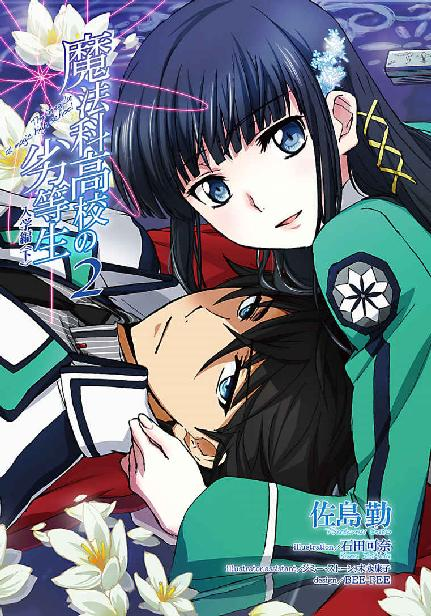
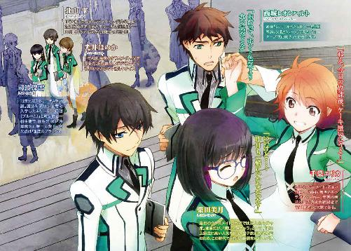
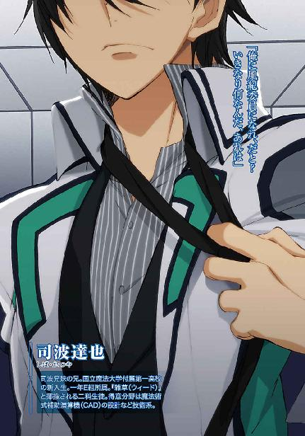
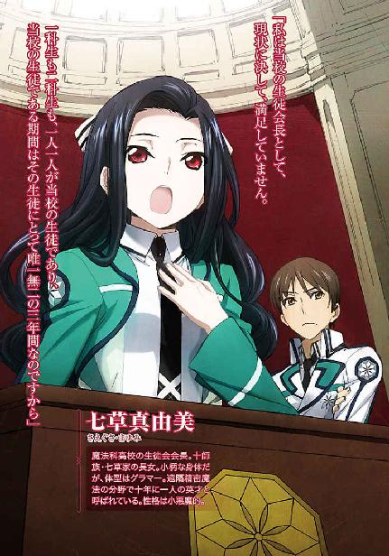
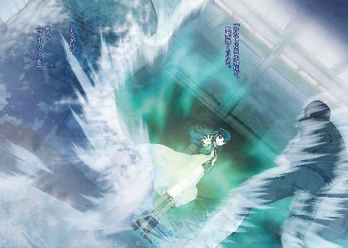
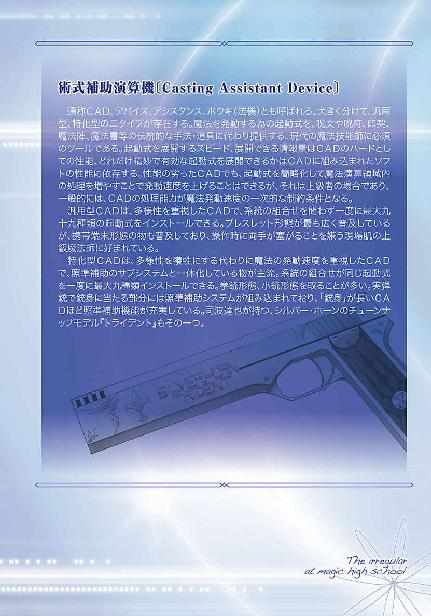
本書（電子版）に掲載されているコンテンツ（ソフトウェア／プログラム／データ／情報を含む）の著作権およびその他の権利は、すべて株式会社ＫＡＤＯＫＡＷＡおよび正当な権利を有する第三者に帰属しています。
法律の定めがある場合または権利者の明示的な承諾がある場合を除き、これらのコンテンツを複製・転載、改変・編集、翻案・翻訳、放送・出版、公衆送信（送信可能化を含む）・再配信、販売・頒布、貸与等に使用することはできません。
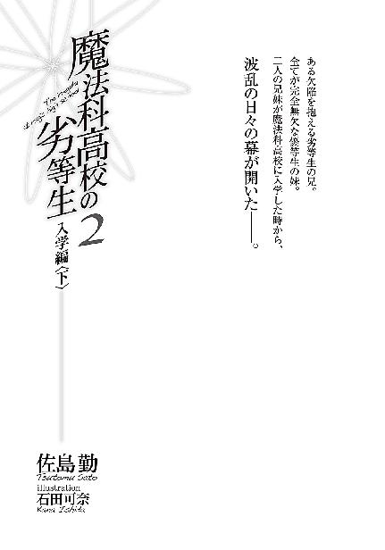
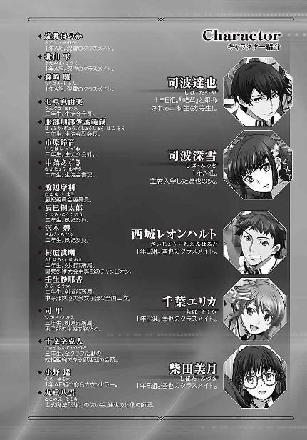
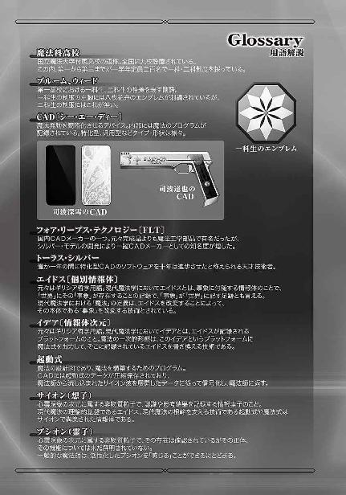
［６］
閉門時間間際の部活連本部。
「──以上が剣道部の新勧演武に剣術部が乱入した事件の顚末です」
達也が目撃し体験した事件の一部始終、壬生紗耶香と桐原武明の口論から二人の私闘を経て、彼自身が剣術部を相手取った乱闘未遂に至る経緯を語り終えた、その前には三人の男女。
「それにしても、十人以上を相手にして良く無事だったわね......」
向かって右に生徒会長、七草真由美。
「正確には十四人か。さすがは九重先生のお弟子さんというところかな」
中央に、ある意味で彼の上司である風紀委員長、渡辺摩利。
楽しそうに──「可笑しい」という意味ではなく「面白い」という意味で──笑いながら論評する言葉は、皮肉というわけでもあるまい。感情表現がいささか素直ではないが、本気で褒めているのだろう。
真由美と摩利の二人が感心している（？）のは、桐原を取り押さえた後、逆上した剣術部の集団を達也が攻撃らしい攻撃もせず防御のみであしらったことについてだ。しかし達也には、賞賛されるほどの技を見せたという実感が無かった。
彼は平均的な高校生の技量がどのくらいのレベルなのかを知らない。だからあの程度の──八雲の寺の門人たちより大分落ちる──相手を十四人同時にあしらって怪我もさせないという真似がどの程度の価値を持つのか、判らなかった。
それよりも達也の意識は、向かって左側に立っている三年生の男子生徒へ向いていた。
おそらく彼が、部活連会頭、十文字克人。苗字に「十」を冠する数字付きの名門、十文字家の総領。
（巌のような人だな......）
身長は一八五センチ前後。見上げるような大男、というわけではない。
だが分厚い胸板と広い肩幅、制服越しでも分かる、くっきりと隆起した筋肉。
そういう肉体的な特徴だけでなく、人間を構成する諸要素を凝縮するだけ凝縮したような、存在感の密度が桁外れに濃厚な人物だった。
さすがに真由美、摩利と並んで第一高校三巨頭に数えられる人物、と達也はその外見と印象だけで納得した。
「当初の経緯は見ていないのだな？」
表情を改めた摩利に問われて、達也は意識を戻した。改めて、報告を終えたばかりの事件の記憶を呼び戻し、達也は摩利の質問に肯定を返した。
「はい。桐原先輩が挑発したという剣道部の言い分も、剣道部が先に手を出したという剣術部の言い分も、確認していません」
彼が見たのは紗耶香と桐原が言い争っているところからだ。エリカと二人、観覧席を後にして体育館の出口に差し掛かったところで言い争っていると思しきざわめきを耳にしていたが、その内容までは聞き取れなかった。彼が人垣をかき分けて現場を直接目にした時には、既に紗耶香と桐原が一触即発の状態で向かい合っていた。
「最初、手を出さなかったのはその所為かしら？」
この質問は真由美。
克人は頭初より聞き役に徹している。
「危険と判断すれば介入するつもりでした。
打ち身程度で済むのであれば、当人同士の問題かと」
真由美の質問に、達也は条件付きの肯定で答えた。真由美の言うように、達也が当初傍観の姿勢を取ったのはどちらを止めれば良いのか分からなかったからだ。両方を止めるという選択肢が採用できるのは話し合いの余地が残っている場合か、止める側に名声・悪名を問わず当事者を威圧するだけの「名」がある場合で、あのケースはそのどちらにも当てはまらなかった。
しかしそれだけが理由では無い。達也が聞いていた風紀委員の仕事は、魔法を使った暴力行為を取り締まることだ。紗耶香と桐原の立ち合いは、私闘ではあっても魔法抜きの剣技による闘いとして始まった。魔法──『高周波ブレード』を桐原が使わなかったら、達也は最後まで傍観に徹しただろう。
「......まあいい。確かに、いがみ合いが発生する度に我々が出て行くのも人員的に不可能だ」
勧誘時のトラブルは、部活連内部で処理するのが原則。摩利の発言はそれを踏まえたもので、真由美からも克人からも異論は出なかった。
「それで、取り押さえた桐原はどうした？」
「桐原先輩は鎖骨が折れていましたので、保健委員に引き渡しました。
とはいえ、魔法ですぐに治癒可能な程度の怪我でしたが。
保健室で非を認めておられたので、それ以上の措置は必要無いと判断しました」
実のところ、竹刀で打たれた傷は「骨にひびが入った」にとどまっており、桐原の鎖骨が「折れた」のは達也が床に叩きつけたからだが、そんな余計なことを達也は口にしなかった。
そして、桐原が負傷した現場も傷の具合も目にしていない摩利にそういう裏の事情まで解るはずもなく、
「ふむ......いいだろう。訴追は、摘発した者の判断に委ねられているのだからな」
達也の言葉にアッサリ頷いて、摩利は克人へ目を向けた。
「聞いてのとおりだ、十文字。
風紀委員会としては、今回の事件を懲罰委員会に持ち込むつもりはない」
「寛大な決定に感謝する。
高周波ブレードなどという殺傷性の高い魔法をあんな場で使ったのだ。怪我人が出ずとも、本来ならば停学処分もやむを得ないところ。それは本人も分かっているだろう。
今回のことを教訓とするよう、よく言い聞かせておく」
「頼んだぞ」
克人が軽く頭を下げ、摩利が頷く。
「でも、剣道部はそれでいいの？」
「挑発に乗って喧嘩を買った時点で同罪だ。文句をつけられる筋合いじゃない」
真由美の懸念を、摩利がバッサリ斬り捨てる。真由美もそれに反論しなかった。
風紀委員長が裁定を下し、部活連の会頭がそれを受け容れ、生徒会長が異を唱えない。これで、この件は終わりだ。
達也はその遣り取りを無関心に聞き流していた。くすぶる不満の消火活動は、彼の仕事ではない。
「委員長、自分は失礼してよろしいでしょうか」
達也はその意思を、退席許可を求めることで間接的に摩利に示した。
「ああ、いや、その前にもう一度確認しておきたい」
摩利もこれ以上、達也に仕事をさせるつもりは無かったようで（今日のところは、だろうが）、問い掛けの口調もおざなりなものだった。
「魔法を使用したのは桐原だけか？」
「そうです」
摩利の質問を、達也は簡潔に首肯した。
正確に言えば、魔法の発動に成功したのは桐原だけ、ということになるのだが、細かく説明するほどの勤労精神は、達也に備わっていなかった。
「そうか。ご苦労だった」
退出の許しを得て、達也は部活連本部室を後にした。
◇ ◇ ◇
部活連本部を出たその足で、達也は生徒会室へ向かうつもりだった。
日没まで、もう僅かだ。
いくら魔法が使えるとはいえ、年頃の少女が一人で出歩くには不適当な時間だし、それ以前に、深雪が達也を置いて帰ることを肯んじるはずもないのだった。
だが彼の予定は、道のりの半ばで修正を余儀無くされた。
部活連は生徒会室のある本校舎とは別棟におかれている。
部活連本部から生徒会室へ行くには、一旦校庭へ出て（靴を履き替える必要はない。上履き、という習慣はほとんど見られなくなっている）昇降口に回らなければならないのだが、そこに見知った顔が並んでいた。
「あっ、おつかれ～」
「お兄様」
真っ先に声を上げたのはエリカだったが、真っ先に駆け寄ったのは深雪だった。
思いがけない機敏さに、他の面々は目を丸くしている。
「お疲れ様です。本日は、ご活躍でしたね」
「大したことはしてないさ。深雪の方こそ、ご苦労様」
腰の前に両手で提げる鞄を挟んだだけの間近から、自分の顔を見上げる深雪の髪を、眼差しでねだられたとおり、達也は二度、三度とゆっくり撫でた。
深雪は気持ち良さそうに目を細めながら、兄を見詰める、その瞳を逸らさない。
「兄妹だと分かっちゃいるんだけどなぁ......」
二人へ歩み寄りながら、気恥ずかしげな表情で、微妙に視線を外しながらレオが呟くと、
「何だか、すごく絵になってますよね......」
その隣では、美月が顔を赤らめながらも、食い入るように二人を見ている。
そして、そんなレオと美月に、エリカが半眼にした両目を向けていた。
「あのね、君たち......あの二人に一体何を期待しているのかな？」
大袈裟に肩をすくめ、両手を身体の左右で上に向けて開き、俯き加減でゆっくりと首を左右に振るというわざとらしい仕草だったが、エリカがやると妙に様になっていた。
「アンタが言ったとおり、あの二人は兄妹なんだけど？」
エリカがレオを半眼で睨みながら繰り出したセリフの省略部分は、二人にもちゃんと伝わったようだ。慌てふためくレオと美月の反応がその事を雄弁に語っていた。
「ババババカ言うなよ！ なな何も期待してねえって！」
「そそそそうですよ、エリカちゃん！ へへ変なこと言わないで！」
「......ハイハイ、そういうことにしといてあげる」
もっとも、エリカの冷やかしとツッコミが入らなければ、レオと美月の勘違いは止まるところを知らなかっただろう。
そんなエリカの孤軍奮闘も知らず、達也はようやく妹の髪から手を放して三人へ目を向けた。
深雪も、名残惜しそうな顔を見せつつ、兄に倣う。
──きっと、そういう表情を見せるから、変な妄想を招くのだ。
しかし達也の方には、そんな色絡みの勘繰りにつながりかねない表情も仕草も無く、誠実な表情で、申し訳なさそうに友人たちへ声を掛けた。
「すまんな、待っていてくれたのか」
微妙な空気が払拭され、レオがカラッとした笑顔で首を横に振った。
「水くさいぜ、達也。ここは謝るとこじゃねえよ」
「私はついさっき、クラブのオリエンテーションが終わったところですから。
少しも待っていませんよ？」
美月も人当たりの良い柔らかな微笑みと共に、達也の謝罪を必要ないと否定する。
「そいつも部活が終わったばかりだから。
気にしなくていいよ」
エリカはいつもの悪戯っぽい笑顔で、人を食った答えを返した。
三者三様の笑顔で達也を出迎えるレオ、美月、エリカ。
事実が言葉と裏腹であることに達也はすぐ気づいたが、彼女たちの心遣いをあえて無にするような真似はしなかった。
「こんな時間だし何処かで軽く食べて行かないか？ 一人千円までなら奢るぞ」
現在の通貨価値は、二度のデノミネーションで百年前とほぼ同じ水準になっている。
高校生にとって千円という金額は、少し高めではあるが妥当なラインだ。
それ以上の謝罪を吞み込んだ、代わりの誘い。
それが分からぬ者も、余計な遠慮を口にする者も、ここにはいなかった。
◇ ◇ ◇
入学式の日とは別のカフェで、五人は今日一日のこと──入部したクラブのこととか、退屈な留守番のこととか、勧誘に名を借りたナンパのこととか、色々な体験談に花を咲かせたが、やはり、最も関心を引いたのは、達也の捕物劇だった。
「──その桐原って二年生、殺傷性ランクＢの魔法を使ってたんだろ？ よく怪我しなかったよなぁ」
「致死性がある、と言っても、高周波ブレードは有効範囲の狭い魔法だからな。
刃に触れられない、という点を除けば、良く切れる刀と変わらない。それほど対処が難しい魔法じゃないさ」
さっきから手放しで感心しているレオに、やや辟易した表情で達也が応じる。
「でもそれって、真剣を振り回す人を素手で止めようとするのと同じってことでしょう？
危なくなかったんですか？」
「大丈夫よ、美月。お兄様なら、心配要らないわ」
「随分余裕ね、深雪？」
今更のように顔を曇らせた美月を宥める深雪の表情は、エリカが指摘したように不自然なほど余裕があった。
「確かに、十人以上の乱戦をさばいた達也くんの技は見事としか言えないものだったけど、桐原先輩の腕も決して鈍刀じゃなかったよ。むしろ、あそこにいた人たちの中では頭一つ抜け出してた。
深雪、本当に心配じゃなかったの？」
エリカに問われた、深雪の答えは、
「ええ。お兄様に勝てる者などいるはずがないもの」
一分一厘の躊躇もない断言だった。
「──えーっと......」
これにはさすがのエリカも、絶句するしかない。
彼女はあの時の達也の技を間近で見ている。
エリカの目から見ても、桐原の太刀筋は申し分なく鋭いものだった。切れ味も真剣に劣るものでないことは、達也もその目で見ていたはずだった。その上で、達也は身体の何処にも余分な力を入れず──それは緊張や恐怖が無意識のレベルにおいても存在していなかったことを示している──桐原が竹刀を振り下ろすより早くその懐まで間合いを詰め、柄を受け止め手首を極めて合気術の要領で床に叩きつけたのだ。いや、合気術と言うよりむしろ、無刀取りと言うべきかもしれない。
あの技は、達人レベルのものと言っても過言ではなかった。達也はこの歳にして既に、達人と呼び得るほどの、少なくともそれに近い技を修めている。
それでも、ここまで自信を持って心配ないと言い切ることは、エリカにはできない。
「......達也さんの技量を疑うわけじゃないんだけど、高周波ブレードは単なる刀剣と違って、超音波を放っているんでしょう？」
「そういや、俺も聞いたことがあるな。超音波酔いを防止する為に耳栓を使う術者もいるそうじゃねえか。
まっ、そういうのは最初から計算ずくなんだろうけど」
「そうじゃないのよ。
単に、お兄様の体術が優れているというだけではないの」
美月とレオの懸念に答える深雪の表情は、失笑を堪えているようでもあった。
「魔法式の無効化は、お兄様の十八番なの」
深雪の言葉にエリカがすかさず食いついた。
「魔法式の無効化？ 情報強化でも領域干渉でもなくて？」
「ええ」
得意げに頷く深雪と「仕方ないなぁ」という顔で笑っている達也を交互に見て、エリカは感嘆の表情と呆れ顔の半々で呟いた。
「それって結構レアなスキルだと思うけど」
「そうね。少なくとも、高校の授業では教えないのではないかしら。教えられたからといって、誰にでもできることではないのだし。
エリカ、お兄様が飛び出した直後、床が揺れたような錯覚を覚えたのでしょう？」
「う～ん、あたしは大したことに成らなかったけど、ひどい乗り物酔いと同じ症状が出た生徒もいたみたい。
そういえば、最初の程じゃ無かったけど、乱闘中も頻繁に揺らぎを感じたような......？」
「それ、お兄様の仕業よ。
お兄様、キャスト・ジャミングをお使いになったでしょう？」
ニッコリと、作り笑いを向けてくる深雪に、達也はため息の白旗を揚げた。
「深雪には敵わないな」
「それはもう。
お兄様のことならば、深雪は何でもお見通しですよ」
「いやいやいやいや」
苦笑と微笑、笑顔を見合わせる二人の間に、素っ頓狂な声でレオが割り込む。
「それって、兄妹の会話じゃないぜ？ 恋人同士のレベルも超えちまってるって」
「そうかな？」「そうかしら？」
ぴったりハーモニーを奏でた達也と深雪に、たっぷり一秒は硬直したあと、レオは力尽きたかの如くテーブルに突っ伏した。
「......このラブラブ兄妹にツッコミ入れようってのが大それてるのよ。アンタじゃ最初から太刀打ちできないって」
しみじみ語るエリカに
「ああ、俺が間違ってたよ......」
身体を起こしながら、やはりしみじみとレオが応える。
「その言われ様は著しく不本意なんだが」
達也が、さして不本意とも思っていない口調で抗議（？）するも、
「いいじゃありませんか。わたしとお兄様が強い兄妹愛で結ばれているのは事実ですし」
深雪がサラリと兄を宥める。
直後、今度はエリカとレオが、同時に突っ伏した。
「ぐはっ！」
レオは、血でも吐き出しそうなセルフ効果音まで付けて、自分の心情を表現していた。
「わたしはお兄様のことを、誰よりも敬愛いたしておりますので」
それでも深雪は止まらない。友人たちへ見せつけるように、わざわざ椅子を動かして達也に身を寄せ、近くなった距離から熱い眼差しで兄の顔を見上げる。
「あーもうあたし帰ろーかなー」
エリカはテーブルに頰を押し付けたまま、すっかりやさぐれていた。
「......深雪、悪ノリも程々にな？
冗談だって分かってないのも約一名いるようだから」
「............」「............」「............」
達也が苦笑しながら深雪をたしなめると、深雪、エリカ、レオの視線が残る一人に集まった。
「......えっ？ えっ？ 冗談？」
顔を赤く染めて俯いていた美月が、沈黙を浴びせられながら、キョロキョロと左右に目をさまよわせるに至って、誰からともなくため息がこぼれた。
「......まっ、これが美月の持ち味よね」
「あぅ......」
エリカの微笑ましげな呟きに、美月の顔が別の意味で赤く染まった。
「......そういや、キャスト・ジャミングとか言ってなかったか？」
ここで、自分もノッていたとはいえこれ以上この何となくむず痒い雰囲気が続いては堪らないとばかり、レオが強引に話題を戻した。
「タネを明かせば、そうなんだ」
達也としては、こちらもあまり好ましくない話題なのだが、それ以上に彼もこの雰囲気を何とかしたいと思っていたのだろう。今は已む無し、とレオの話に乗ってきた。
「キャスト・ジャミングって、魔法の妨害電波のことだっけ？」
「電波じゃないけどな」
「慣用句よ」
レオが放った言わずもがなのツッコミを、すました顔で切り返して、エリカは何事もなかったように達也へ視線を戻した。
キャスト・ジャミングは、魔法式が、事象に付随する情報体・エイドスに働きかけるのを妨害する魔法の一種だ。広い定義でいえば無系統魔法と同じ性質を有している。
同じように相手の魔法を無効化する『領域干渉』という魔法がある。この術式は、自分を中心とした一定のエリアに対して、何の情報改変も伴わない、干渉力のみが定義された魔法式を作用させることにより、他者の魔法式の干渉をシャットアウトする技法だ。これに対して、キャスト・ジャミングは無意味なサイオン波を大量に散布することで、魔法式がエイドスに働きかけるプロセスを阻害する技術である。
領域干渉はある意味で、魔法を予約することにより、他者の魔法の割り込みを防止するものであり、基本的に相手より強い干渉力が必要となる。
一方、キャスト・ジャミングは他のユーザーがデータをアップロードしようとしている無線回線の基地局に対し、大量のアクセス要求を行うことによりアップロードの速度を極端に低下させるようなもので、干渉力の強弱はそれほど問題にならない。その代わり、四系統八種全ての魔法を妨害することのできるサイオンのノイズ、先の例で言えば、周波数を頻繁かつ不規則に切り替えることにより、一本の送信アンテナでも帯域を全て塞いでしまうような電波を作り出すことが必要とされる。
「でもあれって、特殊な石が要るんじゃなかったっけ？
アンティ......アンティ何とか」
半端なところで固有名詞を思い出せずにいるエリカに、何とか復活を果たした美月が助け船を出す。
「アンティナイトよ、エリカちゃん。
達也さん、アンティナイトを持ってるんですか？
すごく高価なものだったと思うんですけど」
アンティナイトはこの条件を満たすサイオンノイズを作り出す物質として知られている。魔法師が自身の演算でキャスト・ジャミング用のノイズを作り出すことも理論上は可能とされているが、実行は困難ともされている。
領域干渉とは異なり、キャスト・ジャミングの影響下では自分の魔法発動も阻害されてしまう為、魔法師本人の意識がキャスト・ジャミング用のノイズを構成しようとしても、無意識下では本能的にそれを拒否してしまうからだ。（魔法演算領域は無意識領域に形成されるものであり、意識の作用よりも無意識の作用の方が優先される）
その為、キャスト・ジャミングを使うには、サイオンを流すだけで条件を満たすノイズを発振するアンティナイトの利用が不可欠と考えられている......のだが、達也の回答はその常識を覆すものだった。
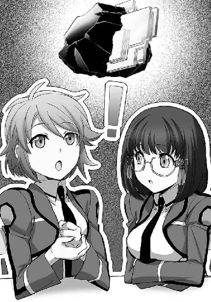
「いや、持ってないよ。そもそもアンティナイトは軍事物資だからね。値段以前に、一民間人が手に入れられる物じゃない」
「えっ？ でも、キャスト・ジャミングを使ったって......」
実際に声を発したエリカだけで無く、レオと美月も訳が分からないという顔をしている。
「あー、この話はオフレコで頼みたいんだけど？」
困惑した表情で間を取り、テーブルに身を乗り出して声を潜めた達也に、他の三人はつられたように身体を乗り出して真剣な面持ちで頷いた。
「正確には、キャスト・ジャミングじゃないんだ。俺が使ったのは、キャスト・ジャミングの理論を応用した『特定魔法のジャミング』なんだよ」
達也の囁きを聞いて、美月がキョトンとした顔で何度か瞼を瞬かせた。
「えっと......そんな魔法、ありましたっけ？」
「無いと思うけど」
美月の質問に直接答えたのはエリカだった。
「それって、新しい魔法を理論的に編み出したってことじゃない？」
エリカの声には今回も、感心や驚愕や賞賛より呆れたようなニュアンスが強く含まれていた。
オリジナルの魔法を使う魔法師は少なくない。子供の頃からオリジナル魔法を得意とする魔法師の卵も多い。だがそれは、本能的、あるいは直感的に自分にあった魔法を自然に編み出すもので、理論的に新しい魔法を構築できる魔法師は数少ない。
魔法は無意識領域の作用に大きく依存している。
無意識に使える魔法を後から理論付けするのは易しくても、理論的に新しい魔法を作り出すことは、それが単なる既存魔法のバリエーションであっても、その魔法の構成と作動原理を完全に理解することが要求されるからだ。
高校生の年齢で新しい魔法を理論的に編み出したとすれば、異常とは言われないまでも非常識なことではある。
「編み出したって言うより、偶然発見したと言う方が正確かな」
エリカの正直な反応に、達也は笑いながら答えた。
「二つのＣＡＤを同時に使おうとすると、サイオン波が干渉してほとんどの場合で魔法が発動しないことは知っているよな？」
「ああ、俺も経験したことがあるぜ」
達也の言葉に頷くレオと、
「うわっ、身の程知らず」
レオのセリフに呆れ声を漏らすエリカ。
「何だと！」
「二つのホウキを同時に使うって、魔法を並列起動させようとしたってことなのよ？
そんな高等テクができると思うなんて、身の程知らずとしか言いようが無い」
「うるせーな。できると思ったんだよ！
一応、得意属性だけなら多重起動はできるんだからな」
「ウッソーマッジーヤッダー」
「......バカにしてんのは分かってっから、その棒読み口調は止めろ。
余計にむかつく」
「ふ、二人とも、今は達也さんのお話を聞きましょう？ ねっ？」
「............」
「......フンッ」
互いにそっぽを向くエリカとレオ。
おろおろと視線を右左に振る美月に、達也は肩をすくめて見せた。
「俺としては、ここで止めてもいいんだが......続けて欲しいって？ まあ、いいけどな......。
それでだ、二つのＣＡＤを同時に使用する際に発生するサイオンの干渉波をキャスト・ジャミングと同じように魔法師を取り巻く事象の情報体を含む情報次元へ発信する。一方のＣＡＤで妨害する魔法の起動式を展開し、もう一方のＣＡＤでそれとは逆方向の起動式を展開、その二つの起動式を魔法式へ変換せず起動式のまま複写増幅し、そのサイオン信号波を無系統魔法として放てば、各々のＣＡＤで展開した起動式が本来構築すべき二種類の魔法式と同種類の魔法式による魔法発動を、ある程度妨害できるんだ。
高周波ブレードのような常駐型の魔法でも、魔法式の効果を永続的に維持することはできない。いつかは必ず起動式を展開し直さなければならない。
今回はちょうどそのタイミングを捕まえることができたというわけだ」
レオが小声で「マジかよ......」と呟いた。抑揚の乏しい声は、呆然とした顔が表面的な物だけでないことをよく示していた。
不意に、美月が咳き込んだ。グラスが空になっていたにも関わらずストローを吸い続けた結果、咽せてしまったようだ。苦しい咳の発作によって、ようやく意識上に感情が戻って来たようで、表情が驚愕に染まっていく。
エリカは眉間に皺を寄せて何事か無言で考えている。険しい顔つきからするにあまり楽しいことではないようだが、不快感を覚えているようには見えなかった。
「......具体的にどうするかは全く分からねえが、おおよその理屈は理解できたぜ。
だがよ、何でそれがオフレコなんだ？
特許取ったら儲かりそうな技術だと思うんだがなぁ」
何とか思考力を回復させたレオが、真っ先に、腑に落ちないという顔で達也にそう訊ねた。
首を傾げるレオに向けられた達也の表情は、単なる苦笑というには苦みが強いものだった。
「一つには、この技術はまだ未完成なものだということ。
相手は発動中の魔法が使えないだけで、しかも全く使えないわけじゃなくて、使い難くなるだけなのに、こっちは全く魔法を使えなくなるんだからな。
これだけでも相当致命的なんだが、それ以上に、アンティナイトを使わずに魔法を妨害できるという仕組みそのものが問題だ」
「......それの何処に問題があるんだよ？」
不審げと言うよりむしろ不満げに問うレオを、難しい顔で考え込んでいたエリカが、割と本気の声で叱りつけた。
「バカね、大有りじゃない。
国防や治安の分野では、魔法は今や無くてはならないものだわ。
高い魔法力や高価なアンティナイトを必要としないお手軽な魔法無効化の技術が広まったりしたら、社会基盤が揺るぎかねない」
「エリカの言うとおりだと俺も考えている。
世の中には、魔法を差別の元凶と決めつけて、魔法の排斥を運動している過激派もいるからな。
アンティナイトは産出量が少ないから、現実的な脅威にならずに済んでいる面がある。
対抗手段を見つけられるまで、あのキャスト・ジャミングもどきを公表する気にはなれないな」
ようやく得心がいったのか、レオは何度も深く頷いている。何故か美月も、同じような顔でウンウンと頷いていた。
「すごいですね......そんなことまで考えているなんて」
感嘆がため息となって、美月の唇から吐き出された。
「俺なら、目先の名声に飛び付いちまうだろうなぁ」
続けてレオが漏らしたため息に、深雪が柔らかで控え目な笑みをこぼした。
「お兄様は少し考え過ぎだと思いますけどね？ そもそも、相手が展開中の起動式を読み取ることも、ＣＡＤの干渉波を投射することも、誰にでもできることではありませんし。
ですが、それでこそお兄様ということでしょうか」
「......それは暗に、俺が優柔不断のヘタレだと言っているのか？」
妹の指摘に、達也は心底、情け無さそうな表情を作った。
「さあ？
エリカはどう思うかしら？」
素っ気ない態度を演じて、深雪がエリカに球を投げる。
「さあねぇ？
あたしとしては、美月の意見を聞いてみたかったり」
エリカはわざとらしい口調で、美月に球を渡した。
「ええっ？
私は、その、ええっと......」
「誰も否定してはくれないんだな......」
達也から恨めしそうな目を向けられて、深雪は朗らかな作り笑いで目を逸らし、エリカはメニューで顔を隠し、美月はオロオロと視線をさまよわせた、が、助けは何処からも現れなかった。
◇ ◇ ◇
達也は今日も走り回っていた。
新入部員勧誘週間（という名のバカ騒ぎ）も今日で四日目。「もう」と言うべきか「まだ」と言うべきか......とにかく、忙しい。授業中よりも放課後の方が遥かに疲れるのは本末転倒のような気もするが、残念ながら、抗議しても聞き入れてくれそうな相手はいない。
ここは何時の時代で何処の盛り場だ、と言いたくなる客引き──ではなく、呼び込み──でもなく、勧誘活動でごった返す校庭を突っ切るのではなく回避して（あえて苦労を買って出る必要は無いと二日目で悟った）通報を受けたトラブル現場へ駆けて行く。
その途中、校庭の、テントが林立するエリアとは反対側、植木の陰で、魔法が自分に向けて放たれようとしている兆候を達也は察知した。
彼自身に干渉するのではなく、足下の地面を掘り返す（正確には、足の下の土を前後の地面上に移動させる）魔法のようだ。
またか、と思い、達也はうんざりした。
初日に目立ちすぎたのだろう。彼はこの手の嫌がらせを頻繁に受けていた。
おかげで（？）もう慣れたものだ。達也は慌てもせず事務的に、魔法の種類に合わせたキャスト・ジャミングもどきを発動した。実は、もっと簡単に魔法を無力化する手段も持ち合わせているが、そちらの手段は後始末が面倒なことになる可能性が高い。手間を惜しむとろくな事にならないというのは、彼が長くもないこれまでの人生で得た貴重な教訓だ。
想子の波が広がり、魔法式が未発のまま霧散する。
一瞬も立ち止まらず、達也は急カーブを切った。
手間を惜しむと、本当に、ろくな事にならない。実害が無かったからと放っておいた所為で、なのか、今回のような魔法による嫌がらせはどんどんエスカレートしている。今までは風紀委員としての仕事があって後回しにしてきたが、そろそろ自衛権の行使を優先してもいい頃だろう。
しかし、相手も然る者だった。達也がターンしたと同時に、植木の陰から肉体のみでは不可能な速度で逃げ出した。おそらく、移動魔法と慣性中和魔法の併用による高速走行の魔法を前もって準備していたのだろう。あの速度だと普通なら足の動きがついて行かずに転んでしまうのがオチだが、この犯人は身体の方もかなり鍛え込んでいるようだ。
短時間で捕捉するのは難しい、達也はそう判断して、追跡を中断した。
彼が得た手掛かりは、長身で細身な犯人の後ろ姿と、犯人が右手に着けていた、赤と青の線で縁取られた白いリストバンドだけだった。
◇ ◇ ◇
一週間が過ぎた。
新入部員勧誘週間は、達也にとって嵐の日々だった。
風紀委員の中で、一番忙しかったのは彼だろう。
──それも、本来の活動とは少し違った方向性で。
初日、達也が取り押さえた桐原武明は、対戦系魔法競技では当校有数の有望株だったらしい。達也が組み伏せた時には壬生紗耶香との試合でダメージを受けていたし、だからこそあれほど容易く料理することができたのだという見方もあったが、同じ対戦系魔法競技者で細かい事情を知らない生徒にとっては、一年生の、しかも二科生に、レギュラー選手が負けたという事件は大層面白くないに違いなかった。
その結果──
「達也、今日も委員会か？」
帰り支度中の達也に、鞄を手にしたレオがそう訊ねた。
「今日は非番。ようやく、ゆっくりできそうだ」
「大活躍だったもんなぁ」
「少しも嬉しくないな」
憮然たる面持ちでため息をつく達也を前にして、レオは明らかに、噴き出すのを我慢している顔だった。
「今や有名人だぜ、達也。
魔法を使わず、並み居る魔法競技者を連破した謎の一年生、ってな」
「『謎の』ってなんだよ......」
「一説によると、達也くんは魔法否定派に送り込まれた刺客らしいよ」
ひょっこりのぞき込むように顔を見せたのは、同じく帰り支度を済ませたエリカだった。
「誰だよ、そんな無責任な噂を流しているヤツは......」
「あたし～」
「おい！」
「もちろん、冗談だけど」
「勘弁しろよ......性質が悪すぎだ」
「でも、噂の中身は本当だよ」
エリカからもたらされた「噂の中身」に、達也は再び、ため息をつく羽目になった。
そんなデマを真に受ける者はいないと思う──思いたいが、便乗してチョッカイを掛かけてくる輩は十分予想の範疇だ。
「随分大きなため息だな？」
「他人事だと思いやがって......一週間で三回も死ぬかと思う体験をさせられた身になってみろ」
「真っ平だ」
面白がっていることを隠そうともしないレオの顔に、拳を叩き込みたい衝動に駆られたが、結局、達也は三度ため息をつくのだった。
剣術部の次期エース、二年生ではトップクラスの実力者と目されている桐原武明を、新入生の、補欠が倒した。
このニュースは、前にも述べたとおり、中途半端な魔法選民主義に染まった者達を驚愕させ、怒り狂わせた。
彼らは逆恨みにすらなっていない理不尽な怒りを達也に向け、的外れな報復行動に出る者も続出する有り様だった。
かといって、あからさまな私闘は、粛清の対象になる。
達也のバックには風紀委員長が控えているし、今回の件に関して生徒会長、部活連会頭も達也の擁護に回るであろうことは、細かい事情を知らない者にも容易に想像できることだ。
ならば、どうするか。
こういうときは、事故に見せ掛けるのが定石。
彼らも、そうした。
巡回中の達也が近づくのを待って、わざと騒ぎを起こす。
彼が仲裁に入ったところで、誤爆に見せ掛けた魔法攻撃を浴びせる。
大体、このパターンだった。
達也にとってみれば、行く先々で騒動が続け様に勃発するのだから、たまったものではなかった。
ただでさえ、風紀委員という立場上、無視して通り過ぎることもできず、事態の収拾に努めなければならない。
その上で、彼を目掛けて魔法が飛んで来るのだ。その大半は魔法が効力を発揮する前に無効化することで難を逃れたが、中には潰しきれないものもあった。
どうやら自分が狙われているらしいということは一日で分かったが、裏で結託している証拠が見つかるまでは手の打ちようがないし、証拠が見つかる頃には勧誘週間が終わっている。
つまり、みすみす罠の中へ飛び込んでいかなければならないような状態だったのだ。
現行犯を発見したのは四日目のあの一件だけで、それも結局、逃げられている。さすがは名門・第一高校に学ぶ生徒、全般に、手口は極めて巧妙だった。優秀な能力を発揮する時と場所と目的を、全力で間違えているような気もするが。
「......考えてみれば、よく無事だったな、俺......」
「今日からデバイスの携帯制限が復活することですし、もう心配ないんじゃありませんか？」
「そう願いたいよ」
美月の掛けた慰めの言葉に、達也はここぞとばかり頷いた。
◇ ◇ ◇
生徒会にオフはあっても非番はない。そもそも交代制ではないのだから。
深雪は今日も生徒会室でお仕事だ。
そして、達也たち兄妹に、片方を置いて先に帰るという選択肢は存在していない。──客観的に見れば、ブラコン、シスコンと揶揄されても仕方のない二人だった。
それでも、
「申し訳ありません、お兄様。
わざわざお待ちいただくことになってしまって......」
相手を待たせることに罪悪感を覚える余地が残っているだけ、まだ救いがあるのだろう。
「気にするな、と言っても無理なんだろうがな......」
笑いながら、妹の頭をポン、ポンと軽く叩く達也。
それは叩くと言うよりも撫でると言った方が相応しい、優しい手付きで、深雪ははにかみながら気持ち良さそうに目を細めている。──下校途中の生徒が行き交う廊下を歩きながら。
誤解（？）を推奨するような仲睦まじさを見せつけながら、生徒会室へ向かう二人に向けられる視線は、好意と悪意が相半ばしている。ただそれは、仲の良すぎるカップルに向けられるありがちなものとは顕著な違いがあって、悪意の視線は達也が一手に引き受けていた。
深雪と並んで歩いている時、
彼に向けられる悪意の視線、その主成分は、先週までなら嘲りだった。
今は、忌々しげな反感、と、微妙に見え隠れする、恐怖。
強者に対する畏れ、ではなく、
未知なるものに対する、恐れ。
それは、彼の「活躍」に溜飲を下げてもいいはずの二科生も同じだった。
そういう訳だから、面識の無い相手から声を掛けられたのは、今週に入って初めてだった。
「司波君」
達也と深雪は同時に振り返った。
肉体的なスペックなら、明らかに達也が上回っている。
にも関わらず反応が同時になったのは、深雪の行動が反射的なものであったのに対して、達也の方には自分が声を掛けられたということに確信が持てない部分があったからだ。
それは、ややハスキーではあったが、女性の声だった。
「こんにちは。一応、はじめまして、って言った方がいいのかな？」
セミロングの髪をポニーテールにした、中々の美少女。
髪型は変わっていたが、彼女の顔に、達也は見覚えがあった。
「そうですね、はじめまして。
壬生先輩、ですよね？」
達也にとって、激動の一週間の幕を開けたともいえる、剣道部の二年生。
剣道部乱入事件の、一方の当事者だった。
足を止めた達也へ向かって、躊躇の無い足取りで近づいてくる。
物怖じしない性格なのか、それとも下級生だからと安心──あるいは侮っているのか。
そのどちらであるにせよ、変に隔意を持たれるよりマシではある。
深雪は、上級生が兄の前に立ち止まったのに合わせてスッ、と半歩、身を引いた。
達也に焦点を合わせていれば見えない、少しでも気を逸らせば自然と目に入る、そんな立ち位置だった。
「壬生紗耶香です。司波君と同じＥ組よ」
達也の目が、自然と紗耶香の左胸に吸い寄せられた。
緑色のブレザーに縫い付けられた、緑色の、無地のポケット。
同じ、とは、そういう意味だと、達也にはすぐに分かった。
「この前はありがとう。助けてもらったのに、お礼も言わないでごめんなさい」
親しげに投げ掛けられる微笑みは、同年代の少年にとって抗いがたい吸引力を備えていた。魔法を扱う者にとって安易に使用してはならない言葉だが、心を奪う魔力が秘められている、という文学的な表現が相応しい。──文学といっても通俗文学だが。
「あの時のお礼も含めて、お話したいことがあるんだけど......。
今から少し、つき合ってもらえないかな？」
自分の笑顔が男子高校生に与える影響力を、意識しているか無意識であるかは別にして、よく弁えているのだろう。
もっとも、美しすぎる妹が常に傍らに在る達也に対しては、幾分勝手が違うかもしれない。
「今は無理です」
あっさりと拒絶された紗耶香は、ムッと来るよりむしろ呆気にとられているようだった。
「十五分後ならば」
一方的に畳み掛ける達也のセリフに、紗耶香は表情に乏しい、と言うより表情が抜けてしまった顔で数回、忙しく瞬きした後、ようやく何を言われたのか理解できた様子だった。
「えと、それじゃあ、カフェで待ってるから」
想定外の反応にすっかり調子を狂わされながらも、紗耶香は達也の約束を取り付けることに成功した。
◇ ◇ ◇
達也が付き添うのは、生徒会室の扉の前までだ。
中まで入ってしまうと、服部と顔を合わせる可能性が高い。そうなるとお互いあまり愉快な思いはしないので、自然と、用事の無い達也の方で放課後の生徒会室を避けるようになっていた。
「じゃあ、図書館で待っているから」
昨日までは深雪が達也を待つ立場だった。
達也が深雪を待つパターンは今日が初めてだが、入学前に達也がシミュレートしていたのはこのパターンだった。
深雪は間違いなく、何らかの役職に就くと分かっていた。
故に、時間の潰し方を迷ったりはしない。
元々彼がこの学校に来た理由の一つが、国立魔法大学の関係機関からでなければアクセスできない非公開文献にあったのだから尚更である。
「図書館、ですか？」
しかし、そういう事情を知っているはずの深雪が、小首を傾げて確認の問いを返した。これには達也も、訝しさを禁じ得ない。
「......その予定だが、何故そんなことを？」
「いえ、これから壬生先輩とカフェテリアで待ち合わせをされていらっしゃいますので......」
深雪の目は、達也の喉の辺りへ向けられている。
「深雪？」
達也が名前を呼んでも、顔を上げない。
目を合わせようと、しない。
むしろ、視線を脇へ逸らしてしまう。
妹が何故こんな態度をとるのか、達也には分からない。
普通に考えれば拗ねているのだろうが、この妹に限って、ただそれだけであるはずがなかった。
問いただすにしても、ここは生徒会室の目の前で、お互いに人を待たせている状況だ。
「そんなに長話をするわけじゃない。どうせ、部活の勧誘かそこらだろう」
見当外れなことを言っているという自覚はあった。
だが、事態を打開するきっかけにはなった。
「......本当に、それだけでしょうか」
「なに？」
「単なる、クラブ活動の勧誘なのでしょうか。
わたしは、違うような気がします。
理由はありません。
ですが......深雪は、不安です。
お兄様が名声を博するのはとても嬉しいことなのですが......お兄様の本当のお力を、その一端でも知れば、私利私欲に役立てようと群がってくる輩は大勢います。
きっと、そうでない者の方が例外です。
どうか、お気をつけください」
杞憂、と笑い紛らすことは簡単だった。
彼が、司波達也でなければ。
相手が、司波深雪でなければ。
「......心配するな。何があろうと、俺は大丈夫だ」
「だから！ それが、心配なんです！」
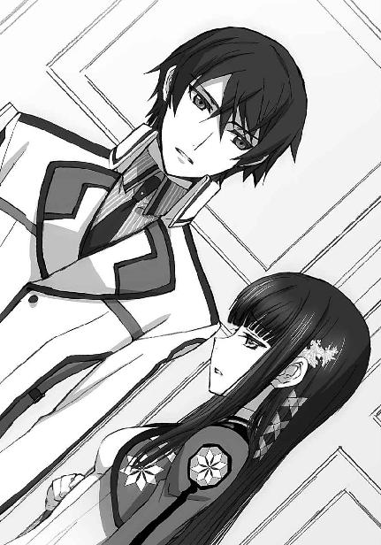
ようやく、妹が何を案じているのか、達也は朧気ながらも理解した。
「......大丈夫だ。決して、自棄を起こしたりしないから」
「......約束ですよ、お兄様」
「分かった。
......ところで深雪、たかが高校の委員会活動で、名声を博する、は言い過ぎだ」
「......もう！
いいじゃありませんか、そんなこと。
わたしにとって、お兄様のお名前は、名声なのです！」
クルリと身を翻してカードリーダーへ向かう深雪の、弧を描き流れた黒髪に隠れた頰が、ほんのりと紅に染まっていた。
◇ ◇ ◇
待ち合わせの相手は、すぐに見つかった。
何故なら紗耶香は、入口の脇に立って待っていたからだ。
「座って待っていれば良かったと思いますが」
「それじゃあ司波君が気づかないかもしれないでしょ？ こっちが誘ったのに、探させるのは悪いから」
女性らしい、あるいは年上としての気遣いなのだろうが、この人は自分のことをあまり理解していないようだ、と達也は思った。──思い切り、目立っていたのだ。
煩わしい噂がまた一つ増えたことを覚悟しなければならないだろう。
大喜びで肴にしそうな上級生の顔が二人分、脳裏に浮かび上がり、達也は心の中でため息をついた。
もっとも、それを表に（面に）出すような、不用意な真似はしない。
流石に初対面の女性と待ち合わせて、会った早々ため息をつくのは失礼だろうから。
「とにかく、座りましょう。話はそれからだ」
「そんなに混んでるわけじゃないから、飲み物を買ってからの方がいいわ」
疑問形でもなく、誘導形でもなく、断定。
少し、意外感を覚えた。
だが、あえて逆らう程のものでもない。
達也はコーヒーを、紗耶香はジュースを購入して、空いている席に、向い合わせで腰を下ろした。
一口、コーヒーを含み、カップを持ったままの体勢で、達也は向かいの席へと目を向けた。
紗耶香は鮮やかな真紅の液体を、ストローで夢中になって吸い込んでいる。
一気に三分の二程も飲み干して、ようやく顔を上げる。
目が、合った。
きょとんとした表情が、みるみる赤く染まる。
まるでジュースの色素が顔に巡って来たような塩梅だ。
「......好きなんですか、それ？」
達也としては素朴な疑問だったのだが、
「うっ......良いじゃない、甘い物が好きでも！
どうせあたしは子供っぽいです！」
いきなり怒られ......いや、拗ねられてしまった。
そんなに恥ずかしいなら最初から頼まなければいいのに、と達也は思った。
羞じらいの度合いと、無防備さ加減の釣り合いが取れていない、とも感じた。
だが口に出したのは、全くベクトルの異なる台詞だった。
「俺も、甘い物は好きですよ。
それは飲んだことがありませんが、家ではよくジュースを飲んでいます」
「そうなの？」
「ええ」
「そっか......」
実際にそういう仕草をしているわけではないが、胸を撫で下ろす紗耶香の様は、年長者に見えなかった。──先週と、随分印象が違う。
「えっと、気を取り直して、っと......。
改めて、先週はありがとうございました。司波君のおかげで大事に至らずに済みました」
揃えた両膝に手を置き、居住まいを正して、一礼する紗耶香。
流石は「剣道小町」というべきか、先程までの「可愛らしい女の子」より余程、様になっている。
「礼には及びません。あれは仕事でやったことですから」
達也は、半自動で紡ぎ出される考察を意識の裏で聞き流しながら、当たり障りの無い答えを返した。
「ううん、桐原君を止めてくれたことだけじゃないの」
だがその形式的な答えは、紗耶香のお気に召さなかったようだ。
「あんな果たし合いじみた真似をしたんだもの、あたしと桐原君だけじゃなくて、剣道部と剣術部の両方に懲罰があってもおかしくなかった。
穏便に済んだのは、司波君がお咎め無しを主張してくれたからでしょ？」
「実際に、騒ぎ立てる程のことではありませんでしたからね。
壬生先輩と桐原先輩以外、怪我人も出なかったことですし。
その後の乱闘は剣術部の暴走ですから、少なくとも剣道部が咎められることではありません」
「あれこそ、相手が司波君だったから大問題にならずに済んだようなものよ。他の人だったら怪我人は免れなかったわ。怪我をせずに取り押さえることは他の人にもできたかもしれないけど、怪我をさせずに自分も傷を負わずにあの人数をあしらうなんて、今でも半ば信じられない。手加減してもらったことだけでも、剣術部は司波君に感謝すべきだと思う。
その点、あたしは桐原君に怪我をさせちゃったけど......言い訳に聞こえるだろうし、司波君は『女の子なのに』って思うかもしれないけど......。
武道をやっていればあの程度、よくあることだわ。
上達の過程で、自分の強さをアピールしたいという気持ちを抑えられない時期が、必ずと言って良いくらい、ある。
司波君にも、覚えがない？」
「そうですね。分かります」
──噓だった。
少なくとも、その半分は。
彼には武道の修行をしているという意識は無い。
彼が学んでいるのは、あくまでも戦闘の技術。任務を遂行する能力のアピールなら理解できるが、単純に強さを見せつけるという衝動には縁がなかった。
「そうでしょ？」
だが、当たり前のことだが、今日初めて言葉を交わす紗耶香に、達也の内心まで分かろうはずもなかった。
「大袈裟に騒ぎ立てる必要なんて無いのよ。
そりゃあ、あの後の乱闘で怪我人が何人も出てたなら、さすがに大問題かもしれないけど、実際には怪我らしい怪我をした人なんて桐原君だけだったんだもの。あたしと桐原君は怪我をするかもしれないってことくらい納得した上で竹刀を向け合っていたんだから、それをあれこれ言われるなんて余計なお世話なのよ」
それは違う、と達也は思った。あの一件は、桐原が規則を破って危険度の高い魔法を使ったことが問題だったのだ。勧誘時のトラブルは、部活連内部で処理するのが原則。紗耶香と桐原が竹刀を振り回しただけで終わっていたなら達也は介入しなかったし、摩利も不介入を貫いただろう。
もっとも、思っただけで口にはしなかったが。
「それなのに、あのくらいのことを問題にしたがる人が多いの。
今回も、同じ程度のことで摘発された生徒が大勢いる。
風紀委員の、自分の点数稼ぎの為にね」
「......俺も一応、委員会のメンバーなんで......。
すみません」
「ご、ごめん！
そんなつもりじゃないのよ、ホントに！」
決まり悪げな顔を装って頭を下げる達也を見て、いつの間にかエキサイトしていた紗耶香は、大慌てで釈明を始めた。
「あたしが言いたいのは、司波君はそんな連中とは違ってて、そのおかげで助かったってことで、えと、風紀委員会の悪口が言いたかったんじゃなくて、そりゃああの連中は嫌いだけど、って、あれっ？」
ゲシュタルト崩壊を起こしてしまった紗耶香を、達也は無表情に観察している。......目が、笑っていたが。
既に意味をなさなくなっていた単語の羅列は次第にフェードアウトしていき、遂には声にすらならず口だけを開閉していた紗耶香は、達也の視線に含まれる笑みに気づき、恥ずかしげに俯いた。
「......ねえ、司波君って、いじめっ子なの......？」
何処かで聞いたような台詞だった。
「そんな特殊な性癖は持ち合わせていません」
しれっと嘯く。そして、反論の機先を制して言葉を重ねる。
「それで、お話とは、なんでしょう」
「......単刀直入に言います」
唇は違う音韻を形作っていたが、諦めたのか、はたまた目的意識が勝ったのか、
「司波君、剣道部に入りませんか」
紗耶香はようやく、本来の用件を切り出した。
予想通り過ぎて、いささか拍子抜けの感を否めないが、答えは決まっていた。最初からそう言ってくれれば、手っ取り早かったのだが、と小さな苛立ちを覚えつつ、達也は用意済みの答えを返した。
「せっかくですが、お断りします」
「......理由を聞かせてもらってもいい？」
僅かな考慮の素振りも無い即答に、紗耶香はショックを隠しきれない面持ちだった。
「逆に俺を誘う理由をお聞きしたいですね。
俺が身につけている技は、剣道とは全く系統が異なる徒手格闘術。壬生先輩の腕なら、分からないはずはありませんが？」
特に声を荒げたのでもなく、挑発的でもない落ち着いた口調だが、指摘自体が韜晦を許さぬ鋭い切れ味を持っていた。
紗耶香の視線が、宙をさまよう。
必死に脱出路を探しているような仕草だった。
ある意味で、そのとおりだったのだろう。
彼女は一つため息をつくと、観念した顔で、口を開いた。
「魔法科学校では魔法の成績が最優先される......そんなことは最初から分かってて、こっちも納得して入学したのは確かだけど、それだけで全部決められちゃうのは間違っていると思わない？」
「続きをどうぞ」
「授業で差別されるのは仕方がない。あたしたちに実力が無いだけだから。
でも、高校生活って、それだけじゃないはずよ。
クラブ活動まで魔法の腕が優先なんて、間違ってる」
達也がこの一週間で見てきた限りにおいて、魔法競技に関係の無いクラブ活動が学校側から不当な抑圧を受けているという事実はなかった。
確かに、魔法競技系統のクラブは、学校から様々なバックアップを受けている。
だがそれは、魔法科高校としての名前を上げるための宣伝の一環であって、学校経営の観点から行われていることだ。
思うに、正面で熱弁をふるっているこの女の子は「優遇されていない」ということと「冷遇されている」ということの区別がついていないのだろう。
しかし、この結論は性急すぎたようだ。
「魔法が上手く使えないからって、あたしの剣まで侮られるのは耐えられない。無視されるのは我慢できない。魔法だけで、あたしの全てを否定させはしない」
思いがけない、強い口調。
そこに込められている感情は、信念を超えて妄執に近いものがある。達也はそう感じた。
マジマジと自分を見詰める達也の視線に居心地の悪さを感じたのか、紗耶香は咳払いをして居住まいを正した。
「あたしたちは、非魔法競技系のクラブで連帯することにしたの。剣道部以外にも大勢賛同者を集めた。
今年中に、部活連とは別の組織を作って、学校側にあたしたちの考えを伝えるつもり。
魔法が、あたしたちの全てじゃないって。
その為に、司波君にも協力してもらいたいの」
「なるほど......」
アイドルかと思っていたら、とんだ女闘士だったわけだ。
自分の見る目の無さを、達也は笑った。
「......バカにするの」
その笑いをどうやら勘違いしたようだ。
このまま誤解していてくれた方が、後腐れ無い気もしたが、達也はつい、余計なことを口にしてしまった。
「そんなつもりはありません。自分の思い違いが可笑しかっただけですよ。
先輩のことをただの剣道美少女と思っていたんですから、俺も見る目が無い......」
後半は、半ば独り言だった。
入学以来、一癖も二癖もある美少女が次々と登場した所為か、普通の美少女を無意識に期待していたのか、と大声で自分を笑い飛ばしたい気持ちすらあった。
「美少女......」
意識が内側へ向いていた為に、紗耶香の呟きも彼女が顔を赤らめてそわそわと挙動不審になっていたことも、達也は気づいていなかった。
「壬生先輩」
「な、何かしら」
気がつかないまま笑いの衝動を収めて、達也は表情を改めた。
紗耶香の応える声が多少ひっくり返っていたが、達也に気に留めた素振りは無い。
そして達也は、本当の意味で余計な一言を、吐いてしまった。
「考えを学校に伝えて、それからどうするんですか？」
「......えっ？」
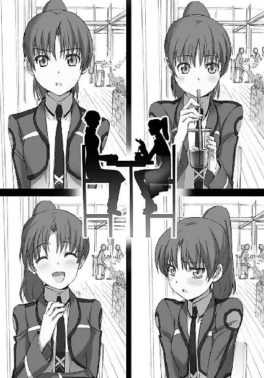
［７］
生徒会室での昼食風景も、最初の頃とは──と言ってもまだ二週間も経っていないのだが──様変わりしていた。
まず、ダイニングサーバーの出番がめっきり無くなった。
摩利、深雪に続いて真由美もお弁当を作ってくるようになったからだ。
実績の無い真由美の腕前はいささか懸念されるところだったが（と言っても懸念していたのは摩利だけだった）、まずまず無難なレベルはクリアしていて、今ではおかずの交換などして楽しんでいる。
それから、メンバーが増えた。
あずさは特に声を掛けられない限りクラスメイトと一緒に学食、がパターンだったのだが、最近は毎日声を掛けられている状態になっていた。
一年生と三年生だけではバランスが悪い、という、ワガママと言うべきか無茶苦茶と言うべきか、とにかく理屈になっていない理由による招集なのだが、それでも逆らえないところが──本人には不本意だろうが──あずさらしかった。
ちなみに男女比は一対四。
バランスが問題になるなら余程アンバランスだが、こちらは問題ではないようだった。
「達也くん」
「何でしょうか、委員長」
そんなメンバーでお昼をとっている最中だった。向かい側正面から、摩利が達也の名を呼んだ。（なおテーブルの位置関係は達也の隣が深雪、達也の正面が摩利、深雪の正面が真由美で、真由美の隣にあずさが座っている）
摩利は然り気無く切り出したつもりなのだろうが、野次馬丸出しの笑みが隠しきれていない。
そして、そんな表情までもがハンサムな少女だった。
「昨日、二年の壬生を、カフェで言葉責めにしたというのは本当かい？」
食べ終わっていて良かった、と達也は思った。
何か口に含んでいたなら、粗相しているところだ。
「......先輩も年頃の淑女なんですから、『言葉責め』などという、はしたない言葉は使わない方がいいと思いますが」
「ハハハ、ありがとう。
あたしのことを淑女扱いしてくれるのは、達也くんくらいのものだよ」
「そうなんですか？ 自分の恋人をレディとして扱わないなんて、先輩の彼氏はあまり紳士的な方ではないようですね」
「そんなことはない！ シュウは......」
そこまで言いかけて、摩利は「しまった」という顔で口をつぐんだ。
「............」
そんな上司を──と言っても高校の委員会の上役でしかないのだが──達也は無表情、という名の表情で見詰めている。
「............」
「............」
「......なぜ何も言わない？」
「......何かコメントした方が良いですか？」
摩利の視界の端で、豊かに波打つ黒髪が跳ねた。
甚だ不本意ではあったが、摩利は目線を横にスライドさせた。
予想どおり、
真由美が背中を向けて、肩を震わせていた。
その背中を半眼で見る。
すぐに目を逸らした。
逆戻りした視線は、達也のものと交わった。
「......それで、剣道部の壬生を言葉責めにしたというのは本当かい？」
どうやら、今の一幕を全て、無かったことにしたいらしい。
達也は、摩利の隣を見た。
真由美が声を殺して笑う、のを止めて、芝居じみた仕草で肩をすくめていた。
──仕方がない。
ここは、ローカルルールに従うとしよう、と達也は思った。
「ですから、『言葉責め』などという表現は止めた方がよろしいかと......深雪の教育にもよくありませんし......」
「......あの、お兄様？
もしや、わたしの年齢を勘違いされていませんか......？」
不本意そうに、それでも遠慮がちに深雪が小声で抗議したが、達也に目で謝られて、すぐに引き下がる。
再び、沈黙という名のバトル。
しかし、この手の戦いは、往々にして千日手にしか成らない。
将棋なら、仕掛けた側が手を変える。
だがこの場のローカルルールでは......残念ながら、達也の方が手を変えざるを得ない。
立場というのは、色々な場面で理不尽に働くものなのだ。
「......そんな事実はありませんよ」
「おや、そうかい？
壬生が顔を真っ赤にして恥じらっているところを目撃した者がいるんだが」
不意に隣の席から冷気が漂って来たのを達也は感じた。
「お兄様......？
一体何をされていらっしゃったのかしら？」
気の所為では無かった。
物理的に、かつ局所的に、室温が低下している。
「ま、魔法......？」
あずさの呟きには怯えが混じっていた。
現代魔法学は超能力研究の延長線上にある。
それはつまり、現代魔法は超能力と呼ばれた異能の持つ性質も潜在的に受け継いでいるということ。
古式魔法と超能力の最大の違いは、発動に思考以外のプロセスが必要か、必要無いかということだ。
現代魔法がＣＡＤを必ずしも必須としないのも、根本的にはここに由来する。
しかし同時に、現代魔法は超能力とイコールでもない。
通常、「超能力者」は一種類、多くとも数種類の異能しか行使できない。
いわゆる「超能力」をシステム化し体系化した現代魔法は、発動プロセスに魔法式を、そして魔法式の構築ツールとして起動式を導入することにより、数十種類から多い者では百数十に及ぶ種類の魔法行使を可能にしている。
もっとも、現代魔法の分類は細分化されすぎているきらいがあり、超能力と同じ尺度の大まかな分類では、せいぜい二、三十種類になるだろう。だがそれでも、圧倒的な多様性と言える。
現代の魔法遣い＝魔法師は、魔法式を介して多彩な魔法を行使する。それは同時に、多種多様な魔法を行使する魔法師は、魔法式を媒介とした魔法の発動に、自らの精神を適応させるということでもある。
特定の魔法に特化した、超能力者に近い魔法師ならば、思考のみで、明確に意図すること無しに魔法を発動することもあり得るが、数十種類の魔法を行使する魔法師が意図せずに魔法を発動することは通常あり得ないのだ。
確かに魔法式は無意識領域で処理するものだが、それは意識して無意識領域を使うということであって、無意識に魔法式が構築され処理されることは絶対に無い。
もし多種類の魔法を使いこなす魔法師が意図せずに魔法を発動することがあるとすれば、
「事象干渉力がよっぽど強いのね......」
真由美の呟きに、達也は苦笑いを浮かべた。
切り捨てられた「超能力」の残り香でも「現実」を変え得る程の、事象に付随する情報体に対する干渉力。
魔法の暴走は、未熟の証であると共に、卓越した才能の証でもあった。
「落ち着け、深雪。ちゃんと説明するから。
まず、魔法を抑えろ」
「申し訳ありません......」
兄の言葉に、深雪は恥ずかしげに目を伏せ、ゆっくり息を整えた。
室温の低下が止まる。
「夏場は冷房要らずね」
「真夏に霜焼けというのも間抜けですが」
場を和ませる、というより自分が落ち着きを取り戻す時間稼ぎの色彩が濃い真由美のジョークを、達也はさらりと流した。
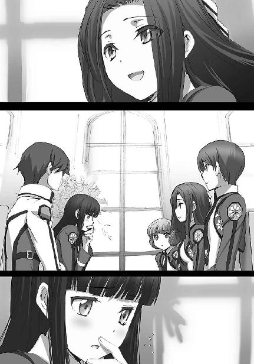
その上で達也は、この場の全員に、紗耶香との会話を正確に再現して聞かせた。
「どうも、風紀委員会の活動は、生徒の反感を買っている面があるようですね」
最後にそう締めくくると、摩利と真由美が同じように顔を曇らせた。
「しかし、点数稼ぎに強引な摘発、などという事が本当にあるんですか？
少なくともこの一週間、そういう事例は見聞きしていませんが」
「わたしもです。
わたしの場合はモニター越しにしか現場を見ておりませんが、あの無秩序ぶりからすれば、風紀委員会の皆様の活動は、むしろ寛容だと思われますが」
達也と深雪の指摘に、真由美はいっそう沈鬱な表情になり、摩利は首を振りながら口を開いた。
「それは壬生の勘違いだ。思い込み、なのかもしれないが。
風紀委員会は全くの名誉職で、メリットはほとんど無い。
対抗戦の成績のように、演習の評価が加点されるというようなことも皆無だ。
風紀委員を務めた、ということで、多少は定性的な評価を得られるかもしれないが、それも校内だけのこと、生徒会役員のように卒業後も高評価の要因になる、ということもない」
「......だけど、校内では高い権力を持っているのも、また、事実。
特に学校の現体制に不満を持っている生徒から見れば、学内秩序維持の実働部隊である風紀委員会は、権力を笠に着た走狗に見られることもあるの。
正確には、そういう風に印象を操作している何者かがいるんだけどね」
真由美の回答には、達也も驚かずにいられない。
思いの外、根の深い話のようだ。
「正体は分かっているんですか？」
彼としては、当然の質問だった。
「えっ？ ううん、噂の出所なんて、そう簡単に特定できるものじゃないから......」
「......張本人を突き止められれば、止めさせることもできるんだがな」
だが、真由美と摩利にとっては、予想外の質問だった。
さっきの真由美の発言も、つい口を滑らせてしまったもの。
達也は真っ直ぐに真由美の目を見た。
真由美はすぐに視線を逸らした。
達也が、これほどハッキリと動揺している真由美を見るのは、初めてだった。
「俺が訊いているのは、末端であることないことデマを流して印象を操作している下っ端の正体ではなく、背後で操っている連中の正体なんですが」
腕がクイッ、クイッと引かれるのを感じた。
目だけを動かして見ると、机に隠れて深雪が彼の袖を引っ張っていた。
踏み込み過ぎだ、と言いたいのだろう。
だが達也には、ここで退く気はなかった。
彼の脳裏には、彼に魔法を仕掛けて逃げ去って行った男子生徒の映像が再現されている。その右手首に巻かれていた、青と赤のラインで縁取られた白いリストバンドが達也の意識の中でズームアップされた。
「例えば、『ブランシュ』のような組織ですか？」
動揺が驚愕に変わった。
硬直する真由美、そして摩利。
そんな二人の姿を、あずさが目を丸くして見ていた。
どうやら、あずさは詳しいことを知らされていないらしい──達也はそう思った。
「何故、その名前を......」
「別に、極秘情報という訳でもないでしょう。
報道規制が掛かっているようですが、噂の出所を全て塞いでしまうことなんて、それこそ、できませんから」
達也にしてみれば、真由美がここまで驚いていることの方が、驚きだった。
反魔法国際政治団体「ブランシュ」。
魔法師が政治的に優遇されている現代の行政システムに反対し、魔法能力による社会差別を根絶することを目的に活動する、というのが彼らの掲げる理念だ。
だがそもそも、この国には魔法を使える者が政治的に優遇されている、という事実がない。
むしろ、魔法師を道具として使い潰す軍や行政機関のやり方に、非人道的という非難が浴びせられているのが実情である。
これは、世界一の人口を抱える隣国に比べて、どうしても動員可能兵力の絶対数で劣ってしまうハンデを質で埋めなければならないという、如何ともしがたい必要性の故だ。
確かに魔法師の軍人・行政官は、そうでない者より高い報酬を受けているが、それは単純に労働の量に応じたものでしかない。命を磨り減らす過重労働の対価でしかない。
反魔法組織のほとんどは、自らが作り上げた虚構に対する批判を元に反体制運動を行っている組織であり、ブランシュはその中でも最も先鋭な活動を行っている組織の一つに挙げられている。
この国では建前上、政治活動の自由が保証されているから、単に政府を批判するだけならば取り締まられることも弾圧されることもない。だが反体制運動は往々にして犯罪行為と結びつきやすいものであり、また実際に、テロ行為に走った反魔法組織の例も複数ある。
ブランシュは現在、公安当局から厳重にマークされている組織の、代表的なものだった。
そして、達也の足下を魔法で掘り崩そうとして失敗した生徒が右腕に巻いていたリストバンドの配色、青と赤のラインで縁取られた白い帯は、ブランシュの下部組織、「エガリテ」のシンボルマークだ。エガリテとブランシュは直接のつながりを持っていないことになっているが、実態はブランシュの一組織であり、政治色を嫌う若年層を吸収するための表向きの看板に過ぎない、ということは知る人ぞ知る事実だった。
一体どの程度の数が入り込んでいるのか、それは分からない。もしかしたらあの生徒が最初の一人なのかもしれない。だが単なるシンパではなく手足となる工作員を生徒の中に紛れ込ませているということは、それを可能とする足場をこの第一高校に対して築いている可能性が高かった。
「こういうことは中途半端に隠しても、悪い結果にしかつながらないものなんですがねぇ。
いえ、会長のことを非難しているのではなく、政府のやり方が拙劣だと言っているだけなんですが」
達也が言い訳の形で慰めを掛けても、真由美の表情は晴れなかった。
「......ううん、達也くんの言うとおりよ。
魔法師を目の敵にする集団があるのは事実なんだから、彼らが如何に理不尽な存在であるか、そこまで含めて正しい情報を行き渡らせることに努めた方が、一見もっともらしく不都合なアジテーションごとその存在を丸のまま隠してしまうより、効果的な対策を取れるのに......私たちは正面から対決することを、避けて──いえ、逃げてしまっている」
むしろ、自分を責めるような口調になっていた。
「それは仕方がないでしょう」
だからその、突き放すような口調は、随分冷たく感じられた。
「この学校は国立の施設ですから。
俺たち生徒は身分上、まだ公務員ではありませんが、学校運営に関わる生徒会役員が国の方針に縛られるのは仕方のないことです」
「えっ？」
温度のない声音と、掛けられた言葉の内容が頭の中で上手く結びつかずに、真由美は戸惑った顔で達也を見詰めた。
「......会長の立場では、秘密にしておくのもやむを得ないということですよ」
居心地悪そうに目を逸らした達也を見て、摩利がにんまりと唇を歪める。
「ほほぅ、達也くん、中々優しいところがあるな」
「でも、会長を追い詰めたのも司波くんなんですよね......」
ぼそっと呟く、あずさの一言。
すかさず摩利の追撃が入った。
「自分で追い込んで自分でフォローする、か。ジゴロの手口だね。
真由美もすっかり、籠絡されているようだし、達也くんは中々の凄腕だな」
「ちょ、ちょっと、摩利、変なこと言わないで！」
「顔が赤いぞ、真由美」
「摩利！」
じゃれ合いを始める生徒会長と風紀委員長。
その間、達也は素知らぬ顔で明後日の方角を向いていた。
妹の冷たい眼差しにも、気づかぬふりをして。
「さてと......そろそろ時間ですから、俺たちは教室に戻ります。
行こう、深雪」
まだじゃれ合いを続けている真由美と摩利に声を掛けて、達也は席を立った。
機嫌を損ねていた深雪は、誠意を込めた説得で懐柔済みだ。
それを見ていたあずさは顔を真っ赤にして部屋の隅に置かれたコンソールの前へ逃げてしまったが、達也の関知するところではなかった。
「ああ、待ち給え、達也くん。
っと、真由美、ストップだ、ストップ。真面目な話をするところだぞ」
「......続きは放課後、じっくり話をつけましょう」
「わかったわかった......全く、見かけによらず執念深いな......。
それで達也くん、結局、返事はどうするつもりなんだい？」
「返事を待っているのは俺の方ですから、それを聞いてから決めますよ」
昨日、カフェテリアで達也が投げ掛けた質問に、紗耶香は答えることができなかった。
──学校側に自分たちの考えを伝えて、それからどうしたいのか──
紗耶香はただ「あ」とか「う」とか発音するだけで、意味のある回答を紡げなかった。
だから達也は、彼女に宿題を出したのだ。
自分の考えがまとまったら、もう一度、話を聞かせてもらうと。
「今の話を聞いて、放っておけることではないと分かりましたから」
「──頼んだぞ」
「何を頼まれれば良いのかさえ、今の段階では見当もつきませんが」
「できる範囲で構わないさ」
「期待されているのか、いないのか、微妙なニュアンスですね......まあ、その程度で良ければ引き受けました」
放っておけることではない、と達也が言ったのは、リップサービスの類ではない。反魔法組織の活動が制度を標的としたものに止まるのであれば彼の方から積極的に動く必要は無いが、暴力を伴う反体制運動は往々にして象徴的地位にある個人を標的とするものだ。本年度主席入学にして生徒会役員である深雪が的にされない、とは言い切れない。物陰でコソコソ立ち回ることしかできない犯罪者に深雪が後れを取るとも思えないが、万が一、ということもある。
「俺にできる範囲のことは、やりましょう」
醒めた口調で請け合った達也とその背後で小さく一礼した深雪の姿が扉の向こうへ消えるのを見送って、摩利は小さく呟いた。
「多分それが、ベストの結果につながるだろうからね」
◇ ◇ ◇
風紀委員会は、その業務の性質上、本部に毎日顔を出す必要はない。
委員長からして、普段は階上の生徒会室に入り浸っている。
人選も各方面から武闘派を選りすぐって集めたメンバーだから、事務とか整理整頓とかはどうしても疎かになりがちだったところに、人が居着かない所為で、部屋が荒れ放題という嘆かわしい事態に陥っていたのだった。
達也は新入部員勧誘週間の戦績以前に、唯一の事務スキル保有者として風紀委員会の中で確固たる地歩を──不本意なことに──築いていた。
今日も、本来ならば非番のところ、修羅場を極めた新入部員勧誘週間の活動報告が全く整理されていないということで、摩利からヘルプの要請が入っている。──ヘルプといっても、実際に作業するのは達也一人だが。
この状況は、全く彼の本意ではなかった。
放課後は魔法大学とその付属教育機関である魔法科高校に置かれた専用端末からしか見ることのできない大学所蔵の非公開資料を図書館で閲覧する、それが入学当初に立てた彼の予定だったのに、あれやこれやアレヤコレヤあって、研究が少しも進んでいない。
（とにかく、今日のところは報告書を仕上げるか......）
非生産的と知りつつため息交じりに心の中で独白し、まずは深雪と合流すべく、課題を終えた端末からログアウト──しようとした、その時。
まるでタイミングを見計らっていたかのように、ディスプレイに着信の通知が表示された。
そこには学校のサインが入っている。
つまりこれは、生徒に対して強制力を持つ指導あるいは通達のメールということだ。
当然、無視するわけにも行かず、腰を浮かせかけていた椅子に座り直して、受信メールを開いた。
送信者欄には、「小野 遥」と表示されていた。
◇ ◇ ◇
「急に呼び出してごめんね」
「いえ、特に急ぎの用はありませんから」
カウンセリング室で、少しもすまなさそうには見えない笑顔で形式的な謝罪を行った遥に、達也も心のこもっていない社交辞令で応えた。
本音を言えば、彼はこの呼び出しを迷惑に感じていた。
確かに急ぎではなかったが、手伝いを約束していた摩利に対して、断りのメールだけでは済まされず、音声通信で謝り倒した末に、予定以上の仕事を押しつけられる羽目に陥った。
エスコートをキャンセルした深雪は、表面上こそいつもと変わらぬ様子を保っていたが、帰宅してからどうやって機嫌を取ろうかと、今から頭が痛い。
そもそも彼には、カウンセラーに相談したい事など無いのだ。
何故自分がここに呼ばれたのか、早く説明して欲しいところだった。
「どう？ 高校生活にはもう慣れたかしら？」
そんな彼の内心を知ってか知らずか──確実に、知らないだろうと達也は思っている──遥は定番とも思える質問を投げ掛けてきた。
「いいえ」
それに対する達也の回答は、定番とは言いがたいものだった。
「......何か困っていることがあるの？」
「想定外の出来事が多くて、中々学業に専念できません」
副音声は、無駄話は止めてさっさと本題に入れ、時間がもったいないじゃないか、である。
心の副音声は聴こえなくても、非友好的な気分でいることは何となく分かるのか、遥は苦笑と微笑の中間のような曖昧な笑みを浮かべて、これ見よがしに足を組み替えた。
丈の短いタイトスカートの下から、薄手のストッキングに包まれた肉感的な太股がのぞく。
向い合わせの椅子に腰掛けている二人の間に、視線を遮る物は無い。
現代のマナーでは、公の場において肌の露出は抑えることを良しとする。
女子生徒も皆、スカートの下に素肌の色が透けない厚手のタイツまたはレギンスの着用が義務となっている校内において、成熟度を別にしたとしても、滅多にお目にかからぬ刺激的な眺めだった。（余談だが、肌を全く露出しないファッションでも、繊維素材の進歩により、真夏も快適に過ごすことができる）
そういえば上も胸元が大きく開いた淡い色のブラウスで、下着の線が透けて見えている。
学校の職員が生徒を前にする服装としては少々挑発的なファッションだ。
「......どうしたの？」
思わず目が離せなくなっている達也に、遥が悪戯っぽく問い掛けた。
慌てて目を逸らし、しどろもどろの応えを返す──
「現代のドレスコードに照らせば」
──のが普通なのだろうが、達也の反応は一味違った。
「小野先生のそのお姿は刺激的すぎると思いますが」
「ご、ごめんなさい」
達也の目に興奮の色はなく、むしろ冷たく観察する視線と、声音に込められた軽い非難のニュアンスに、遥は慌てて脚を揃え、椅子に深く座り直した。
相手の動揺を誘うのは、イニシアティブを取るための王道的なテクニックだ。遥がこういう服を選んだのは、その為の方策だった。だがこの新入生（つまり達也）は、無表情にこちらを見返してくるだけだ。
調子が摑めない。
主導権を握れないことに、遥は困惑を覚えていた。
「それで、自分は何故ここに呼ばれたのでしょうか」
抑制が効いた中にも、微かに苛立ちが感じられる口調。
そして、それすらも、彼自身による演出ではないか、という疑念が湧いてくる。
たかがもうすぐ十六歳、と侮る気持ちは無いつもりだった。
一筋縄で行く相手ではない、そう考えたからこそ、慣れない色仕掛けじみた真似もしてみたのだが、どうやらリスクの少ない遠回しな段取りは諦めなければならないようだ。
遥はそう、踏ん切りをつけて、改めて達也と向き合った。
「今日は、司波君に、私たちの業務へ協力をお願いしたくて来てもらいました」
「私たちの業務、ですか？」
知能が高いのは入学試験の結果だけでも、分かっていたことだった。
それでも、こうして的確に急所を突いてくる応答には、益々警戒心をかき立てられてしまう。
「ええ、私たち、カウンセリング部の業務です」
見抜かれているかもしれないという直感が遥の意識を過ぎった。
だが今は、「カウンセリング部の業務」という建前を押し通す以外に、彼女の取るべき途は無かった。
「生徒の皆さんの精神的傾向は、毎年のように変化しています。
例えば、司波君は『自分』という一人称を使っていますね？
元々、軍務志願者の割合が高い魔法科学生の間では珍しくないものでしたが、それでも、『自分』という一人称を使う生徒が一般的になったのは、三年前の沖縄防衛戦の勝利以来です。
社会情勢の変化は、生徒のメンタリティにも変化をもたらします。特に、大きな事件が起こった後は、同じ年代の少年少女とは思えないほど、物事や自分自身に対する感じ方、考え方が変わってしまいます」
一旦言葉を切って、遥は目の前の少年の表情を窺った。
達也には少しも戸惑った様子がなく、むしろ、遥の話を既知の知識として聞き流しているように見えた。
「それで、毎年度、新入生の一割前後を選び出して、継続的にカウンセリングを受けてもらっているんですよ。
その年々の生徒のメンタリティ性向を把握し、的確なカウンセリングを行う為に」
「つまり、モルモットというわけですか」
さらりと総括する言葉。そこには当然あるべき怒りや侮蔑や嫌悪感といった負の感情が、見当たらなかった。
「その程度の事なら協力しますが、本当の目的は何ですか？」
微かな笑みと共に返された質問。
遥は、動揺を押し隠すのに全力を振り絞らねばならなかった。
「......本当の目的を隠してるって考えてるの？
心外だな。私、そんな性悪女じゃないわよ？」
あくまで軽く、冗談めかした口調は、相手を懐柔するためというより、平静を失した自分の心を悟られないためのものだった。
「サンプルにするには、自分は特殊に過ぎると思いますが」
「そうね。私も司波君は一般的な新入生とは言えないと考えているわ。
でも逆に、だからこそ協力して欲しいのよ。
貴方は一科生と二科生の壁を乗り越えた最初の例になるのかもしれないけど、貴方が最後の例だとは限らないから」
「......では、そういうことにしておきましょうか」
とりあえず説得できたようだ、と遥は胸を撫で下ろした。本心から納得したようには見えなかったが、頑なな心を解きほぐすのはカウンセラーの腕の見せ所だ、と彼女は自分に言い聞かせた。──現実逃避気味に。
「私が未熟な所為で司波君に不信感を持たせてしまったようで、遺憾に思うわ。
......じゃあ、いくつか質問させてもらっても良いかしら」
「ええ、どうぞ」
警戒されていることは分かっていたが、時間が無限に存在するわけでもない。
遥は準備していた質問を、達也へ順番に呈示した。
カウンセラーはプライバシーを扱う仕事である。守秘義務の遵守は、カウンセラーの根本的な職業倫理だ。と言ってもそれは、相手から相談を受けたことに関して、その解決の為に聴き取ったことを第三者に漏らさないという性質のものであって、遥の方から協力を依頼しているこの状況では学校外のプライベートにまで踏み込めるはずもない。必然的に質問事項は、入学してから今日までの、学校で起こったことに絞られた。
そして、入学以来の騒動について達也本人の口から一通りの話を聞き終えた遥の反応は、と言えば。
「......ありがとう。
それにしても、よく平気でいられるわね。
それだけストレスが積み重なれば、精神のバランスを崩す人だって珍しくないんだけど」
彼女は感嘆交じりに、医者のような顔でそう言った。
実のところ、遥は精神衛生を専攻して医師の資格を得ており、達也が彼女を「先生」と呼ぶのもそれ故なのだが、今の彼女はカウンセラーとして話を聞いているはずだった。
「医学的には、そうでしょうね。
ですが統計的なデータに例外はつきものです」
臨床データが統計処理の産物であることを指摘されて、遥は恥ずかしそうに目を逸らした。
しばし目を泳がせていた遥だったが、達也が古風な（時代遅れ、とも言う）壁掛け時計にチラチラ目をやっているのに気づいて──無論、遥が気づくようにやっていることだ──慌てて視線を戻した。
「えと、今日訊きたかったことは以上です。
......ところで、これはカウンセリングとは、直接関係無いんだけど......」
「何でしょう」
「二年の壬生さんに交際を申し込まれてるって、本当なの？」
「......本当に関係無いことですね」
達也は呆れ顔を隠そうともしない。
遥は焦って言葉を継いだ。
「相手が壬生さんだっていうから、少し気になって......。
詳しいことは話せないんだけど」
「他人のプライバシーを聞かされても困ります。
それで、一体何処からそんなデマを聞き付けてきたんですか？」
「デマ......なの？」
「デマですが、何か不都合でも？」
「いえ、何でもないのよ......ううん、本当の事を言うと、もし司波君に壬生さんと交際する気があるなら、お願いしたいことがあったの。
でも、司波君にその気持ちが無いならいいわ」
「交際を申し込まれてる云々がデマだと言ってるんですが。
それで、その話は何処から聞き付けてきたんですか？」
重ねて問い掛ける達也から、遥はわざとらしく目を逸らせた。
「ごめんなさい、守秘事項なの」
達也はそれ以上、追求しなかった。
「それではこれで失礼します」
追求する代わりに立ち上がり、返事を待たずに出口へ向かう。
「壬生さんのことで困ったことがあったら、いつでも相談してね」
その背中に掛けられた遥の声には、確信のようなものが込められていた。
何か「困ったこと」が起こるという、確信めいたものが。
それが何なのか、達也も全く興味が無いわけではなかったが、立ち止まることも振り返ることもしなかった。その程度の好奇心に振り回されて罠にはまるほど、彼は可愛げのある性格ではなかった。
◇ ◇ ◇
夕食後、達也が自室でコンソールに向かっていると、扉越しに声が掛けられた。
「お兄様、深雪です」
この家には、実質的に、達也と深雪の二人しかいない。
ノックされれば名乗るまでもなくそれが誰だか分かるし、声を聞けば名乗りを聞く必要もない。
それでも深雪は、事あるごとに、こうして自分の名前を告げる。
まるで、自身の名を達也の心に刷り込もうとでもするように。
まるで、自身の名を達也が忘れてしまうのを、恐れてでもいるかのように。
「入って良いよ」
達也はディスプレイから目を離さぬまま、入室を促した。
コンソールは扉から見て側面の壁に埋め込まれている。
高速でスクロールする文字列を読みながら、達也は視界の端に妹の姿を捉えた。
「お兄様に買っていただいたケーキが届きましたので......お茶にしませんか？」
誘いの言葉に躊躇いが含まれているのは、兄に余計な気を遣わせたという引け目だろうか。
達也としては、ケーキくらいで済めば安い物、というつもりだったのだが、こういう奥ゆかしさもまた、この妹の美点だった。──誰にでも発揮されるものかどうかは別にして。
ちなみに「ケーキが届いた」という表現は、百年前なら使い所がかなり限定されていただろうが、今では日常的に聞くことができるフレーズである。
物流システムの進歩は「荷物持ち」という言葉を死語に変えた。
ケーキのような小さな物でも、無料で配送してもらえる。
無論、店舗としては注文を受けてから作り始めて配送する方が、余計な商品の在庫を抱えずに済み、客の回転率を上げることができるという二つのメリットを、極小化された物流コストと秤に掛けた上でのサービスだ。
「すぐ行く」
そう答えて、達也は表示された情報をホームネットワークの共有ディレクトリへ保存した。
深雪の好きなチョコレートケーキの、口の中に残る甘すぎないクリームを、苦味を強めにしてもらったコーヒーで洗い流して、達也はリビングのディスプレイをデータ閲覧モードに変更した。
「......わたしが見てもよろしいのですか？」
達也自身もまだ食べ終わったわけではない。深雪のペースは更に遅い。
それにも関わらずデータファイルを呼び出そうとしているということは、明らかに、深雪にも見せようとしているということだ。
「もちろんだ」
それでも一応、確認のうかがいを立てて、肯定の回答に深雪は改めて腰を落ち着かせる。
「家族の団欒には相応しくない話題だと思うが、どうも、お前も無関係では済まされないことのようだし、早い内に情報を共有しておいた方が良いと思ってな。
......いや、そんなに畏まる必要はない」
フォークを置いて居住まいを正してしまった妹に、そんな必要はないと身振りを交えて示す。
達也の苦笑に、深雪は照れ笑いで応えて、再びフォークを手に取った。
「キャビネット名『ブランシュ』、オープン」
食べ物を広げたリビングのテーブルにフルキーボードは持ち込めない。
達也はあまり好きではないのだが、音声コマンドを使って、調査結果のファイルをディスプレイ上に次々と表示した。
「お昼に名前が出た、反魔法活動を行っている政治結社ですね？」
「当人たちは市民運動と自称しているけどな。裏では立派なテロリストだ。
それで、どうやらこのテロリストどもが校内で暗躍しているのは、間違いないようだ。ブランシュの下部組織にエガリテという団体があるんだが、実は風紀委員の活動中、エガリテに参加していると思しき生徒の姿を、俺は見ている」
達也の言葉に、深雪は驚き、そして小首を傾げた。
「魔法科高校で、魔法科高校の生徒が、ですか？」
「お前が疑問に思うのも当然だ」
深雪の見せた戸惑いに、達也は大きく頷くことで共感を示した。
「第一高校に限らず、魔法科学校は魔法を役立てようと考えている人間が、魔法を学びに来るところだ。それが自分の為に、なのか、他人の為に、なのかは別にして。
だから、魔法科高校の生徒が魔法を否定するのは、自家撞着でしかない」
全く以て、矛盾でしかない。社会制度としての魔法は、達也にとって、自分にマイナスのレッテルを貼り付けるものという一面を持っているが、それでも魔法を学び研究する者として、魔法を否定する気にはならなかった。
「当たり前に考えればおかしなことなんだけどね......。
その『当たり前』が通用しないから、ああいうおかしな連中が蔓延るんだよ」
「......何故そんなことになるのでしょう」
「こういうことは一般論で考えようとすると、迷路に陥ってしまう。
だから一般論ではなく、個別具体的に考えるべきだ。
まず押さえておかなければならない点は、ヤツらが反魔法主義の旗を掲げているにも関わらず、表向き魔法を否定していない、という事だ」
「そう言えば......そうですね」
「ヤツらのスローガンは、魔法による社会的差別の撤廃。それ自体は、文句のつけようもなく、正しい」
「......はい」
「では、差別とは何だろう？」
「本人の実力や努力が社会的な評価に反映されないこと、でしょうか......？」
「さっき言ったはずだよ、深雪。一般論で考えるべきではないと」
そう言いながら、達也はサイドボードに置いてあったリモコンを手に取り、スクリーンへ向けた。
十六に分割された画面の一区画が、前面に拡大表示される。
「表向き政治結社であるブランシュは、魔法師とそうでないサラリーマンの所得水準の差を、魔法師が優遇されている証拠と主張している。
ヤツらの言う差別とは、詰まるところ平均収入の格差だ。
だがそれは、あくまで平均で、あくまで結果でしかない。
高所得を得ている魔法師が、どれほどの激務にさらされているのか、その点を全く考慮していない。
魔法スキルを持ちながら、魔法とは無関係の職しか得られず、平均的なサラリーマンよりむしろ低賃金に甘んじている大勢の予備役的な魔法師の存在を完全に無視している」
淡々と語る達也の声に、感情は希薄だった。ただ、少しだけ、やるせなさがにじんでいた。
「どんなに強力だろうと、社会に必要とされない魔法は、金銭も名誉も、もたらさない」
辛そうに、深雪が目を伏せた。
立ち上がり、回り込み、妹の肩に、達也は優しく手を置いた。
「魔法師の平均収入が高いのは、社会に必要とされる希少スキルを有している魔法師がいるからだ。
絶対数の少ない魔法師の中に、相対的に高い割合で高所得者がいるから、平均収入が高く算出されるだけなんだ。
そして、そういう第一線で活躍している魔法師は、社会に貢献する──いや、この言い方は綺麗すぎるな。魔法師は、金銭的な、あるいは非金銭的な、いずれにしても何らかの利益を生み出すことによって高い報酬を受けているのであって、ただ魔法師だからという理由で金銭的に優遇されているんじゃない。
魔法の素質だけで裕福な暮らしができるほど、魔法師の世界は甘くない。
俺たちはそれを、よく知っている。
そうだろう、深雪？」
「ええ......良く存じております」
肩に置かれた兄の手に、自分の手を重ねて、深雪は深く頷いた。
「つまり、魔法による差別に反対するというブランシュの主張は、結局のところ、魔法師が金銭的に報われることに反対するという主張になっている。
魔法師は無私の精神で社会に奉仕しろ、というわけだね」
「......随分自分勝手で虫の良い主張に思われます。
生活する上で、金銭的な収入が必要なのは、魔法師もそうでない人も同じであるはずです。それなのに、魔法師が魔法で生計を立てることは許さない、魔法を使える者も、魔法以外で生きる糧を稼がなければならない......。
それは結局、自分たちには魔法が使えないのだから、魔法を人の能力として評価したくないと言っているだけなのではないのですか？
魔法師が魔法を研鑽する努力は報われなくても構わない、魔法師の努力は評価されなくても当然だと言っているのですね......。
それとも、そのような人たちは、生来の才能だけでは魔法は使えないということを知らないのでしょうか？ 魔法を使うには長期間の修学と訓練が必要だということを知らされていないのでしょうか？」
達也は深雪の背後から離れ、シニカルな笑みを浮かべながら自分の席に戻った。
「いや、知っているさ。
知っていて、言わない。
都合の悪いことは言わず、考えず、平等という耳触りの良い理念で他人を騙し、自分を騙しているんだ。
深雪が最初に訊いたね。
魔法科高校の生徒が何故、ブランシュやエガリテのような反魔法団体で活動しているのかと」
「ええ......それは、魔法否定派の本音が分かっていないからではない、と......？」
「魔法を使えない人たちが、自分たちがどんなに努力しても身につけられない魔法で、高い地位を得るのは不公平だと考える。
ならば、魔法を使えはするけれども、その才能に劣った生徒が、豊かな才能を持つ生徒に対して、自分がこんなに努力しているのに追いつけないのはおかしい、自分の方が下に見られるのはおかしい......そう考えても不思議はないと思わないか？
才能の違いなんて、魔法に限った事じゃない。芸術とかスポーツとかだけでなく、人の営みのあらゆる分野について回るものだ。
魔法の才能が無くても、他の才能があるかもしれない。
魔法の才能が無いことに耐えられないのなら、他の生き方を見つけるべきだ」
そのセリフは、達也のことを表面的にしか知らない人間には、自分に言い聞かせているように聞こえたかもしれない。だがこの場でただ一人、彼の言葉を聞いている深雪は、そんな的外れな勘違いはしなかった。
「魔法を学んでいる者が、魔法による『差別』を否定するのは、魔法から離れられないからに他ならないと俺は思うんだよ。
魔法から離れたくはない、でも、一人前に見られないことには耐えられない。
同じように努力をしても、追いつけないという事実に耐えられない。
何倍もの努力をしても、追いつくことはできないかもしれないという可能性に耐えられない。
だから、魔法による評価を否定する。
才能ある者も努力という対価を払っているんだという事実は、当然知っている。目の前でそれを見ているのだから。それなのに、その事実から目を背け、生来の才能に全ての責任を押しつけて、それを否定する。
まあ......そういう弱さは理解できないわけじゃない。俺の中にもそういう気持ちは、確かにある」
「そんなことはありません！」
達也が本気で自嘲しているのではないと、深雪にも分かっていた。それでも深雪は、声を上げずにいられなかった。
「お兄様には誰にも真似のできない才能があるのに、ただ他の人たちと同じ才能が無いというだけで、それこそ何十倍もの努力を積み上げて来られたではありませんか！」
達也には普通の才能が無いだけで、誰よりも優れた魔法の才能がある。深雪はそれを一番よく知っていると自負していた。それを否定するような真似は、例え本人であっても、彼女の兄その人であっても、認められないことだった。
「それは俺に別の才能があったからだよ」
「あっ......」
しかし達也は、深雪の言おうとしていることを解った上で、「弱さも理解できる」といっているのだった。自分の反駁が短絡的なものだったことを自覚して、恥じらいが深雪の頰に紅をさした。
「不足している現代魔法の才能を、別の才能で埋めた。
その術があったから、こうして第三者的な論評をしていられる。
もしそうでなかったら......『平等』という美しい理念にすがりついていたかもしれないな。
それが噓だと分かっていても」
「............」
淡々と語る兄の言葉に、今度は反論しなかった。達也が何を言おうとしているのか、深雪も既に理解していた。達也は自分を嘆いているのでも自分以外の誰かを憐れんでいるのでもなく、自分も含めた「人の弱さ」について語っているのだった。
「魔法の才能に劣った者は、劣っているという事実から目を背けたくて、平等という理念を唱える。
魔法が使えない者は、それもまた人の持つ才能の一種に過ぎないということから目を背けて、嫉妬を理念という衣にくるむ。
では全てを分かった上で扇動しているヤツらの、本当の目的は何か？
ヤツらの言う平等とは、魔法を使えても使えなくても同じに扱えということだ。
魔法による社会的差別の撤廃とは、魔法という技能を評価しないということだ。
それは結局、魔法の社会的意義を否定することだ。
魔法を評価しない社会で、魔法が進歩するはずはない。
魔法による差別反対を叫び、魔法師とそれ以外の者の平等を叫ぶヤツらの背後には、この国を、魔法が廃れた国にしたい勢力が隠れている」
「それは一体......？」
「良くも悪くも、魔法は力だ。財力も力、技術力も力、軍事力も力。
魔法は戦艦や戦闘機と同じ種類の力にもなる。現に魔法の軍事利用は世界中で研究されているし、魔法技術を巡る軍事スパイの活動も活発だ」
「では、魔法否定派は、この国で魔法を廃れさせることを目的にしており、その結果としてこの国の力を損なうことを目的にしているということですか？」
「多分ね。
それ故に、テロという非道も辞さない。
では、この国の力が損なわれて、利益を得るのは誰だ？」
「まさか......では、彼らの背後には」
「そういうことだ。
そしてそんなヤツらを、十師族が放置しておくはずがない。
特に四葉家が、な
だから、今の内から十分、気をつけておかなければならない」
何に、とは言わない。
二人の間では、言う必要がない。
深雪は、兄の言葉に、少し蒼褪めた顔で頷いた。
［８］
新入部員勧誘（争奪？）週間の終了で、入学関連のイベントは一段落。
達也たちのクラスでも、いよいよ魔法実習が本格化した。
本格的な魔法の専門教育は高校課程からだが、入学試験に魔法実技が含まれていることからも分かるとおり、生徒たちは入学時点である程度の基礎的な魔法スキルを身につけている。
授業もそれを踏まえて行われるから、いくら基礎から体系的に教え直すといっても、実技が苦手な生徒は入学早々ついて行けなくなってしまうということも起こる。
一科、二科の区分けは、ある側面から見れば、この格差を考慮して双方に悪影響が出ないようにする合理的なものだった。──それが、一方の切り捨てであったとしても。
◇ ◇ ◇
「九四〇ｍｓ（ミリ秒）。達也さん、クリアです！」
「やれやれ......三回目でようやくクリアか」
我が事のように目を輝かせて喜ぶ美月に、達也は疲れ気味の笑顔で答えた。
現在、達也たちのクラスは、魔法実技の真っ最中。
今日の実技は、基礎単一系魔法の魔法式を制限時間内にコンパイルして発動する、という課題を、二人一組になってクリアするのがその内容だ。
起動式を読み込み、それを元にして、魔法師の無意識領域内に在る魔法演算領域で魔法式を構築して、発動する。
これが現代魔法のシステム。
このスキームの中で、機械に記録可能なデータである起動式を機械には再現不能な魔法式に変換するプロセスを、情報工学の用語を流用して「コンパイル」と呼んでいる。
現代魔法は、魔法発動に必要な工程をデータ化して起動式に変換し、これを元に魔法式を構築するというスキームで正確性・安定性・多様性を実現した。
その代償として、念じただけで事象を改変する、「超能力」の持っていた速度を犠牲にした。
魔法式の構築という余分な工程を介在させる以上、これはもう、どうしようもないことだ。
しかし、魔法式の構築時間をゼロにすることはできないが、限りなくゼロに近づけることはできる。
現代魔法が魔法式構築の速度を重視するのは、このような背景による。
ＣＡＤも元々は起動式の元データを記録する為だけのストレージ機器だったが、すぐに魔法発動高速化に力点が置かれるようになった。
今日の授業で使っているＣＡＤは、個人別の調整が不要である代わりに高速化支援の機能は全く組み込まれていない。この、ある意味で原点なＣＡＤを使って、コンパイルの高速化を練習するのが今日の実習の目的だった。
ペアの一方がクリアできないともう一方も自動的に居残りとなる。美月は一発クリアだったので、達也としてはホッと一息、胸を撫で下ろしたところだった。
「でも意外でした。達也さん、本当に実技が苦手だったんですね......」
今日の課題のような単一系統・単一工程の魔法であれば、起動式の展開完了・読込開始から起算して魔法の発動まで五〇〇ｍｓ以内が、魔法師として一人前と呼べる目安とされている。
一〇〇〇ｍｓを切るのに三回の試技を必要とした達也は、お世辞にも優秀とは言えない。
「意外って、結構何度も自己申告したと思うけど？」
「確かにお聞きしましたけど......謙遜だとばかり。
だって達也さんみたいに何でもできる人が、実技が苦手だなんて」
心底不思議そうに首を傾げる美月に、達也は苦笑を漏らしてしまった。──他に表情の選択余地が無かったのだ。
「......自分で言うのも何だけど、実技が人並みにできていたら、このクラスにはいなかっただろうね」
なるべく嫌みにならないよう、口調には気をつけた。その甲斐あってか、あるいは無用な気遣いだったか、美月は素直に頷いた。
「そうですね。達也さんが実技も得意だったら......チョッと完璧すぎて、近寄りがたかったかもしれません」
そう言って、美月は屈託のない笑みを浮かべた。
自分が彼女と同じように笑えているか、達也は少し、気になった。
「でも、達也さん......口惜しくは、ないんですか？」
「......何が？」
再び小首を傾げた表情には何も含むところが見当たらず、だからこそ達也は、彼女の質問に答える気になった。
「本当は実力があるのに、実力が無いみたいに評価されるなんて、普通なら口惜しいと思うんです。
私なら、口惜しくて仕方ないと思います。私に達也さんくらいの実力があれば、雑草なんて見下されて、とても平気でいられないと思うんですけど......達也さん、あまり気にしてないみたいだから......」
非常に答えにくい質問だった。
美月の性格からして、悪い噂を流すとか誰かに告げ口するとか、そういう真似をするとは考えられないが、納得のいく答えを返そうとすれば、彼が抱え込んでいる個人的事情にある程度踏み込まなければならない。
「処理速度も実力だよ。
それも、重要なファクターだ。
コンマ一秒が生死を分けるような事態だって、皆無ではないからね。実力が無いという評価は、間違いじゃない」
結局、達也は建前論を選択した。
美月がただの二科生であれば、それで納得させられただろう。
だが、彼女は、
「実践を想定するなら、達也さん、本当はもっと速く発動できるんでしょう？」
特別な「目」の持ち主だ。
「......何故そう思う？」
こんな訊き方をすること自体、相手の発言を認めるもの、相手に言い負かされているのを認めるようなものと分かってはいたが、動揺した頭はそれ以上の応答を演算してはくれなかった。
「さっきの実技ですけど、達也さん、三回ともすごくやりにくそうでした。
母が翻訳家をしているんでこういう言い方になるんですけど、まるで、英語の質問に英語で考えて英語で答えられる人が、無理やり日本語で回答してそれを英訳することを要求されているみたいで。
それに最初の試技の時、達也さん、一旦構成しかけた魔法式を破棄してコンパイルをやり直してたでしょう？
タイミング的に見て、起動式の読込と最初の魔法式の構築が並行していました。
あれを見て思ったんです。
達也さんって、この程度の魔法なら、起動式を使わずに直接魔法式を構成できるんじゃないかって」
起動式を使わずに、つまりＣＡＤを使わずにこれと同等のスピードで魔法を行使する。この技術は厳に秘匿を義務付けられているものだ。
それを、たった一度の試技で見抜かれた。
頭の芯がスッと冷えた。
警戒心がＭＡＸに達し、動揺がピークを超えて、逆に平常心を取り戻す。
動揺すること自体が少ない達也にとっては、滅多にない体験だった。
「そこまで見られていたとは思わなかった。
さすがに良い目をしている」
今度は美月の顔がサッと蒼褪めた。やはり美月は、自分の「目」のことを隠しておきたいようだ。
少し意地の悪い言い方だったか、と達也は微かに口の端を吊り上げた。しかし美月の反応から見て、秘匿技術の正体まで見抜かれてしまうリスクは大きく減った。
ここで達也はもう一押しすることにした。起動式を使わずに魔法式を呼び出す技術を彼が身につけていることは、既に知られてしまっている。ならばそれを、純粋に属人的なスキルと思い込ませることによって、そのシステムから興味を逸らしてしまえば良い。好奇心をある程度満足させてやれば、彼女の性格からしてそれ以上は踏み込んでこないはずだ。
「確かに、基礎単一系程度なら、直接魔法式を組むことでもう少し速く発動できるよ。
でもその手が使えるのは工程の少ない魔法だけだ。俺には五工程が限界だな」
現代魔法において工程という言葉には、魔法を発動するプロセスそのものと、目的とする現象改変を行う為に組み合わせられた複数の魔法の、一つ一つの魔法処理の二通りの意味を持つ。ここで達也が言っている「五工程の魔法」は、五つの魔法処理を組み合わせて一つの事象改変を行う術式を意味している。
例えば卵をキッチンからテーブルへ魔法で移動させる場合、加速、移動、減速（負の加速）、停止（移動の終了）の四工程が必要となる。
移動魔法は物体の速度と線形の座標を書き換える魔法であり、加速の工程を省略すると対象物に慣性を無視した加速が掛かる。卵であれば、割れてしまう。
移動の工程を省いて加速と減速だけで処理しようとすると、卵は放物線軌道で飛んでいくことになり、恐ろしく精密な減速制御が必要になる。工程が増えても加速魔法である程度まで減速を掛けて、移動魔法で速度をゼロにする方が容易なのだ。
これに対して、対人戦闘で相手を吹き飛ばす魔法は、移動の単一工程で完結する。元々相手にダメージを与えることが目的なのだから、衝撃を緩和する為の工程は必要ない。
「五工程あれば、戦闘用には十分だと思うんですけど......」
一般論で言えば、民生用魔法は戦闘用魔法より多段階の工程が必要とされる。
美月の言うように、単一工程から五工程の魔法で戦闘用魔法の大半はカバーされるだろう。
「俺は、戦闘用に魔法を学んでいるんじゃないからね。
多段階工程の魔法を使いこなす為にはやはり起動式が必要で、その処理速度が劣っていることに対して相応の評価を受けるのは仕方の無いことだと納得しているよ」
そう言って、もう一度軽く笑って見せると、美月は何故か目を潤ませて彼を見上げていた。
何処かに大きな計算ミスがあったような、気持ちの悪い違和感を達也は覚えた。
そして、その計算ミスはすぐに、誤った演算結果を達也に示した。
「すごいです、達也さん......尊敬します」
胸の前で指を組んで、うっとりとした口調で、美月が（達也にとって）聞き捨てならないことを口走る、という形で。
「はっ？」
「魔法が使えるから魔法師になる......それが普通なのに、達也さんはちゃんと自分の目的を持って、その為に魔法を学んでいるんですね......」
「いや、まあ、確かにそのとおりだけど......」
「私、心を入れ換えます！」
「えーっと......」
「私は元々、この『目』をコントロールする為に魔法を勉強しているだけで、将来、魔法を使って何をしたいかなんて深く考えたことは無かったんですけど、これからしっかり、考えてみます！」
あれ？ この娘、目のことは隠していたいんじゃなかったのか？ と達也はこの時思ったのだが、美月の勢いに圧されてそんなツッコミを入れる余裕は無かった。
「もしもし、美月さん？」
「そうですよね、目的をしっかりと持っていたら、少し中傷されたくらいで挫けたりしませんよね。
自分の人生にとって大切な目標が達成できれば、学校の成績なんて副次的なものですよね。
それって、生き甲斐ですよね。
人は、自分だけの生き甲斐を求めて......」
「チョッと、美月。なにエキサイトしてるの？」
美月の独演会は──授業中であるにも関わらず──エリカのツッコミが入るまで続いた。
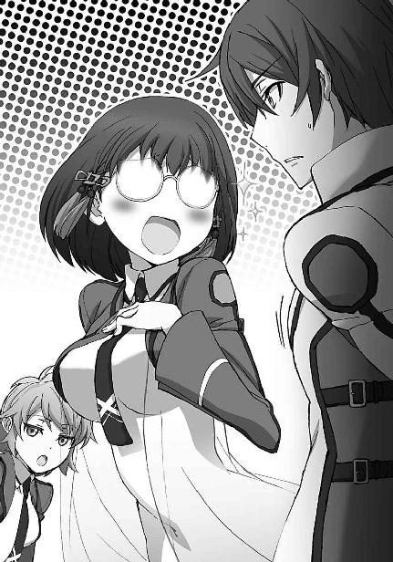
クラスメイトから向けられた奇異の目、と言うより白い眼差しに、ようやく気がついた美月は、顔を赤くして俯いた。
美月のそんな姿を眺めながら、達也は皮肉な気分が面に現れないよう、慎重に表情を作っていた。
生き甲斐？
そんな、上等なものではなかった。
魔法と関わらない生き方など、彼には選びようがなかった。
魔法が使えるから魔法師になるのではなく、魔法が使えないのに魔法師にされた。
彼にとって魔法とは、誕生の瞬間にかけられた呪いだった。
それを何とか、自分にとって許容できるものへ変えようと、足搔いているだけに過ぎない。
しかし──魔法が使えるから魔法師になる、それが普通であるなら、魔法師の卵が魔法を否定することも決しておかしくは無い。
自分は少し、思い違いをしていたのかもしれない。
──そう、思った。
◇ ◇ ◇
そして昼休み。
達也は結局、居残りをしていた。
──エリカとレオに懇願されて。
「一〇六〇ｍｓ......ほら、頑張れ。もう一息だ」
「と、遠い......〇・一秒がこんなに遠いなんて知らなかったぜ......」
「バカね、時間は『遠い』とは言わないの。それを言うなら『長い』でしょ」
「エリカちゃん......一〇五二ｍｓよ」
「あああぁ！
言わないで！
せっかくバカで気分転換してたのに！」
「ご、ごめんなさい......」
「ううん、いいのよ美月。
どんなに厳しくても、現実は直視しなくちゃいけないものね......」
「......テメエの三文芝居なんざどうでもいいが、いい加減、人を玩具にするのは止めやがれ」
エリカとレオは、授業時間中に仲良く一秒をクリアできなかった。
それで、達也にコーチを頼んだのである。
「レオはさ、照準の設定に時間が掛かりすぎてるんだよ。
こういうのは、ピンポイントに座標を絞る必要は無いんだ」
「分かっちゃいるんだけどよ......」
弱音を隠す余裕も無くなったレオに、達也は同情を込めて頷いた。
「まあ、そうだろうけどな......。
仕方が無い。裏技になるが、先に照準を設定してから、起動式を読み込んでみたらどうだ」
「えっ？ そんなことができるのか？」
「だから、裏技だ。応用の利かない、所詮はその場しのぎだから、あまり教えたくは無いんだが......」
「そんなっ？ 頼む、達也！ この際、裏技でもカンニングでもいいから教えてくれ！」
頭上で両手を合わせて拝み込むレオに、達也は深々とため息をついた。
「人聞きの悪いことを言うな。別に、不正をするわけじゃない。
......ったく、俺も実技は苦手だって言ってるのに。教わるんなら、もっと上手いヤツに声を掛けた方が良かったんじゃないか？」
「苦手って言っても、俺より上手いじゃないか。
それにコンパイルの仕組みまで分かって、何処が悪いのかまで指摘できるようなヤツはお前だけだ」
「おだてなくても教えてやるって......。
それから、エリカの方だが」
「なになに？ 裏技でもカンニングでも不正でもいいからお願いします！
いい加減、お腹空いたよぉ」
「だから、二人揃って人聞きの悪いことを言うな。
あ～、エリカの方はだな......何処が悪いのか分からない」
「ええぇっ？」
「正確に言うと、何故できないのか分からない。
俺より余程、スムーズにコンパイルできているのにな」
「そんなぁ！ 達也くん、見捨てないでよ！」
涙目になって──多少、芝居がかっていたが──祈るように指を組み合わせて上目遣いの眼差しですがりついてくるエリカに、ため息をもう一つ。
この二人、行動パターンがそっくりだ、と達也は思ったが、口にしたのは別の言葉だった。
「そこでだ。エリカ、起動式を読み込むとき、パネルの上で右手と左手を重ねてみてくれ」
「えっ？」
その言葉を聞いて、エリカだけでなく美月もポカンとした表情を浮かべた。
「......それだけでいいの？」
「俺も、確信があるわけじゃない。だから理由は、上手く行ったら説明するよ」
「う、うん......やってみる」
疑問はとりあえず棚上げにして、据付型のＣＡＤに向かうエリカ。
それを見て、達也はレオに裏技のレクチャーを始めた。
余剰想子光が閃き、丸い小さな的の上方で時間とは別の数字が表示される。加重系基礎単一魔法により的に加わった最大圧力を、的が取り付けられている重量計が表示しているのだ。肝心の発動に要した時間は、重量計が基準値以上の圧力を計測したところで記録される仕組みになっている。
「一〇一〇ｍｓ。
エリカちゃん、一気に四〇も縮めたわよ！
本当に、もう一息！」
「よ、よーし！
なんだか、やれる気になってきた！」
「一〇一六。
迷うな、レオ。的の位置は分かっているんだ。いちいち目で確認する必要は無い」
「わ、分かったぜ。
よし、次こそは！」
達也と美月が計測器をリセットしている傍らで、目を閉じる、腕を振り回す、それぞれの方法で精神を集中し、気合を高めるエリカとレオの二人。
その時、達也の背中に、遠慮がちな声が掛けられた。
「お兄様、お邪魔してもよろしいですか......？」
声の主が自分の妹だと、達也には振り向いて見るまでもなく分かった。
一人分ではなかった足音に振り返ったのはエリカだった。
「深雪、......と、光井さんに北山さんだっけ？」
「エリカ、気を逸らすな。
すまん、深雪。次で終わりだから、少し待ってくれ」
「いっ？」
「分かりました。申し訳ございませんでした、お兄様」
振り向いて謝罪する達也に、深雪は微笑んで軽い一礼を返した。
さり気なく掛けられたプレッシャーに、レオの顔が引き攣った。
深雪が後続の二人に合図してドアの陰に身を隠す。
それを見て、達也は小さく頷いた。
「よし、二人とも、これで決めるぞ」
声を張り上げたわけではない、が、有無を言わせぬ口調。
「応！」
「うん！ これで、決める！」
二人は気合を漲らせて、ＣＡＤのパネルへ向かった。
「ようやく終わった～」
エリカの歓声が、課題終了を告げる鐘の音となった。
「ふう......ダンケ、達也」
レオの謝辞に片手で応え、達也が深雪に声を掛ける。
笑顔を浮かべて歩み来る深雪。
遠慮がちながら、二人のクラスメイト──光井ほのかと北山雫も、その後に笑顔で続いた。
「二人とも、お疲れ様。
お兄様、ご注文のとおり揃えて参りましたが......足りないのではないでしょうか？」
エリカとレオを労ってから、そう問い掛けてきた深雪に、達也は首を横に振った。
「いや、もうあまり時間も無いことだし、このくらいが適量だろう。深雪、ご苦労様。光井さんと北山さんもありがとう。手伝わせて悪かったね」
既に顔を合わせれば言葉を交わす程度の間柄にはなっていたが、あくまでも深雪を間に挟んだ知り合いであって、達也にとってはまだ友達未満の二人だ。彼の口調が少し恐縮気味だったのも、無理のないことだった。
「いえ、この程度のこと、何でもないです！」
「大丈夫。私はこれでも力持ち」
予想外に力の入っている答えを返したほのかと、本気なのか冗談なのか判断に迷う答えを返した雫。達也は二人にもう一度礼を言って、深雪を含めた三人からビニール袋を受け取った。
「ほら」
そして、エリカとレオに向かって、そのまま差し出す。
「なぁに？」
「サンドイッチ......か？」
袋の中身は購買で売っているサンドイッチと飲み物だった。
「食堂で食べてると午後の授業に間に合わなくなるかもしれないからな」
そう言いながら、達也は深雪から弁当箱を受け取っていた。
「ありがと～。もうお腹がペコペコだったのよ！」
「達也、お前って最高だぜ！」
現金な友人たちに苦笑を浮かべながら、達也は近くの椅子に腰を下ろし、美月にも遠慮しないよう声を掛けた。
「......でも、いいんでしょうか？ 実習室での飲食は禁止なのでは？」
「飲食が禁止されているのは情報端末を置いてあるエリアだけだよ。
校則では、教室内の飲食も特に禁止されていない」
「えっ、そうなんですか？」
「そうなんだよ。校則集をよく読んでみれば分かることなんだけどね。俺も禁止されているものだとばかり思い込んでいたから、少し意外だった」
箸を取りながら悠然と答える達也に、「それなら」と美月も手を伸ばす。
「へぇ......そうと分かれば遠慮なく」
レオがサンドイッチの包装を解いてガブリと嚙み付くと、
「アンタは最初から遠慮なんてしてないでしょ」
エリカがそれにツッコミを入れながら、意外に上品な仕草でサンドイッチをついばんだ。
和気藹々と、テーブル......は無いから適当に椅子を寄せて、遅い昼食を摂り始める達也たち居残り組一同。
深雪たち差入組も、飲み物だけ持って、その輪に加わった。
「深雪さんたちは、もう済まされたんですか？」
「ええ。お兄様に、先に食べているように言われたから」
気を遣ったのであろう美月の問い掛けに深雪がそう答えを返すと、
「へぇ、チョッと意外。深雪なら『お兄様より先に箸をつけることなどできません』とか言うと思ったのに」
ニコニコ、と言うより、ニヤニヤと笑いながらエリカが茶々を入れた。
本気でないのは、顔を見れば分かった。聞いていた方も、本気にはしなかった。
──唯一人を除いて。
「あら、よく分かるわね、エリカ。
いつもならもちろん、そのとおりなのだけど、今日はお兄様のご命令だったから。
わたしの勝手な遠慮で、お兄様のお言葉に背くことはできないわ」
「......いつもなら、そうなんだ......」
「ええ」
「......もちろん、なのね......？」
「ええ、そうよ？」
笑顔が引き攣り気味になっているエリカに、深雪は真顔で小首を傾げる。
妙な重量感を増していく空気を振り払うように、美月が不自然にトーンの高い声を発した。
「深雪さんたちのクラスでも実習が始まっているんですよね？ どんなことをやっているんですか？」
ほのかと雫が顔を見合わせる。
遠慮と気まずさが入り混じった表情だ。
そんなクラスメイトの態度と裏腹に、深雪はもったいもつけず、ストローから唇を離して即答した。
「多分、美月たちと変わらないと思うわ。ノロマな機械をあてがわれて、テスト以外では役に立ちそうもないつまらない練習をさせられているところ」
達也を除いた五人が、ギョッとした表情を浮かべた。
淑女を絵に描いたような外見にそぐわない、遠慮の無い毒舌に。
「ご機嫌斜めだな」
「不機嫌にもなります。あれなら一人で練習している方が為になりますもの」
笑いながら、からかい気味に掛けられた兄の言葉に、拗ねた顔と声で、それでも少し甘えていることが第三者にも分かる態度で、深雪は答えた。
「ふ～ん......手取り足取りも良し悪しみたいね」
「恵まれているのは認めるわ。気を悪くしたのだったら、ごめんなさい」
「やっ、少しも気を悪くなんてしてないから」
真面目な顔で頭を下げる深雪に、エリカは軽く、手を振った。
「見込みのありそうな生徒に手を割くのは当然だもの。ウチの道場でも、見込みのないヤツは放っとくから」
「エリカちゃんのお家って、道場をしているの？」
「副業だけど、古流剣術を少しね」
「あっ、それで......」
納得顔で頷く美月。
エリカが伸縮警棒で、森崎のＣＡＤを叩き落した時のことを思い出したのだろう。
「千葉さんは......当然と思っているの？」
そこへ、おずおずと口を挿んだのは、ほのかだった。
「エリカで良いよ。いや、むしろそう呼びなさい」
「なんでオメエは、そういつも偉そうなんだよ......」
呆れ声のツッコミは、ほのかにとってちょうど良い「間」になったようだった。
「じゃあエリカ、私のことも、ほのかで」
「オーケーおーけー。
それで、当然と思うかって、一科生には指導教官がついて、二科生にはつかないことかな？」
「......そう、そのこと」
躊躇いがちに頷くほのかと、
「だったら、当然だよね」
躊躇なく頷くエリカ。
「当たり前のことなんだから、深雪やほのかが引け目を覚える必要は無いんだよ？」
「......やけにあっさりしてるな」
あっけらかんと言い切ったエリカに、レオがそう訊ねた。
「あれ？ もしかしてレオ君は、不満に思っているのかな？」
「いや、俺だって仕方が無いことだと思っているけどよ......」
らしくもなく歯切れの悪いレオに対して、
「そっか～。
でもあたしは、『仕方が無い』じゃなくて『当然』だって思ってるんだけどな」
エリカは清々しいくらい歯切れ良く言い切った。
「......理由を訊いても良い？」
ほのかの質問に、エリカはちょこんと首を傾げた。
少し考えをまとめているらしき沈黙の後に、こめかみを人差し指で搔きながら口を開いた。
「ウ～ン......今まで当たり前のことだと思ってたから、説明が難しいなぁ......。
例えばね、ウチの道場では、入門して最低でも半年は、技を教えないの」
「ほぉ」
興味深げに頷いたのは達也。
ほのかや雫や美月は、頭上にハテナマークを浮かべている。
「最初に足運びと素振りを教えるだけ。それも一回やって見せるだけで、後はひたすら素振りの繰り返しを見ているだけ。
そして、まともに刀を振れるようになった人から技を教えていくの」
「......それじゃあ、いつまで経っても上達しないお弟子さんも出てくるんじゃない......？」
「いるね～、そういうの」
ほのかの疑問に、エリカはウンウンと頷いた。
「そして、そういうヤツに限って、自分の努力不足を棚に上げたがるんだな。
まず、刀を振るって動作に身体が慣れないと、どんな技を教わっても身につくはずが無いんだけどね」
「あっ......」
美月が小さな声を上げた。
それをチラッと見ただけで、エリカは言葉を続けた。
「そしてその為には、自分が刀を振るしかないんだよ。
やり方は、見て覚える。
周りにいっぱい、お手本が居るんだから。
教えてくれるのを待っているようじゃ、論外。
最初から教えてもらおうって考え方も、甘え過ぎ。
師範も師範代も、現役の修行者なんだよ？
あの人たちにも、自分自身の修行があるの。
教えられたことを吸収できないヤツが、教えてくれなんて寝言こくなっての」
思いがけずエキサイトして罵詈雑言を繰り出しているエリカを、達也は興味深そうに眺めている。
「......お説はごもっともだと思うけどよ、俺もオメエも、ついさっきまで達也に教わってたんだぜ......？」
「あ痛っ！
それを言われると辛いなぁ」
レオの指摘に顔を顰めつつも、あっけらかんとした調子は変わらない。
「それはそれ、背に腹は代えられない、ってことも確かにあるけどさ......教わるには、教わる相手に相応しいレベルがないと、お互いに不幸だって思うのよ。
まっ、一番の不幸は、教える側が教えられる側のレベルについていけないことなんだけどね」
ここでパチリと、意味ありげなウインク。
達也はニヤリと、人の悪い笑みを返した。
「残念ながら、今日は不幸な結果に終わったな。
最終的な記録は、俺よりエリカの方が一〇〇ｍｓ以上、速かった」
エリカのこめかみから、一筋の冷や汗が流れた。
「あ、いや、あたしは、そういうことを言っているのでは......。
そ、そういえば、さっきの種明かしを聞いてない！
ねえ、何で手を重ねて置いただけで、あんなにタイムが上がったの？」
強引な話題転換。
話を逸らそうとしているのは誰の目にも明らかだが、突っ込みすぎると後々しこりを残しそうな話題なので、達也は大人しく逸らされることにした。
「なに、単純なことだ。エリカは片手で握るスタイルのＣＡＤに慣れている」
達也の「種明かし」は始まったばかりだったが、説明を求めた当のエリカが「えっ？」と声を上げて話の腰を折った。
エリカの顔には「なんでそんなこと知っているの？」と書かれていた。しかし達也にしてみれば、一度見れば当然に分かることだった。森崎と相対した時に見せたアクションと、ＣＡＤそのものの形状から、ＣＡＤの使用スタイルは簡単に推測できる。エリカのいささか大袈裟な反応をスルーして、達也は「種明かし」を続けた。
「だから、両手をパネルに置くスタイルの授業用ＣＡＤには、スムーズにアクセスできないんじゃないかと思っただけだよ」
「それで、両手を重ねさせて、接点を片手にしたんですね......」
美月が頷きながら感嘆を漏らした。もっとも、同じような表情を浮かべているのは、彼女だけではなかった。
「片手を置くスタイルでも良かったんだが、手を重ねるスタイルの方が気合が入るんじゃないかと思ってね。要するに、気分の問題だ」
「......なるほど、あたしはまんまと達也くんに乗せられたのね」
空ろな笑いを漏らすエリカ。
その脱力具合が漫画チックで、皆がつられ笑いをこぼした。
「なーんか、気が抜けちゃったな......。
そうだ。Ａ組の授業でも、これと同じＣＡＤを使ってるんでしょ？」
「ええ」
頷きながら嫌悪感を隠そうとしない深雪に、エリカは好奇心をかき立てられた。
「ねえ、参考までに、どのくらいのタイムかやってみてくれない？」
「えっ、わたしが？」
自分を指差し、目を丸くする深雪に、エリカはわざとらしく、大きく、頷いた。
達也に目で問い掛ける深雪。
「いいんじゃないか」
苦笑いを浮かべながら頷く兄を見て、
「お兄様がそう仰るのでしたら......」
深雪は躊躇いがちながら、承諾の応えを返した。
機械の一番近くに居た美月が、計測器をセットする。
深雪はピアノを弾くときの様に、パネルに指を置いた。
計測、開始。
余剰想子光が閃き、
美月の顔が強張る。
いつまで経っても結果を告げない友人に焦れたのか、エリカが結果発表を催促した。
「......二三五ｍｓ......」
「えっ......？」
「すげ......」
そしてたちまち、表情筋の硬直が伝染する。
「何回聞いてもすごい数値よね......」
「深雪の処理能力は、人間の反応速度の限界に迫っている」
ため息を漏らしたのはＡ組の生徒も同じ。
ただ、その兄だけが驚いていない。
そして本人は、不満そうに眉を顰めている。
「旧式の教育用ではこんなものだろう。仕方がないよ、深雪」
「こんな雑音だらけで洗練の欠片もない起動式を受け入れなければならないなんて......本当に、嫌になってしまいます。
やはり、お兄様に調整していただいたＣＡＤでないと、深雪は実力を出せません」
「そう言うな。もう少しまともなソフトに入れ換えてもらえるように、その内、会長か委員長から学校側に掛け合ってもらうから」
拗ねるように、甘えるように身を寄せる深雪の頭を、幼い子供にするように、達也は優しく撫でている。
その光景を見ても、いつものように、当てられることはなかった。
目の前で見せられた実力と、兄妹の間で交わされた会話。
この格差を前にすれば、嫉妬という感情自体が、バカバカしいものだった。
◇ ◇ ◇
放課後のカフェを行き交う生徒たちを、達也はぼんやり眺めていた。
ぎこちない雰囲気が漂っているのは、新入生の利用が多い為か。
摩利に聞いた話では、入学直後が最も学内カフェの利用率が高いらしい。
慣れてくると、部室や中庭や空き教室などのたまり場を見つけて、足が遠のくのだそうだ。
まあ、営利でやっている店ではないから、客が減っても問題は無いのだろう。
テーブルの上のコーヒーは、既に冷めてしまっている。
先日とは逆の立場、逆のパターン。
相手に誘われたという点だけが、あの時と同じだった。
達也は「宿題」の答えを聞くために、紗耶香を待っているところだった。
まとわりついてくる監視の視線が鬱陶しかったが、達也の方から特にアクションは起こさなかった。誰が監視しているのか、どんなに巧妙に隠れていようとその気になれば見つけ出す自信はあったが、オープンスペースのカフェで犯人を突き止めてもシラを切られるのが目に見えている。無駄に手の内を明かすような真似はせず、気づかないフリで大人しく待っているのが賢明だった。
約束から、十五分。
彼女はようやく現れた。
「ごめん！ 待ったでしょう？」
「大丈夫です。連絡をもらってましたから」
無理をしているわけではない。
達也の端末には、確かに、十分前後遅れる旨の伝言が入っていた。
もっとも、着信があったのは待ち合わせ五分前で、既に予定を組み替えられるタイミングではなかったが、十分や二十分、待った内に入らない、という程度には、達也は気が長かった。
「そう、よかった......。
怒って帰ってたらどうしようかと思っちゃった」
大袈裟に胸を撫で下ろす紗耶香。
どうやら今日も「可愛らしい女の子」モードらしい。
彼女の演技指導役は、自分のことを一体どういう趣味だと思っているのだろう、と達也は首を傾げた。
「どうしたの？」
不思議そうな声。
どうやら、動作に表れてしまったようだ。
「大したことじゃありません。先輩が時々『可愛らしい女の子』になるので、剣を握っている時とのギャップを感じたんですよ」
「やだ......もう、からかわないでよ」
慌て気味に、目を逸らされた。
これは、彼女の素の反応か、それとも作られた仕草か。
彼には判別がつかない。
残念ながら、探りは不発に終わったようだった。
「すみません」
笑いを含みながら、謝罪。
これは、彼の演技だ。
自信は、あまり、無いのだが。
「もう......司波君って、本性はナンパ師なの？」
「魔法師ではありませんね、今のところは、まだ」
冷め切ったコーヒーに口をつけ、達也はおもむろに後ろを向いた。紗耶香から目を逸らしたのではなく、観葉植物の陰に見え隠れしている人影へ目を向けたのだ。
「渡辺先輩......」
紗耶香も達也に一呼吸遅れで、その人影に気づいた。しかし彼女が呟いた声は小さすぎて、名前を呼ばれた本人の耳に届くものではなかった。
「やあ、達也くん」
声を掛けてきたのは摩利の方だった。しかしそれは明らかに、達也に見咎められたからであって、彼があからさまに目を向けなければ多分、知らん顔で通り過ぎていっただろう。──そうでなければ気配を消していたりはしない。
「サボりじゃありませんよ」
達也の返しに、摩利は苦笑で応えた。達也のセリフは「今日は非番ですよ」という意味なのだが、冗談なのか捻くれているのか、判断が難しいところだ。
「別に、委員長として注意しに来たわけじゃないさ。通りがかったのは単なる偶然だ」
ただ達也がそう言ったことで、摩利の登場が不自然に感じられなくなったのは確かだった。すかさずそれに乗ることのできる摩利も、中々大したものだと言うべきだろう。
「邪魔をする形になってしまって悪かったな。壬生も、すまなかった」
「いえ、そんなことは......」
摩利に答える紗耶香の声も表情も微妙に硬くなっているのは、上級生に声を掛けられた緊張からだろうか。それとも、風紀委員会に対する反感からだろうか。
何となく、どちらも違うように達也には見えた。
去って行く摩利の背中に注がれる強い眼差しが、その印象を更に強くした。
「一昨日の話なんだけど......」
摩利の姿がカフェから消えたところで、紗耶香の方から本題を切り出した。
達也の方はといえば「頼んだと言った手前だろうが......」とか「わざわざ様子を見に来るとは......」とか「監視しているのは別口か」とか考えていた為に出遅れたのである。
「最初は、学校側にあたしたちの考えを伝えるだけで、良いと思ってた」
腕がピクッと震えたのは、テーブルの下で拳を握り締めでもしたからだろうか。
「でも、やっぱり、それだけじゃダメだって分かった。
あたしたちは、学校側に待遇改善を要求したいと思う」
随分踏み込んだな、というのが達也の印象だった。
本気なのか、それとも彼を引き込むハッタリなのか。
ハッタリだとすれば、逆効果だが。
「改善というと、具体的に何を改めて欲しいんですか？」
「それは......あたしたちの待遇全般よ」
「全般と言うと、例えば授業ですか？」
「......それもあるわ」
「一科と二科の主な違いは指導教員の有無ですが、そうすると先輩は、学校に対して、教師の増員を求めているのですか？」
そんなことは不可能だ。
元々、有効レベルで魔法を行使できる成人が不足しているからこその国策学校。
二科制度も、魔法師、魔工技師の供給を確保する為の、ある意味無理を承知の施策だ。
「そこまで言うつもりは無いけど......」
案の定、返って来たのは歯切れの悪い否定。
「では、クラブ活動ですか？
剣道部には、剣術部と同じペースで体育館が割当てられているはずですが」
昨日調べてみた限りでは、意外なことに、剣道部と剣術部の利用日は、平等に割当てられている。
「それとも、予算の問題ですか？
確かに魔法競技系クラブにはそうでないクラブに比べて予算が多く割当てられていますが、活動実績に応じた予算配分は普通科高校でも珍しくないと思いますが」
「それは......そうかもしれないけど......。
じゃあ、司波君は不満じゃないの？
魔法実技以外は、魔法理論も、一般科目も、体力測定も、実戦の腕も、全ての面で一科生を上回っているのに、ただ実技の成績が悪いというだけでウィードなんて見下されて、少しも口惜しくないの？」
必死に言い募る紗耶香の姿に、達也は軽い苛立ちを感じた。
彼の不満も無念も、彼女自身の想いとは関係のないことだ。
変えたいと思っているのが彼女自身なら、何故自分の想いを語らないのか。
「不満ですよ、もちろん」
だから彼は、
「じゃあ！」
「ですが、俺には別に、学校側に変えてもらいたい点はありません」
自分自身の想いを、語る。
「えっ？」
「俺はそこまで、教育機関としての学校に期待していません」
僅かに一欠片ではあるが、紛れもない本心を。
「魔法大学系列でのみ閲覧できる非公開文献の閲覧資格と、魔法科高校卒業資格さえ手に入れば、それ以上のものは必要ありません」
自分自身までも突き放したような達也のセリフに、紗耶香の表情が固まった。
「ましてや、学校側の禁止する隠語を使って中傷する同級生の幼児性まで、学校の所為にするつもりはありません」
その言葉は一見、「雑草」と二科生を見下す一科生の間違ったエリート意識を批判しているようで、その実、自らの満たされぬ想いを誰かの所為にしようとしている自分たちの弱さを責めているようにも、紗耶香には感じられた。
「残念ながら先輩とは、主義主張を共有できないようです」
そう言って、達也は席を立った。
「待って......待って！」
振り返ると、椅子に座ったまま──もしかしたら、立ち上がることができず──蒼い顔で、すがりつく様な眼差しで、紗耶香が彼を見上げていた。
決して、睨みつける、ではなく、真摯な、必死な視線だった。
「何故......そこまで割り切れるの？
司波君は一体、何を支えにしているの？」
「俺は、重力制御型熱核融合炉を実現したいと思っています。
魔法学を学んでいるのは、その為の手段に過ぎません」
紗耶香の顔から表情が抜け落ちた。
多分、言われたことが理解できなかったのだろう。
重力制御型熱核融合炉の実現は、汎用的飛行魔法の実現、慣性無限大化による擬似永久機関の実現と並んで、『加重系魔法の技術的三大難問』と呼ばれているものの一つだ。二科生が将来の目標に掲げるには、大きすぎるテーマだった。
達也も別に、理解してもらいたいと思って告げた言葉でもない。
達也はそれ以上紗耶香に構わず、再び、背を向けた。
◇ ◇ ◇
何事も無く、一週間が過ぎた。
風紀委員会の見回り中も、勧誘週間のように闇討ち紛いの襲撃を受けることも無く、美月が予言（？）したように概ね平和だった。
達也はようやく、平穏な高校生活を手に入れた──ように、見えた。
所詮、束の間の平穏に過ぎなかったが。
授業が終わった直後、放課後の冒頭。
これからクラブ活動の生徒はロッカーへ着替えや荷物の入ったバッグを取りに、タブレットや紙のノートを持ち込んでいる生徒は机の横に懸かる鞄を手に、そのどちらでもない生徒はそのまま身軽に、各々がそれぞれの帰り支度を始めようとしたまさにその時、
『全校生徒の皆さん！』
ハウリング寸前の大音声が、スピーカーから飛び出した。
「何だ何だ一体こりゃあ！」
「チョッと落ち着きなさいただでさえアンタは暑苦しいんだから」
「......落ち着いた方が良いのは、エリカちゃんも同じだと思う」
少なくない生徒が慌てふためく中、
『──失礼しました。全校生徒の皆さん！』
スピーカーからもう一度、今度は少し決まり悪げに、同じセリフが流れ出た。
「どうやらボリュームの絞りをミスったようだな」
「やっ、ツッコンでる場合じゃないから、きっと」
ボソッと呟いた達也の言葉を、耳敏く拾い上げたエリカから、すかさずツッコミが入る。
エリカちゃんもね、とは、心の中で呟いただけで、口にしない美月だった。
『僕たちは、学内の差別撤廃を目指す有志同盟です』
「有志ね......」
スピーカーから威勢良く飛び出した男子生徒の声を聞いて、達也はシニカルに呟いた。先週カフェで聞いた話からして、この放送ジャックは紗耶香の言っていた「待遇改善要求」の為のものだろう。しかし、政治的な集団を形成するメンバーが自発的に「有志」となった事例が、有史以来、一体どの程度有っただろうかと、つい考えてしまったのである。
『僕たちは生徒会と部活連に対し、対等な立場における交渉を要求します』
「ねぇ、行かなくていいの？」
彼の非好意的な呟きが聞こえたわけでもないだろうが、座ったままスピーカーに目を向けている達也に、エリカが何事か期待しているような声で訊ねた。
「そうだな」
その態度を不謹慎だ、とは、達也は言わなかった。エリカの言っていることはもっともだ。
「放送室を不正利用していることは間違いない。
委員会からお呼びが掛かるか」
達也がそう言うのと、同時だった。備え付けの情報端末ではなく、内ポケットの携帯端末にメールの着信があった。
「おっと、噂をすれば。じゃあ、行ってくる」
「あ、はい、お気をつけて」
席を立つ達也の背中に掛かけられた美月の声は、不安に揺れていた。ふと気になって、達也は教室の様子を見回してみた。座ったままのクラスメイトも立ち上がっているクラスメイトもいたが、教室から出て行こうとしている生徒はほとんどいなかった。エリカのように面白がっているクラスメイトやレオのように好奇心をあらわにしている生徒は少ない。大半のクラスメイトが、不安げな顔で、このまま帰っていいのかどうか決めかねていた。
◇ ◇ ◇
「あ、お兄様」
「深雪、お前も呼び出しか？」
「はい、会長から、放送室前へ行くようにと」
途中で深雪と合流し、放送室へと向かう。
しかし、その足取りは、それほど速いものではなかった。
「これは、ブランシュの仕業でしょうか？」
「団体は特定できないが、その手の輩の仕業には違いないだろうね」
そんな話をしながら、二人並んで放送室の前に到着する。
放送室前には、既に摩利と克人と鈴音、そして風紀委員会と部活連の実行部隊が顔を揃えていた。
「遅いぞ」
「すみません」
ポーズだけの叱責に、ポーズだけの謝罪を返して、達也は現状確認に移った。
放送が止まっているのは、電源をカットしたからだろうか。
まだ中に踏み込んでいないのは、扉が閉鎖されている所為だろう。
立てこもり犯人は何らかの手段で、鍵をマスターキーごと手に入れたと見える。
「明らかな犯罪行為じゃないか」
目的が手段を正当化すると考えている辺り、この連中は典型的な「活動家」らしい。
「そのとおりです。
だから私たちも、これ以上彼らを暴発させないように、慎重に対応すべきでしょう」
達也のセリフは全くの独り言だったが、鈴音はそう取らなかったようだ。
「こちらが慎重になったからといって、それで向こうの聞き分けが良くなるかどうかは期待薄だな。
多少強引でも、短時間の解決を図るべきだ」
すかさず、摩利が口を挿んできた。
どうやら方針の対立が膠着を招いているようだ。
有事の対応としては、最も拙劣な状態だった。
「十文字会頭はどうお考えなんですか？」
達也の質問に、意外感をたたえた視線が返って来た。
達也自身も、出すぎているかな？ と感じながらの質問だったが、膠着状態を放置するよりは良い、と考えたのだ。
彼もまだ、大人ではないということなのだろう。
また、大人の対応を求められる場面でもない。
「俺は彼らの要求する交渉に応じても良いと考えている。
元より言いがかりに過ぎないのだ。しっかりと反論しておくことが、後顧の憂いを断つことになろう」
「ではこの場は、このまま待機しておくべき、と？」
「それについては決断しかねている。
不法行為を放置すべきではないが、学校施設を破壊してまで性急な解決を要するほどの犯罪性があるとは思われない。
学校側に警備管制システムから鍵を開けられないかどうか問合せてみたが、回答を拒否された」
強引な事態収拾は図らない、ということだ。
克人のスタンスは、結果的に鈴音に近いもの。
ならば、このまま待つこともやむを得ない。
一礼して引き下がった達也へ、摩利の不満げな視線が突き刺さった。
その棘に追い立てられたわけでもないが、彼は内ポケットから携帯端末を取り出して、音声通話モードを立ち上げた。
待機はやむを得ないが、何もせずに待つだけなら出しゃばって質問などしない。
コールは五回でつながった。
「壬生先輩ですか？ 司波です」
ギョッとした視線が数本、追加された。
「......それで、今どちらに？」
達也をマジマジと見詰める視線の本数が、更に増えた。
「はぁ、放送室に居るんですか。それは......お気の毒です」
直後、顔を顰めたのは、ボリュームコントローラーの制御が間に合わない大声で返された所為か。
ほぼ完全な遮音性を実現したカナル型の受話器では、推測するしかないが。
「いえ、馬鹿にしているわけではありません。
先輩も、もう少し冷静に状況を......ええ、すみません。
それで、本題に入りたいんですが」
摩利と鈴音、その他数人が、聞き耳を立てている。
向こうの音声は拾えるはずが無いと分かっているだろうから、これから達也が、何を言おうとしているのかを、聞き逃さない為に。
「十文字会頭は、交渉に応じると仰っています。
生徒会長の意向は未確認ですが......いえ、生徒会長も同様です」
鈴音のジェスチャーで、達也はすぐに言い直した。
「ということで、交渉の場所やら日程やら形態やらについて打合せをしたいんですが。......ええ、今すぐです。学校側の横槍が入らないうちに。......いえ、先輩の自由は保障します。我々は警察ではないんで、牢屋に閉じ込めるような権限はありませんよ......では」
通話ユニットを耳から外し、端末本体と一緒にしまい込んで、達也は摩利へ向き直った。
「すぐに出てくるそうです」
「今のは、壬生紗耶香か？」
「ええ。待ち合わせの為にとプライベートナンバーを教えられていたのが、思わぬところで役に立ちましたね」
達也の背後で、深雪が軽く俯いた。不自然に思われるほど大きな動作ではなかったが、達也ならば妹のその仕草が長い髪でムッとした表情を隠す為のものだとすぐに解っただろう。
「手が早いな、君も......」
「誤解です」
摩利の言いがかりに意識を割いていた達也がそれに気づかなかったのは、彼にとって幸運だったのか、不運だったのか。少なくとも深雪は、この場で達也の背中を抓り挙げるなどという暴挙に出ない程度の分別はある少女だった。
「それより、態勢を整えるべきだと思いますが」
達也は後ろを（つまり深雪を）振り返ることなく、摩利と鈴音と克人に次の行動を促した。
「態勢？」
何を言っているんだ？ という顔で、摩利が達也を見た。
何を言っているんですか？ という呆れ顔で、達也が摩利を見返した。
「中のヤツらを拘束する態勢ですよ。
鍵まで盗み出す連中です。ＣＡＤは持ち込んでいるでしょうし、それ以外にも武器を所持しているかもしれません」
「......君はさっき、自由を保障するという趣旨のことを言っていた気がするのだが」
「俺が自由を保障したのは壬生先輩一人だけです。
それに俺は、風紀委員会を代表して交渉しているなどとは一言も述べていませんよ」
摩利だけでなく、鈴音も、克人までもが、呆気に取られた表情を浮かべた。
この場にいるただ一人の例外は、達也を軽く、非難した。
「悪い人ですね、お兄様は」
「今更だな、深雪」
「フフ、そうですね」
ただしそれは、楽しげな口調を伴っていた。
「でも、お兄様？ 壬生先輩のプライベートナンバーをわざわざ端末に保存されていらした件については、今更ではありませんから、後ほど詳しくお話をうかがわせてくださいね？」
そして深雪は、満面の笑みで、更に楽しげな口調で、こう付け加えた。
◇ ◇ ◇
「どういうことなの、これ！」
案の定と言うべきか当然と言うべきか、達也は紗耶香に詰め寄られていた。
放送室を占拠していたのは、彼女を含めて五人。
予想どおり、ＣＡＤを所持していたが、それ以外の銃器、刃物は持っていなかった。
達也から見れば、覚悟がまるでなっていないが、悪いことをしているという意識が無いのだから、中途半端になってしまうのも当たり前かもしれない。
紗耶香以外の四人は風紀委員によって拘束されていたが、紗耶香はＣＡＤを没収されただけにとどまった。
摩利が達也の名誉に配慮した結果だった。
達也自身は、口約束を守る必要など無いと考えていたのだが。
紗耶香の手は、達也の胸元に伸びており、その手首を達也の手に摑まれている。
胸倉を摑もうとした手をあっさりと捉まえ、達也は無表情に激高する紗耶香を見返していた。
「あたしたちを騙したのね！」
手を振り解こうともがく紗耶香を、達也はあっさり解放した。
そしてなおも言い詰ろうとした紗耶香の背中に、声が掛けられた。
「司波はお前を騙してなどいない」
重く、力強い響きに、紗耶香の身体がビクッと震えた。
「十文字会頭......」
「お前たちの言い分は聞こう。交渉にも応じる。
だが、お前たちの要求を聴き入れる事と、お前たちの執った手段を認める事は、別の問題だ」
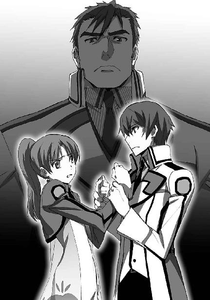
紗耶香の態度から攻撃性が消えた。
全課外活動を束ねる克人の迫力に、紗耶香の怒りは吞まれていた。
「それはそのとおりなんだけど、彼らを放してあげてもらえないかしら」
しかしその時、この言葉と共に、達也と紗耶香の間に小柄な人影が割り込んで来た。
達也に背を向けて、彼をかばう様な体勢で。
「七草？」
克人が訝しげな声を発し、
「だが、真由美」
摩利が反論の構えを見せる。
しかし真由美は、それを未発段階で遮った。
「言いたいことは理解しているつもりよ、摩利。
でも、壬生さん一人では、交渉の段取りも打合せできないでしょう。
当校の生徒である以上、逃げられるということも無いのだし」
「あたしたちは逃げたりしません！」
真由美の言葉に、紗耶香は反射的に嚙み付いた。
しかし真由美は、直接には、紗耶香の言葉に反応しなかった。
「生活主任の先生と話し合ってきました。
鍵の盗用、放送施設の無断使用に対する措置は、生徒会に委ねるそうです」
遅れてきた事情と、彼らが現在置かれている立場についての、さり気ない説明。
それでも紗耶香たちに怯んだ様子がないのは、事の是非は別にして、評価に値する肝の据わり方だと達也は思った。
「壬生さん。これから貴方たちと生徒会の、交渉に関する打合せをしたいのだけど、ついて来てもらえるかしら」
「......ええ、構いません」
「十文字くん、お先に失礼するわね？」
「承知した」
「ごめんなさい、摩利。何だか、手柄を横取りするみたいで気が引けるのだけど」
「気持ちの上では、そういう面も無きにしも非ずだが、実質面では手柄のメリットなど無いからな。
気にするな」
「そうだったわね。
じゃあ、達也くん、深雪さん、貴方たちは、今日はもう帰ってもらっていいわ」
「......それでは会長、失礼いたします」
意表を衝かれて生じた短い間。
そこから先に回復したのは深雪の方だった。
丁寧に一礼する妹に続いて、達也も無言で一礼し、その場を後にした。
［９］
翌日、達也と深雪は、いつもより早めに家を出た。
早めに登校する為ではなく、駅に早く着く為だ。
幸い、それほど長く待つ必要は無かった。
「会長、おはようございます」
真由美は女性としても小柄な方だが、人混みに埋もれるタイプではない。一際強い存在感を放つそのシルエットを、達也はすぐに見つけることができた。
「達也くん？ 深雪さんも、どうしたの？」
当然のことだが二人に待ち伏せされていたのは真由美にとって予想外だったようで、いつもの冗談めいた態度を作る余裕もなく、捻りも何もない平凡な反応を返した。
もっとも、真由美を驚かせることが今朝の目的ではない。達也は余計な遊びを挿まず、すぐ要点に入った。
「昨日のことが気になりまして。あの後、壬生先輩たちとの話し合いはどういう結論になったのか教えていただけませんか」
達也の要求を聞いて、真由美は少し意外そうに軽く目を瞠った。
「意外ね」
表情に出しただけで無く、言葉にも出した。
「達也くん、他人のことを詮索するタイプにも見えないのに」
「他人事で済めば良いんですが、そうも行かないでしょうから」
「なるほど」
しかし、達也の回答を聞いて、納得とばかり頷いた。達也は既に、彼ら「有志同盟」の活動に少なからず関わりを持っている。他人事で済ませたいと彼が望んでも、向こうが放っておいてはくれないだろう。確かに彼には、これから何が起こるのか聞く権利があると真由美は思った。──そうでなくても、朝一番で公開する予定ではあったが。
「彼らの要求は一科生と二科生の平等な待遇。でも具体的に何をどうしたいのか、その辺りはよく考えていないみたい。むしろ、具体的なことは生徒会で考えろ、って感じだったわ。
まあ、それで押し問答みたいになってね。元々昨日は今後の交渉について話し合いましょう、という趣旨だったし、結局、明日の放課後、講堂で公開討論会を行うことになったの」
「随分急な展開ですね......」
達也の驚き方は、むしろ控え目なものだと言えるだろう。彼としては「遂にそう来たか」という印象だったので、意外感は薄かった。元々達也は、相手を正面対決へ引っ張り出すのが、一部にしこりを残すとしても結果的には事態を最も手っ取り早く終息へ導く方法だ、と考えていた。しかし彼の反応は多分かなりの少数派で、例えば深雪は、予想を超えた急展開に目を丸くして声も出ない様子だった。
「ゲリラ活動をする相手に時間的な余裕を与えないという戦略思想は理解できますが、その分こちらも対策を練る時間が取れません。生徒会ではどなたが討論会に参加されるのですか？」
達也の質問に真由美は「良くできました」と言わんばかりの笑みを浮かべながら、自分の顔を指差した。
「......まさか、会長お一人ですか？」
達也の声は半信半疑のものだった。深雪に至っては、完全に絶句していた。
「はんぞーくんにも壇上に上がってもらうけど、話をするのは私一人よ。達也くんの言うとおり、打合せをするには時間が足りないからね。一人だったら、小さな食い違いから揚げ足を取られる心配も無いし。怖いのは印象操作で感情論に持ち込まれることだから」
「ロジカルな論争なら負けることは無い、と？」
達也がそう言うと、真由美は自信ありげに頷いて見せた。
「それにね」
軽やかに続けた真由美の声は、何かを期待しているような響きを伴っていた。
「もしもあの子たちが私を言い負かすだけのしっかりした根拠を持っているのなら、これからの学校運営にそれを取り入れていけば良いだけなのよ」
むしろ真由美は、自分が論破されることを望んでいるように、達也には聞こえた。
◇ ◇ ◇
過去に例のない討論会が明日、開催されると発表された直後から、同盟（「学内の差別撤廃を目指す有志同盟」のことをそう呼ぶようになっていた）の活動が一気に活性化した。
多数派工作、と言うには洗練されていないが、始業前、休み時間、放課後、賛同者を募る同盟メンバーの姿が校内の到る処に見られるようになった。
彼らは皆、青と赤で縁取られた白いリストバンドを着けていた。もう隠す気もないのか、それともこのシンボルの意味を知らないのか......達也は後者だと思っている。もっとも、知らなければ罪は無い、という考え方に、達也は同意できない。責任は内面では無く行為に付随するものだと彼は考えている。
しかし、だからといって同盟の行動を妨害しようという気にもならなかった。「話し合い」に臨んで賛同者を多く確保するのは当然のことだからだ。自分に無関係なところで精神的に未成熟な高校生を情緒的な言葉で錯覚させて底なし沼に引きずり込む行為に干渉するつもりは無かった。（実に色々とダメな発想だが）
逆に言えば、彼の関係者に対して──彼も一高生なのだから、本来なら一高内に無関係なところなど無いはずだが──欺瞞に満ちた誘惑を許すつもりも無かった。
「美月」
討論会前日の放課後、右手に例のリストバンドを巻いた、おそらくは三年生に話し掛けられて困惑している同級生を見つけて達也は声を掛けた。美月は胸に画集らしきものを抱えていたから、部活に使う資料を何処からか調達してきたところなのだろう。今時デジタル化されていない資料を使うあたり、この学校の美術部はこだわり屋が多いようだが、今それは無関係だ。
「あっ、達也さん」
達也の姿を認めて、美月はホッとした表情を浮かべた。その顔から察するに、結構な時間、捕まっていたようだ。
達也はまず、その上級生の首から下に着目した。長身で一見瘦せ型、実は武術で鍛えた身体をしている。
その身体つきに、見覚えがあった。
新入部員勧誘週間のバカ騒ぎの中で、達也を魔法で攻撃して逃げていったあの男子生徒に間違いなかった。
「風紀委員会の司波です。あまり長時間にわたる拘束は迷惑行為と見なされる場合がありますので、お控えください」
達也は美月に事情を確かめること無く、いきなりその上級生に話し掛けた。だからといって、新入部員勧誘週間の一件を詰問するような真似もしなかった。言ったところで認めるはずなどなかったし、言いがかりだと開き直られては逆効果だ。達也は美月と上級生の間にさり気なく身体を割り込ませ、上級生と正面から対峙した。
左胸に、エンブレムは無い。
顔には、角張った小さめのメガネ。伊達メガネには見えなかった。
「分かった。ここは退散しよう。
柴田さん、僕の方は何時でも良いから、気が変わったら声を掛けてくれる？」
その上級生は至って紳士的に（ただし、頭に付くのは「英国」ではなく「イタリア」だ）手を引いた。立ち去る背中が廊下から階段へ消えたところで、達也は美月に事の経緯を訊ねた。
「剣道部の主将さんです。お名前は、司甲さんとか。
......私と同じ『霊子放射光過敏症』で、同じように過敏感覚に悩む生徒が集まって作ったサークルに参加しないかって」
美月が「目」のことを自分から打ち明けるというのは、達也の予想外だった。しかし、彼女が霊子放射光過敏症であることは既に確信していたので、驚きは強くなかった。
「それで、同じ悩みを分かち合おう、と？」
「いえ、司先輩はそのサークルに入って、症状が随分改善したそうで、私の為にもなるんじゃないかって......」
「それはまた」
胡散臭い話だな、とは口にしなかった。
口にしなくても、美月も同じように感じていることは分かっていた。
魔法的な感覚が鋭すぎることによる弊害は、その知覚能力をコントロールすることが唯一の対処法だ。そして能力を制御できるようになる為には、正しい訓練が一番の近道だ。
例え教師によるケアがなくとも、学校のプログラムは「正しい訓練」に最も近いものであって、生徒同士で作ったサークルがそれよりも効果的な訓練プログラムを提供できるというのはあまりに考えにくい。そのサークルに指導教員がついているなら話は別だが、そもそも教員の数が絶対的に不足しているからこその一科・二科制度なのである。
「授業で精一杯だから、と何度もお断りしたんですけど」
「そうだな。欲張らず、一歩一歩進んでいくのが良いんじゃないか」
達也のありきたりなアドバイスに「そうですね」と頷いて、美月は部室に向かった。
美月とは別の方向に足を進めながら、達也は考えた。美月に声を掛けているところを達也が発見したのは偶然だろう。しかし、それ以外のことは、偶然とは思えない。サークルとやらはあくまで口実、あるいは「餌」で、本当の目的は美月を仲間に引き込むことに違いなかった。同盟が活動を始める前に、達也を襲うという実力行使に出たところから見て、あの三年生は本物だ。少なくとも釣られている側では無く、釣っている側の人間だ。
（剣道部主将、司甲か）
あの三年生について、詳しく調べてみる必要がある。達也はそう、心に決めた。
◇ ◇ ◇
夕食後、いつもなら一日の汗と垢を洗い流している時間、達也は買ったばかりの電動二輪を走らせていた。
行く先は、八雲の寺だ。
自分の足で走って行かないのは、早朝でも真夜中でもない時間帯、自走車や通行人の目があるからだ。正当な理由無き魔法の使用は刑事罰を伴う犯罪行為。未成年であっても実質的な受刑を免れない。
では、自走二輪車の運転は違法行為にならないのか、というと、これはならないのである。西暦二〇九五年現在の道路交通法には、自走二輪車の免許取得資格は「中学校卒業」と定められている。年齢ではなく、共通義務教育の終了が免許取得資格となっているのだった。
彼の腰には、ほっそりした、それにも関わらず少しも骨ばったところの無い腕が巻きついている。背中に押し当てられる妹の、二つの膨らみ。成長途上の、であることは間違いないが、決して僅かな、でも微かな、でもない。十五歳になったばかり（深雪は三月生まれ）としては、少なくとも平均を上回っていることは間違いなかった。
だからと言って、達也の心臓が激しいビートを刻む、などということは無かった。実の妹が相手なのだから、当たり前（？）のことなのだが。
それに、せいぜい十分前後の道程だ。背徳的なことは精神的にも肉体的にも何も起こらず、二人は八雲の寺に着いた。
門人による手荒な歓迎、は無かった。この訪問は修行の為のものではなく、電話でアポイントもしっかり取ってある。もっとも、丁重な出迎えもまた、あるはずも無く、勝手知ったる境内を二人は庫裏（僧侶の住居）へ向かった。
八雲の庫裏は二〇世紀前半の平屋民家の建築様式を踏襲している。もしかしたら、本当にその時代から建っているのかもしれないが、達也も深雪も確かめたことは無い。
外に電気の灯りが全く無いのは、単に古いからではなく、わざとだと思われるが。
外灯だけでなく、建物の中から漏れて来る光も無い。曇天の夜空は月明かりも星明りも無く、高い塀で街の灯りも遮られた境内はほとんど真っ暗だった。
まだ寝入ってしまう時間でもないはずだが、僧侶は夜も早いのだろうか？ 少なくとも忍者が早寝早起きというのは聞いたことも無ければ想像もできないし、それ以前に訪問を約束しているのだから誰も起きていないということはあり得ない、はずだ。
深雪がそっと、達也の腕に手を伸ばした。袖を握る力はそれほど強くないし、その手が震えてもいない。それでも達也ほど夜目の利かない深雪が、暗闇に対する原初的な不安を覚えていることは、想像に難くなかった。──まあ片腕がふさがったところで、いざとなれば彼が持つ本来の魔法を使えば良いだけだし、妹の好きにさせることにした。
狭くも無いが、特に広いというほどでもない境内だ。程なく二人は、庫裏の玄関にたどり着いた。テレビホンどころか呼び鈴すらついていない──こちらは絶対にわざとだ──玄関の引き戸を開けて、来訪を告げようとする達也。しかし彼が引き戸の取っ手に手を掛けたのと同時、
「達也くん、こっちだよ」
まるで人の気配が無かった縁側の方から、彼を呼ぶ声が聞こえた。
ビクッ、という震えが、袖を摑まれた達也の腕に伝わった。達也は呆れて苦笑いを浮かべる気にもなれない。暗いところでいきなり声を掛けて相手が驚くのを楽しもうとするなど、いい年をして子供じみた真似を、と思ったのである。
もっとも、驚かされたのが深雪でなければ、達也はおそらく、何も感じなかった。そういう意味では、八雲の企みは部分的にであれ目的を達したことになる。──本当にこれが「企み」であったならの話だが。
本音はこのまま回れ右と行きたいところだったが、今晩は用があって足を運んだのだ。達也は苦い気持ちを飲み込んで、声のした方、縁側へと回った。
八雲は縁側に腰掛けていた。沓脱石に足を投げ出している。
ここで座禅の一つも組んでいれば少しは僧侶らしく見えようというものだが、こちらの方が八雲らしい、とも思える。彼との付き合いは二年半になるが、達也にとっては未だにつかみどころの無い人物だ。
「こんばんは、師匠。お休みでしたか？」
「やあ、こんばんは、達也くん、深雪くん。それはまさかだ。いくら僕でも約束をしておいてそんなことはしない」
達也の嫌みを八雲は素で流した。のらりくらりと韜晦してくることを予想していた達也の方が意外に思うほどだ。
「先生、夜分遅くに失礼いたします。
あの......お休みでなかったのでしたら、なぜ明かりを全て消していらっしゃるのですか？」
「んっ？ ああ、習慣だよ。必要が無い限り、明かりはつけない。僕は忍びだからね」
どうやらイタズラの為、というのは達也の誤解だったようだ。いくら普段の実績があるとはいえ、物事を思い込みで判断するのは良くないな、と達也は少し反省した。
無論、八雲の見ている前でそんなことはおくびにも出さなかったが。
達也に人格を疑われていたことに、八雲も気づいた様子はなかった。二人を見上げて目を細め、しみじみと、まるで脈絡のないことを呟いた。
「それにしても、君たち兄妹の霊気は見事だねぇ。こうして明かりの無いところで見ると、いっそう鮮やかだ」
「霊気、ですか？」
「君たちには霊子放射光と表現した方が分かりやすいかな」
首を傾げた深雪に、八雲は何時に無く真面目な顔で答えた。
ただでさえ細い目をいっそう細めているのも、決してにやけているのではなく、普通に見たのでは見えにくい「何か」に目を凝らしているのだろう。
「眩いばかりに輝いて尽きることの無い深雪くんの霊気と、一滴も無駄にこぼしていないクッキリした輪郭を持つ達也くんの霊気。そして、二人をつなぐ」
「師匠」
達也が急に、八雲の言葉を遮った。八雲は細めていた目をいつもどおりに戻して、少しバツ悪げな顔になった。
「悪い悪い、これは禁句だった」
「いえ、俺の方こそ失礼な真似を」
達也が軽く頭を下げて、この話題はここまで、のサインを出す。
もちろん、八雲はそれを理解した。
「それで、今日は一体何の用かな？」
「実は、師匠のお力で調べていただきたいことがありまして」
八雲の問い掛けにそう前置きして、達也は司甲のことを説明した。
「その三年生がエガリテのメンバーであることはほぼ確実ですが、ブランシュとも直接、強くつながっていると俺は考えています。
司甲を通じてブランシュが一体何を目論んでいるのか、お分かりになりませんか」
「エガリテにブランシュねぇ......もちろんその程度のことは調べられるけど」
質問の形を取った達也の要請に、八雲はあっさり頷いた。傲慢とも安請け合いとも思えるセリフも、彼が口にするとそれが当たり前のように聞こえてくる。
そして、国内で活動しているテロ組織に探りを入れる程度のことは、真実、八雲にとって「朝飯前」のことだと達也は知っていた。
「でも、僕は出家の身だ。俗世には関わらないことにしている。
それに、そこまで見当がついているんだったら、風間くんに頼んだ方が早いんじゃないのかい？ 彼のところには藤林のお嬢さんがいるだろう？」
「......少佐に頼るのは」
「叔母君が良い顔をしないか」
短い逡巡の後、苦い声で紡がれた達也の言葉を、八雲は途中で遮った。──達也に最後まで、言わせなかった。
「そういう事情なら、僕のところに来るのも仕方が無いね」
達也は無言で頭を下げた。それは、依頼を聞いてもらうことに対する謝意ではなく、気を遣わせたことに対する謝罪だった。
八雲は目の前で軽く手を振って謝る必要が無いことを伝え、縁側に腰を下すよう、達也と深雪に勧めた。
達也が八雲の隣に座り、兄よりも随分遠慮がちに深雪が達也の隣に座ったのを見て、
「司甲。旧姓、鴨野甲」
八雲が前置き抜きで語り始めた。
「両親、祖父母いずれも魔法的な因子の発現は見られず。いわゆる『普通』の家庭だけど、実は賀茂氏の傍系に当たる家だ。傍系と言っても随分血は薄いんで、そういう意味では普通の家庭と言っても差し支えは無いんだけど、甲くんの『目』は一種の先祖返りだろうね」
達也の依頼を予知していたかのような八雲のセリフに深雪は目を丸くしていたが、達也は妹ほど驚いてはいなかった。
この程度でいちいち驚いていては、八雲とつき合っていくことなどできないのだ。
ただ、これだけは言っておきたかった。
「師匠、プライバシーという言葉をご存知ですか？」
「言葉の意味なら知ってるよ」
まさにプライバシーの侵害を依頼した自分のことを棚にあげて八雲を非難する達也に対し、一片のやましさも見られない顔で八雲はそう嘯いた。
達也も八雲も、片手でこめかみの辺りを押さえている深雪のことは見ないようにしている。
「それにしても、俺が司甲の調査を依頼することが分かっていたんですか？」
ただ、達也がいきなり話題を変えたのは、妹の態度を全く無視し切れていない証拠だろう。
八雲としても、今の一幕を無かったことにするのに、異論は無かった。
「いや、君の依頼とは関係なく、彼のことは知っていたよ」
「......何か理由が？」
「僕は坊主だけどね。同時に、いや、それ以前に、僕は忍びだ。
水が無ければ魚は生きられないのと同じで、常に情報を集め続けていないと忍びは生きていけないんだよ。
とりあえず、縁が結ばれた場所で問題になりそうな曰くを持つ人物のことは、一通り調べておくことにしている」
達也の目が僅かに細められた。
「俺たちのこともですか？」
八雲が声を立てず、楽しげに、笑った。
「調べようとしたけどね、その時は分からなかった。君たちに関する情報操作は完璧だ。さすが、と言うべきだろうね」
達也と八雲、二人の間に何やらキナ臭い空気が流れ始める。
その暗雲を払拭しようとしてか、深雪が慌てて口を挿んだ。
「それで先生、司先輩とブランシュの関係については......？」
深雪の醸し出す一所懸命な雰囲気に、達也と八雲が同時に頰を弛める。元より真剣にやり合うつもりなど無い、悪ふざけの睨み合いだ。演出された緊迫感は、すぐにかき消えた。
弛んだ表情のまま、世間話の様な口調で、八雲は深雪の質問に答えた。
「甲くんの母君の再婚相手の連れ子、つまり甲くんの義理のお兄さんが、ブランシュの日本支部リーダーを務めている。
表向きだけの代表じゃなくて、裏の仕事の方も仕切っている本物のリーダーだよ」
だが、締まりの無い顔とは対照的に、八雲の答えはかなり穏やかならざるものだった。
「甲くんが第一高校に入学したのは、この義理のお兄さんの意思が働いているんだろうね。多分、今回のようなことを目論んで、なんだろうけど......具体的に何を企んでいるのか、までは分からないな。
陸でもないことには間違いないんだろうけどね」
「そうですか......」
八雲のそのセリフを聞いて、達也は何事か考えながらゆっくり頷いた。
「肝心なところで役に立てなくて悪いね」
「いえ、参考になりました」
これは別に社交辞令というわけではない。元々すぐに答えがもらえるとは思っていなかったし、「マークする必要があるかもしれない人物」が「マークしなければならない人物」だったと事前に判明するだけでも大きな意味を持つ。明日、討論会が始まる前のなるべく早い時間に、司甲をマークするよう摩利にさりげなく進言しておこう、と達也は脳裏の予定表に書き込んだ。
そこまで考えて、あと一つ聞いておくべき事が残っていることに達也は気がついた。
「ところで師匠。司甲の『目』は、どの程度の性能なんですか？」
達也に問われて、八雲はあごに手を当てた。もったいをつけているのではなく、素で考え込んでいるようだった。
「そうだねぇ......放出された霊気の波動を認識することができる程度、かな。内に秘めた霊気を読み取るほどの力は無いはずだ。
少なくとも、達也くんのクラスメイトみたいに強力な霊視力は持っていないよ」
八雲が口にした、その最後のフレーズに、達也は眉を顰めた。
「もう美月のことまで調べ上げているんですか？」
達也のこのセリフに、八雲は今夜一番の、人の悪い笑みを浮かべた。
「君も興味があるんだろう？」
舌打ちしそうになるのを、達也は辛うじて堪えた。図星を指されていることはどうせばれているだろうが、それを態度に出してしまうのはあまりにも癪に障ることだった。
興味がある、といっても年頃の男女、的な意味ではない。そんな色気のある話ではなかった。一言で表現するなら、達也は美月を警戒しているのだ。まさしく八雲が指摘した理由、「内に秘めた霊気」を暴き出してしまうかもしれない彼女の異能を。
「結論から言えば、その警戒は不要だと思うよ」
達也に苦虫を嚙み締めさせたことで、八雲は満足したようだ。
彼はもう、笑っていなかった。のんびりとした口調、飄々とした態度は変わらないが、冗談や言葉遊びに興じている顔ではなかった。
「あの娘では、君の霊気を見ることはできても、理解することはできない。
君のことを理解できるほど魔法に精通しているならば、自分の『目』に振り回されたりしないだろうからね」
彼を安心させる為に掛けてくれた言葉なのだろうが、達也は微妙な気分になった。
八雲にそんなつもりは無かったに違いない。しかし達也は、自分が魔法師の定型から外れた規格外品であるという事実を、改めて目の前に突きつけられた気がした。
［10］
そして、公開討論会当日。
全校生徒の半数が、講堂に集まった。
「意外に集まりましたね」
「予想外、と言った方が良いだろうな」
「当校の生徒にこれ程、暇人が多いとは......学校側にカリキュラムの強化を進言しなければならないのかもしれませんね」
「笑えない冗談は止せ、市原......」
順に、深雪、達也、鈴音、摩利の台詞である。
彼女たちは、舞台袖から場内を眺めていた。
真由美は少し離れたところに、服部と二人で控えている。
反対側の袖には、同盟の三年生が四名、風紀委員の監視を受けながら控えていた。
その中に、紗耶香の姿は無かった。
「実力行使の部隊が別に控えているのかな......？」
独り言のように、摩利が呟く。
あくまでも「ように」であって、独り言でないのは明らかだった。
「同感です」
まさに達也も、同じ事を考えていて、それが分かった上での呟きだった。
会場をざっと見渡す。
一科生と二科生の割合は、ほぼフィフティ・フィフティ。鈴音の冗談はともかくとして、思った以上に多くの生徒が、二科生だけでなく一科生も、この問題に関心を持っているということだろう。
その中に同盟のメンバーと判明している生徒は、十名前後。
その中にも、放送室占拠メンバーの姿は無い。
「何をするつもりなのかは分からないが......こちらから手出しはできんからな」
これもまた、言わずもがな。
先手は常に向こう側にあり、こちらは相手の出方を窺うことしかできない。
「専守防衛といえば聞こえは良いが......」
「渡辺委員長、実力行使を前提に考えないでください。......始まりますよ」
まだ何事か反論──と言うか、ぼやきかけた摩利だったが、鈴音の一言に、視線を舞台へ移した。
パネル・ディスカッション方式の討論は、今回の経緯から必然的に、
「生徒会長、今季のクラブ別予算配分について質問します。私たちが手に入れた資料によりますと、一科生の比率が高い魔法競技系のクラブは、二科生の比率が高い非魔法競技系のクラブより、明らかに手厚く予算が配分されていますが、これは一科生優遇が授業のみならず課外活動においてもまかり通っている証ではないんですか！ 生徒会長が本当に一科生と二科生の平等な待遇を考えているなら、この不平等予算はすぐに是正すべきです」
「クラブ別の予算配分は在籍人数と活動実績を考慮した予算案を元に、各クラブの部長も参加する会議で決定されています。魔法競技系のクラブに予算が手厚く配分されているように見えるのは、各部の対外試合実績を反映した部分が大きく、また非魔法系クラブであっても全国大会で優秀な成績を収めているレッグボール部などには魔法系競技クラブに見劣りしない予算が割当てられているのは、お手元のグラフでお分かりいただけると思います。クラブの予算配分が一科生優遇の結果というのは誤解です」
このように、同盟側の質問と要求に対し、真由美が生徒会を代表して反論するという流れを辿った。
とは言え、同盟側に何か具体的な要求があったわけではない。予算配分一つ取ってみても「平等に」と言うだけで、どこそこの部にいくら、あるいは何割増しの予算を加えるべき、といった要求は出せなかった。
元々彼らは、達也に唆されて引っ張り出されたようなものだったのだ。
「二科生はあらゆる面で一科生より劣る差別的な取扱いを受けている。生徒会はその事実を誤魔化そうとしているだけではないか！」
「ただ今、あらゆる、とのご指摘がありましたが、具体的にはどのようなことを指しているのでしょうか。既にご説明したとおり、施設の利用や備品の配布はＡ組からＨ組まで等しく行われていますが」
聴衆に紛れた扇動の中ならば有効なスローガンも、舞台の上では具体性の伴わない観念論に過ぎない。具体的な事例と曲解の余地がない数字で反論を繰り出す真由美に、実質のないスローガンで対抗できるはずもなかった。
討論会は、やがて、真由美の演説会の趣を呈し始めた。
「......生徒の間に、同盟の皆さんが指摘したような差別の意識が存在するのは否定しません。ただしそれは、固定化された優越感であり劣等感です。特権階級が自らの持つ特権を侵食されることを恐れる、その防衛本能から生まれ、制度化された差別とは性質が違います。
一科生と二科生、学校も生徒会も風紀委員も禁止している言葉ですが、残念ながら、多くの生徒がこの言葉を使用しています。
しかし、一科生が自らをブルームと称し、二科生をウィードと呼んで見下した態度を取る、それだけが問題なのではありません。二科生の間にも、自らをウィードと蔑み、諦めと共に受容する。そんな悲しむべき風潮が、確かに存在します」
いくつか野次が飛んだが、表立った反論は無かった。
蠱惑的な小悪魔スマイルを封印し、凛々しい表情と堂々とした態度で熱弁をふるう真由美に対して、同盟の反論は、既に尽きていた。
「この意識の壁こそが問題なのです。
一科と二科の区別は、学校の制度として厳然と存在するものですが、これは全国的な指導教員の不足を反映した、すぐには解決しがたい背景によるものです。
全員に不十分な指導を与えるか、それとも半数の生徒に十分な指導を与えるか。
当校では、後者の方法が採用されています。
そこに差別は、確かに存在します。
そして私たちには、どうすることもできません。
当校で学ぶにあたり、当校の生徒に受け入れるべく強制されているルールですから。
しかしそれ以外の点では、制度としての差別はありません。
もしかしたら意外に思われる方もいらっしゃるかもしれませんが、第一科と第二科のカリキュラムは全く同一です。
進捗速度に差が生じることはあっても、講義や実習は同じものが採用されています」
それは、達也にとっても深雪にとっても意外なことだった。
思わず「へえ......」と呟いた達也に、深雪が無言の賛同を示す。
それを見た鈴音が、口元を綻ばせた。
「課外活動においても、部活連と生徒会で、可能な限り施設の利用は平等になるように割り振っています。
所属人数の多いクラブが所属人数の少ないクラブに対して優遇されていることは否定しません。ですが、一人当たりの機会の均等も、クラブ間の機会の均等と同様に無視できないものだと、考えた上でのことです。
決して、魔法競技系の課外活動を、制度として優先しているのではありません。
先程『同盟』の方から、魔法競技系クラブに予算が手厚く配分されているというご指摘がありました。
結果としてはご指摘のとおりですが、この予算配分は活動実績を加味した結果である事は、先程グラフでご覧いただいたとおりです。
指導教員以外の問題については、一科と二科の区分以外の要因で全て説明可能なものです。
それが合理的な根拠に基づくものである事は、ご納得いただけたと思います。
他に原因があり、それが分かっているにも関わらず、一科と二科の区分の所為にする、一科生と二科生をお互いに隔てる意識の壁こそが問題なのです」
再び、野次が飛んだ。
だがそれは、賛否双方を含むものだった。同盟の支持者が飛ばす野次に対して、二科生が固まっている辺りから聞こえてきた「うるさいぞ、同盟」という声は、風向きの変化をハッキリと示すものだった。
「私は当校の生徒会長として、現状に決して、満足していません。
時に校内で対立を煽りさえするこの意識の壁を、何とか解消したいと考えてきました。
ですがそれは、新たな差別を作り出すことによる解決であってはならないのです。仮に二科生が差別されているからといって、一科生を逆差別しても解決には成りません。一時的な措置としても、許容されることではありません。
一科生も二科生も、一人一人が当校の生徒であり、当校の生徒である期間はその生徒にとって唯一無二の三年間なのですから」
拍手が湧いた。満場の、と表現するには手を叩いている者が少なかったが、疎らな拍手、でもなかった。手を打ち鳴らしている者に、一科生と二科生の区別は無かった。
拍手の潮が引き、場内に静寂が訪れた。一科生も二科生も、拍手をしていた者もしていなかった者も、壇上の真由美を食い入るように見詰め、息を潜めて彼女の話に耳を傾けていた。
真由美と同じ壇上で、同盟代表のパネリストが、彼女を口惜しそうに睨みつけていた。
「制度上の差別を無くすこと、逆差別をしないこと、私たちに許されるのは、この二つだけだと思っています。
ちょうど良い機会ですから、皆さんに私の希望を聞いてもらいたいと思います。
実を言えば、生徒会には一科生と二科生を差別する制度が、一つ残っています。
それは、生徒会長以外の役員の指名に関する制限です。
現在の制度では、生徒会長以外の役員は一科所属生徒から指名しなければならないことになっています。
この規則は、生徒会長改選時に開催される生徒総会においてのみ、改定可能です。
私はこの規定を、退任時の総会で撤廃することで、生徒会長としての最後の仕事にするつもりです」
どよめきが起こった。生徒たちは野次を飛ばすことすら忘れ、前や後ろ、右や左の生徒同士で囁きを交わした。真由美はそのざわめきが自然に収まるのを無言で待っていた。
「......私の任期はまだ半分が過ぎたばかりですので、少々気の早い公約になってしまいますが、人の心を力づくで変えることはできないし、してはならない以上、それ以外のことで、できる限りの改善策に取り組んでいくつもりです」
満場の拍手が起こった。
そこには少なからず、アイドルに対する声援に似た浮ついた雰囲気が漂っていたが、一科生だけでなく二科生も、同盟の主張ではなく真由美を支持したことが明らかだった。
真由美が訴えたのは差別意識の克服。
同盟の行動は、確かに、学内の差別を無くしていく方向へ足を踏み出すきっかけになった。ただしそれは、彼らが望む変革とは正反対のものだった。
革新派は往々にして、目的の達成だけでは満足しないものだ。
彼らは自らの思い描いた手段で目的を達成することに拘る。
この結末は、同盟のメンバーよりむしろその背後にいる者にとって、満足できるものではなかった。
──そもそも彼らは、裏で紗耶香たちを煽っていた黒幕は、最初からここで終わるつもりなどなかった。
◇ ◇ ◇
突如、轟音が講堂の窓を震わせ、拍手という一体行動の陶酔に身を委ねていた生徒たちの、酔いが醒めた。
動員されていた風紀委員が一斉に動いた。
普段、まともに訓練など行っていないとは信じられない、統率の取れた動きで、各々マークしていた同盟のメンバーを拘束する。
窓が破られ、紡錘形の物体が飛び込んで来た。
床に落ちると同時に白い煙を吐き出し始めた榴弾は、白煙を拡散させずに、ビデオディスクの逆回し再生を見ているような動きで煙もろとも窓の外へ消えた。
達也が賞賛を込めた視線を向けると、服部は不機嫌そうに顔を逸らした。
それを見た真由美がクスッと笑いを漏らしている。
摩利が出入り口に向けて、腕を差し伸べていた。
防毒マスクを被った数名の闖入者が、段差に躓いたかの様に一斉に倒れ、そのまま動きを止めた。
予想されていた奇襲は、爆発物および化学兵器という予想外に過激な手段を伴っていたが、予定どおり速やかに鎮圧されつつある。
この場のパニックは、誘発未遂で収まりそうだ。
「では俺は、実技棟の様子を見てきます」
「お兄様、お供します！」
「気をつけろよ！」
摩利の声に送り出されて、達也たち兄妹は最初に轟音が聞こえた区画へ向かった。
◇ ◇ ◇
魔法科学校には、魔法実技を指導する為、魔法師が教師として常駐している。
最高レベルの魔法科高校と目されている第一高校ともなれば、教師陣は魔法師としても一流ばかりだ。
この学校は、小国の軍隊程度なら、単独で退ける実力を持つ。
当然、外部からここを襲撃する者があるなど、想定はしていても予想はしていない。
危機感の無いところに本当の意味での警戒は無い。
予想外だった外部勢力による侵入・奇襲攻撃にまんまと先制を許した実技棟は、壁面が焼け、窓にひびが入っている。達也の聞いた轟音は、小型化された炸裂焼夷弾の爆発音だろう。壁面に付着し燃え続けている焼夷剤に、教師が二人がかりで消火に当たっている。
「何の騒ぎだ、こりゃあ？」
その教師たちをガードするように大立ち回りを演じている男子生徒が、達也の姿を見留めて大声で訊ねて来た。
深雪の指が、しなやかに踊る。
片手で操る、携帯端末形態のＣＡＤ。
一瞬で展開・構成・発動するサイオン情報体。
魔法師と魔工技師、「魔法遣い」のみが目にすることのできる、魔法の煌き。
レオを取り囲んでいた三人の男が一斉に吹き飛ぶ。電気工事の作業員のような格好をしたその三人は、明らかに生徒でも職員でもなかった。
まるで地雷でも踏んだかのような勢いだったが、その中心にいたレオには何の影響も無い。
このピンポイントな選択性こそ、魔法の持つ最大の優位点だった。
「テロリストが学内に侵入した」
深雪が教師たちに何事か話し掛けている間に、達也は詳細を一切端折ってレオに事態を説明した。
「ぶっそうだな、おい」
レオはそれだけで納得する──納得できる性質だと、居残りにつき合った折りに分かっていたからだ。
今現在、重要なのは、排除すべき敵が存在するということのみ。
「レオ、ホウキ！ ......っと、援軍が到着してたか」
その時、反対側、事務室方向からエリカが姿を見せる。達也たちの姿を認めて、エリカは走ってきた足を緩めた。
「気にすんな。十分間に合ったタイミングだぜ」
「気にするわけ無いでしょ。殺したって死にゃしないくせに」
「んだとコラ！
......いや、今はテメエと遊んでる場合じゃねえ。さっさとオレのＣＡＤを寄越せ。
って、投げんなよ！」
ＣＡＤは精密機器とはいえ、タフな環境下で使用されることを前提とする機器である。
ソフトコートの路面に落としたくらいで、壊れるものではない。
それを知っていて投げ渡したエリカは、レオの抗議を当然のように無視した。──壊れる危険性があったとしても、無視したかもしれないが。
「これ、達也くん？
それとも深雪？」
呻き声をあげて緩慢に這いずる侵入者を同情の欠片もない眼で眺めながら、簡潔に問うエリカ。
「深雪だ。俺ではこうも手際良くは行かない」
「わたしよ。この程度の雑魚に、お兄様の手を煩わせるわけには行かないわ」
達也と、彼の隣に戻って来ていた深雪の回答は、全く同時。
「ハイハイ、麗しい兄妹愛ね......。
それでこいつらは、問答無用で打っ飛ばしても良い相手なのね？」
「生徒でなければ手加減無用だ」
冷やかしをアッサリ、サッパリ無視して、微妙に方向性の異なる答えを返した達也に、エリカはニッコリ笑った。
「アハッ、高校ってもっと退屈なトコだと思ってたけど」
「お～怖え。好戦的な女だな」
「だまらっしゃい」
エリカの右手が半ばまで上がりかけたが、流石に特殊警棒でド突くのは自重したようだ。
「ところで、二人はこんな時間に実技棟で何をしていたんだ？」
居残り補修でもない限り、実技棟は放課後に生徒が用のある場所ではないはずだ。
それは別に冷やかされた仕返しというわけでなく、何気ない疑問だった。
「えっ？ いや、そりゃ、まあ、何だ」
「えっ、ええ、まあ、その、何なのよ」
だから、これほど動揺するとは、予想外だった。
「......二人っきりで何をしていたんだ？」
真面目くさった声音。
だが、誰よりも達也のことを理解している深雪には、兄が生真面目な表情の裏に人の悪い含み笑いを隠していると、すぐに分かった。
「二人っきりっ？」
エリカの声は、面白いほど裏返っていた。
「誤解だ！」
レオの声は、絶叫と言ってよかった。
「俺は実技の練習をしてただけだぜ！
この女が後から来たんだ！」
「あたしが練習しに来たら、この男が図々しくも居座っていたのよ！」
「図々しくとは何だコラ！」
「あーっ、分かった分かった。理解した。誤解してない」
事実はそれほど面白みが無かったが、二人の反応は十分満足の行くものだった。
達也は意識を切り替えた。
「他に侵入者を見なかったか？」
「反対側を先生たちが守っていたけど、さすがね、もうほとんど制圧してた」
達也がエリカに真面目くさった、ではなく、真面目な声で問うと、エリカも動揺していたのが噓のような、深刻ではないがふざけてもいない、落ち着いた口調で答えた。
気持ちの切替が早かったのはレオも同じだった。
「オレが言うのも何だか、こいつら、魔法師としては三流だな。
三対一で魔法を練れないんだからよ」
レオは何でも無いことのように言うが、そもそも三人を同時に相手取ること自体、容易ではない。
このクラスメイトは、思った以上にやれるようだ。
「エリカ、事務室の方は無事なのかしら？」
深雪の問い掛けに、エリカが頷く。
「あっちの方が対応は早かったみたい。あたしが到着した時には、先生たちが侵入者を縛り上げていたよ。
やっぱり、貴重品が多いからかな」
エリカの言葉に、達也は引っ掛かりを覚えた。
事務室には多くの貴重品が保管されているから、襲撃の対象となるのは分かる。
だが、実技棟には型遅れのＣＡＤが置かれているだけだ。
あえて価値を見出すとすれば、手榴弾の直撃を受けても表面が焦げる程度の損傷しか受けない耐熱・耐震・対衝撃の建物それ自体。
破壊されれば一ヶ月程度は授業に支障が生じるだろうが、所詮、その程度だ。
他に、破壊活動によって学校の運営に支障を来たす場所といえば、すぐには再調達できない重要な装置や試料や文献が置かれている......
「......実験棟と図書館か！」
「では、こちらは陽動？ 予想以上の規模ですね。もしかして、討論会へ結びつく抗議行動自体が陽動だったのでしょうか」
深雪の呈した疑問に、達也は頭を振った。
「いや、あれはあれで本気だったと思う。同盟も利用されていただけじゃないかな」
気の毒な、とは、達也は言わなかった。そう決めつけてしまうことは、本気で差別の排除を叫んだ者に対する侮辱になるだろうから。
「それより、これからどうするか、だが」
選択肢は三つ。
二手に分かれるか、
このまま実験棟へ向かうか、
このまま図書館へ向かうか。
「彼らの狙いは図書館よ」
決断は情報の形でもたらされた。
「小野先生？」
踵の低い靴に細身のパンツスーツ、ジャケットの下は光沢のあるセーター。
今日の装いは、先日とは打って変わった行動性重視。
光沢の元はおそらく、防弾・防刃効果を重視した金属繊維だ。
表情までもが厳しく引き締まり、別人のような雰囲気を醸し出している。
「向こうの主力は、既に館内へ侵入しています。
壬生さんもそっちにいるわ」
三人の戸惑った視線が、達也に向けられた。
達也は正面から、遥を見据えた
一秒に、満たない時間。
「後ほど、ご説明をいただいてもよろしいでしょうか」
「却下します、と言いたいところだけど、そうも行かないでしょうね。
その代わり、一つお願いしても良いかしら？」
「何でしょう」
逡巡の色を浮かべながらも遥は、口ごもったりして時間を無駄にすることは、しなかった。
「カウンセラー、小野遥の立場としてお願いします。
壬生さんに機会を与えてあげて欲しいの。
彼女は去年から、剣道選手としての評価と、二科生としての評価のギャップに悩んでいたわ。
何度か面接もしたのだけど......私の力が足りなかったのでしょうね。
結局、彼らに付け込まれてしまった。
だから」
「甘いですね」
遥の依頼は、誠実な職業意識に基づくものだった、のだろう。
だが達也はそれを、容赦なく切り捨てた。
「行くぞ、深雪」
「はい」
「おい、達也」
そして、切り捨てられない友人に、一つだけ、アドバイスをする。
「余計な情けで怪我をするのは、自分だけじゃない」
それ以上のセリフは、時間が惜しい。
走り出した彼の背中は、そう語っていた。
◇ ◇ ◇
図書館前では、拮抗した小競り合いが繰り広げられていた。
襲撃者は、ＣＡＤ以外にもナイフや飛び道具を持ち込んでいる。一部に生徒も混じっているようだが、ほとんどが部外者──侵入者だった。
三年生を中心とする応戦側は、ＣＡＤこそ持たないが、魔法力で圧倒的に上回っている。
ＣＡＤ無しで、武器をふるう敵に魔法で相対する技量は、さすがに将来を約束された魔法師の雛鳥たちだった。（雛鳥と言うより虎の子だが）
それを目にした途端、レオが突っ込んだ。
「パンツァァー！」
雄叫びを放ち、乱戦へ飛び込む。
その咆哮には、意味があった。
「音声認識とはまたレアな物を......」
「お兄様、今、展開と構成が同時進行していませんでしたか？」
「ああ、逐次展開だ。十年前に流行った技術だな」
「アイツって、魔法までアナクロだったのね......」
幸いなことに、刻印魔法などという過去のものとなった技術を常用している自分のことを棚に上げたエリカの陰口（？）は、戦っているレオには届かなかった。
手甲のように前腕を覆う幅広で分厚いＣＡＤで、振り下ろされた棍棒を受け止め、殴り返す。
なる程、プロテクターを兼ねたＣＡＤなら、可動部分やセンサーの露出が必要ない音声認識を採用するのも頷けるというもの。
とは言うものの......
「あんな使い方して、よく壊れないわね」
「ＣＡＤ自体にも硬化魔法が掛けられている。
硬化魔法は分子の相対座標を狭いエリアに固定する魔法だ。
どんな強い衝撃を加えても、部品間の相対座標にずれが生じなければ、外装が破られない限り壊れる事は無い」
「どれだけ乱暴に扱っても壊れないってわけか。
ホントに、お似合いの魔法」
乱戦を避けてエントランスへ回り込みながら論評と悪態を繰り返すエリカたちを他所に、レオは何かの鬱憤を晴らすかの如く暴れ回る。
黒い手袋に包まれた両手は、飛来する石礫や氷塊を粉砕し、金属や炭素樹脂の棍棒をへし折っていく。
時折火花が上がるのは、スタンバトンが混じっている為か。
かわしきれず突き込まれるナイフも、袖の下から騙し討ちで射掛けられるバネ仕掛けのダーツも、白と緑のブレザーを貫くことは無い。
「身に着けているもの全てを硬化しているのか。
全身を覆うプレートアーマーを着込んでいるようなものだな」
得意魔法、と躊躇無く言い切った言葉は伊達ではなかった。
レオの硬化魔法は、起動式の展開と魔法式の構築・発動が並列的に行われる逐次展開の技法により、継続的に更新されている。
武器を持っているとはいえ、素人に毛が生えた程度の錬度しかない駆け出しテロリストでは、あの鎧を貫くことはできないだろう。
そして、肉体の力のみで突き出されているはずの拳は、移動術式や加速術式を使っているのと遜色の無い破壊力を生み出している。
火器の使用が制限された近接戦闘なら、今すぐ軍の第一線で通用しそうな戦闘力だ。
「レオ、先に行くぞ！」
「おうよ、引き受けた！」
達也は、この場を、レオに任せることにした。
◇ ◇ ◇
図書館内は静まり返っていた。
遥の言葉を信じるならば、撃退に成功した、のではなく、迎撃の方が足止めされていたということ。
館内には職員以外に警備員も常駐していたはずだが、既に無力化されてしまったらしい。
主力、というだけあって、段違いの錬度のようだ。
達也は一旦、入り口脇の小部屋に身を潜めると、意識を広げて、存在を探った。
気配ではなく、存在を。
現代魔法は、事象の付随情報にして、存在と表裏一体の情報体たるエイドスに干渉する技術。
現代魔法を使う者は皆、イデア──世界そのものの情報体であり、全てのエイドスを内包している「情報」のプラットフォームを、古代ギリシャ哲学の用語を流用してこう呼ぶ──の中に、個々のエイドスを認識している。
ただそれを意識して、見分けることのできる者は、少ない。
達也は、通常の魔法の才能と引き換えに、イデアの中に個々のエイドスを見分ける特別高性能の知覚力を有していた。
「二階特別閲覧室に四人、階段の上り口に二人、階段を上り切ったところに二人......だな」
「すごいね。達也くんがいれば、待ち伏せの意味が無くなっちゃう。
実戦では絶対、敵に回したくない相手だな」
「特別閲覧室で何をしているのでしょう？」
「クラックにしては大人しすぎる。おそらく、魔法大学が所蔵する機密文献を盗み出そうとしているんだろう。特別閲覧室からなら、一般閲覧禁止の非公開文献にアクセスできるからな」
深雪の質問に対する達也の推測に、エリカがガッカリした、という表情を浮かべた。
「エリカ、何だか期待外れって顔をしているけど？」
深雪に訊ねられ、エリカはここぞとばかりオーバーアクションで肩をすくめて見せた。
「だってさ～、高校生の反乱なんて、青春の暴走、みたいな感じてチョッとワクワクするものがあったのに、種を明かせばありふれた諜報工作だなんて......夢を返せって感じ？」
「俺に訊くな。それから、そんな夢は最初から見る方が間違っている」
「答えてるじゃん」
ぐっ、と反論に詰まった達也を、深雪が慌ててフォローした。
「それより、特別閲覧室へ急がなくては。
待ち伏せはわたしが相手をしましょうか？」
「いーや、その役目、あたしがも～らい」
歌うように配役を攫い、返事も待たずにエリカが飛び出した。
音も無く、気配も無く、滑るように階段へ急迫。
柄にＣＡＤを仕込んだ伸縮警棒は、既に伸展済み。
待ち伏せしていたはずの敵が、奇襲を受ける。
振り下ろされた警棒は、打ち込まれた瞬間、背後へ翻っている。
エリカは一瞬で二人の敵を打ち倒した。
荒々しいレオの闘い方とは対照的な、洗練を尽くした白兵戦技だ。
味方の倒れた音で、階上の待ち伏せ要員がようやくエリカに気づいた。
一人が駆け下りて来る背後で、もう一人が起動式を展開している。
だがその起動式は、サイオンの閃きと共に砕け散った。
呆然と立ちすくむ、魔法を否定する魔法師。
その身体が、不自然に硬直した、と見えた次の瞬間、バランスを崩して階段を転げ落ちた。
「あっ......」
「ドンマイ」
可愛く声を上げた妹に、拳銃形態のＣＡＤをショルダーホルスターへ戻しながら、達也は一声掛けた。
二本足で立つ人間は常に、無意識のうちにも細かく重心を調整しながら立っている。
身体の動きを急減速＝強制停止された人間は、そのまま立っていられない。
そこまでは想定内だったが、階段から転げ落ちてしまうところまで深雪は予想していなかったのだろう。
まあ、首の骨を折った様子もなかったし、こういう暴挙に参加した以上、脳震盪と肋骨を二、三本折る程度は織込み済みのはずだ。ドンマイとは、そういう意味だった。
その一方で、ナイフというより、脇差と表現する方が相応しい本身の刃で、エリカに斬りかかるもう一人の伏兵。
その顔には見覚えがあった。
剣道部のデモンストレーションで、紗耶香の相手をしていた男子生徒だ。エリカの体勢を崩そうと押し込むその右手首に、青と赤で縁取られた白いリストバンドが見える。どうやら剣道部は真っ先に汚染されていたようだ。
「ちっ。
達也くん、生徒には、手加減しなきゃ、ならないん、だよね？」
鍔迫り合いの中から問い掛けてくる声は、少し震えていた。
体格差から来る腕力の差は、膠着状態において諸に影響を及ぼす。
「無理に手加減する必要は無いぞ」
そう言いながら踏み出す達也を
「助太刀無用！ だよ」
制止するエリカ。
「この程度の相手、本気になれますかって」
瞬間的に圧力を上げ、直後、力を逸らす。
いなされた相手と上下の位置を入れ換え、エリカは先へ急ぐよう促した。
「ここは任せて」
「分かった」
挟み撃ちを警戒し、半身になる男子生徒。
だが既に、達也と深雪の眼中に、その生徒は存在しない。
達也が力強く床を蹴った。
深雪が軽やかに床を蹴った。
達也の身体は壁を跳ね、
深雪の身体は宙を舞う。
二人は、一気に階上へ降り立った。
「ひゅう～」
口真似で口笛を吹くエリカと、呆気に取られた同盟の生徒を残して、二人は突き当たりの特別閲覧室へ向かった。
◇ ◇ ◇
紗耶香は目の前で行われている作業を、複雑な心境で見詰めていた。
機密文献──この国の魔法研究の、最先端を収めた文献資料にアクセスできる校内唯一の端末に、ハッキングを仕掛けている同士──「ブランシュ」のメンバー。
男子部主将の司の仲介で彼らと引き合わされたのは、半年以上前のことになる。司は何故か、自分が所属しているエガリテではなく、ブランシュに紗耶香を連れて行った。
本来紗耶香は、学校外まで活動を広げるつもりはなかったし、少しでも法に触れるようなことはしないつもりだった。彼らと会ったのは、世話になっている司に対する義理立てだった。ブランシュ日本支部の代表を務めているという司の兄に色々なことを教わって、魔法技能による差別は学校の中だけで解決できる問題ではないと思い直した今も、紗耶香の関心の焦点は学内における二科生の差別にあった。
本当は、紗耶香は討論会の方に参加したかった。思うだけでなく、声に出して希望した。だが彼女はこちらが適役だから、と司に説得されて断り切れなかったのだ。
自分は何をしているのだ、と紗耶香は思った。鍵を無断で持ち出して、ハッキングの片棒を担いで......これが自分のしたかったことなのだろうか。
思考が禁じられた方向へ進もうとしている。そう感じた紗耶香は、慌てて意識を目の前の任務に戻した。
しかし、魔法による差別の撤廃を目指しているはずの自分たちに、何故、魔法研究の最先端資料が必要となるのだろうか。
司の兄は、魔法学の研究成果を広く公開することが、差別撤廃の第一歩になると言っていた。
（でも、魔法を使えない人に魔法理論を公開することに、意味があるとは思えない......）
何度も心の中でリフレインされた疑問が、再び脳裏に蘇る。
魔法を使えない人間に、魔法学は役に立たない。
ある意味即物的な魔法理論には、宗教的な精神性も無い。
最先端の魔法研究の成果を欲しがる者がいるとすれば、それは、魔法を利用しようとしている者たちではないか......？
（ううん、きっと、魔法が使えない人たちにも役に立つ研究成果が、秘匿されているのよ......）
自分を納得させる為に考えた理屈。そう考えるように誘導された答え。
だが、何度心の中で繰り返してみても、自分を本当に納得させる事はできなかった。
「......よし、開いた」
小さく、ざわめきが走る。
慌しく準備される記録用ソリッドキューブ。
同士の──彼らの顔に、確かに「欲」が過ぎったような気がして、紗耶香は目を背けた。
扉の方へ。
だから、気がついたのは、彼女が一番早かった。
「ドアが！」
彼女の悲鳴に、残りのメンバーが一斉に振り向く。
その視線の先で、四角に切り取られたドアが、内側に倒れた。
「バカな！」
驚愕の叫びは、事実に照らせば、控え目なものと言えただろう。
物理的に強固な物体は、エイドスの可変性も小さい。
対戦車ロケットの直撃に耐える複合装甲の扉を魔法で破壊することは、不可能ではない。
だがその為には、加重によるにせよ振動によるにせよ溶解によるにせよ、同一の工程を幾重にも重ねた、大規模な魔法式を構築しなければならないはずだ。
こんな一瞬の、静かな破壊など、あり得るはずが無い。
常識外の光景に意識も動作も凍りつかせた男たちの手許で、記録キューブが砕け散った。
続いて、ハッキング用の携帯端末が、製造工程を高速逆回転させたかの如く分解した。
接続されたデバイスからの信号が突如途絶え、閲覧用端末がロック状態になる。
「産業スパイ、と言っていいのかな？
お前たちの企みは、これで潰えた」
銀色に輝く拳銃形態の特化型ＣＡＤを右手に構え、淡々とした口調で終わりを告げる、見知った人影。
その背後には、携帯端末形態のＣＡＤを構えた華奢な人影が淑やかに控えている。
彼ら兄妹の表情には少しも興奮の色が無く、自分たちが犯罪行為を働いている最中ということを、忘れそうになる。
「司波君......」
呟いた紗耶香の隣で、右腕を上げる動き。
降参のサイン、ではなく、実弾銃を後輩へ向ける、仲間の男。
この男は第一高校生では無い。
学生ですらない。
司の兄──リーダーが連れて行くように指示した男だ。
その、リーダーが直接指名した仲間が示した、明白な、殺人の意思。
紗耶香は無言の悲鳴を上げた。
制止しようとして、声が出なかった。手が動かなかった。
自分がこの、人殺しの仲間だという認識が、彼女を竦み上がらせていた。
だが、人の命を容易く奪う弾丸は、発射されなかった。
声を出すことすらできない激痛に、男が床をのた打ち回る。
その右手は拳銃を握ったまま、いや、拳銃が、その手に貼りついていた。
男の右手は、紫色に腫れ上がっていた。
「愚かな真似はお止めなさい。わたしが、お兄様に向けられた害意を見逃すなどとは、思わないことです」
その口調は静かで、丁寧で......威厳に満ちていた。
あまりにも、格が違う。
何をしても、敵わないと分かる。
耳にするだけで、反抗の意思が凍りついてしまいそうな声だった。
居竦んだ紗耶香の耳に、今度は達也の、残酷な言葉が届いた。
「壬生先輩。これが、現実です」
「えっ......？」
「誰もが等しく優遇される、平等な世界。そんなものはあり得ません。才能も適性も無視して平等な世界があるとすれば、それは誰もが等しく冷遇された世界。
本当は、壬生先輩にも分かっているんでしょう？
そんな平等を与えることなんて、誰にもできない。そんなものは、騙し、利用する為の甘美な噓の中にしか存在しないんですよ」
紗耶香の、焦点の合っていなかった瞳が、焦点を結ぶ。
彼女を正面から見詰める、後輩の無表情な目の中に、微かに見える感情は、
「壬生先輩は、魔法大学の非公開技術を盗み出す為に利用されたんです。これが、他人から与えられた、耳当たりの良い理念の、現実です」
憐れみ？
「どうしてよ！
何でこうなるのよっ？」
そう感じた瞬間、紗耶香の中で、彼女自身にもよく分からない感情が、爆発した。
「差別を無くそうとしたのが、間違いだったというの？
平等を目指したのが、間違いだったというのっ？
差別は、確かに、あるじゃない！
あたしの錯覚なんかじゃないわ。
あたしは確かに、蔑まれた。
嘲りの視線を浴びせられた。
馬鹿にする声を聞いたわ！
それを無くそうとしたのが、間違いだったというの？
貴方だって、同じでしょう？
貴方はそこにいる出来の良い妹と、いつも比べられていたはずよ。
そして、不当な侮辱を受けてきたはずよ！
誰からも馬鹿にされて来たはずよ！」
紗耶香の叫びは、確かに、心からの嘆きだった。
心の底からの絶叫だった。
だがその叫びは、達也の心には届かない。共感を生じない。それは達也にとって、「そのようなもの」として受け容れている、単なる事実に過ぎないからだ。
故に達也はただ、彼女が叫んでいる言葉の「意味」、彼女が叫んでいるという「現象」を認識するだけだ。
そこに、嘆き叫ぶ少女がいると、認識するだけだ。
紗耶香の見た憐れみの光は、彼女の自己憐憫が作り上げた錯覚でしかない。
紗耶香の叫びは、それを浴びせかけた少年の心に届かず──その傍らの、少女の心に届いた。
「わたしはお兄様を蔑んだりはしません」
静かな声だった。
だがその声には、紗耶香の嘆きを沈黙させる感情──怒りが込められていた。
「仮令わたし以外の全人類がお兄様を中傷し、誹謗し、蔑んだとしても、わたしはお兄様に変わることのない敬愛を捧げます」
「......貴女......」
絶句する紗耶香。
あまりにも鮮烈な深雪の誓言に、紗耶香の言葉だけでなく、思考と感情までもが絶たれる。
「わたしの敬愛は、魔法の力故ではありません。
少なくとも、俗世に認められる魔法の力ならば、わたしはお兄様を数段上回っています。
ですがそんなものは、わたしのお兄様に対するこの想いに、何の影響力も持ち得ません。
そんなもので、わたしのお兄様に対する想いは、微塵も揺らぐものではありません。
そんなものは、お兄様の、ほんの一部に過ぎないと知っているからです」
「............」
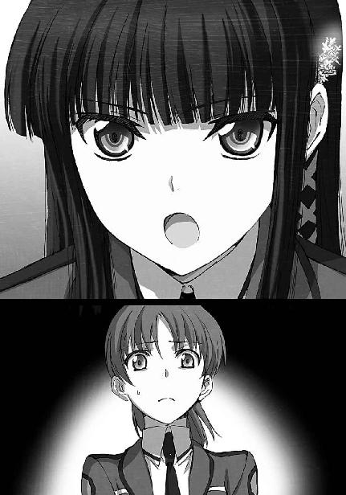
「誰もがお兄様を侮辱した？
それこそが、許しがたい侮辱です。
お兄様を侮辱する無知な者どもは、確かに存在します。
ですが、そのような有象無象の輩と同じくらい、いえ、それ以上に、お兄様の素晴らしさを認めてくれている人たちがいるのです。
壬生先輩、貴女は、可哀想な人です」
「なんですってっ？」
声だけは、大きかった。
だがそこに、力は無かった。想いも感情も、空っぽだった。
「貴女には、貴女を認めてくれる人がいなかったのですか？
魔法だけが、貴女を測る全てだったのですか？
いいえ、そんなはずはありません。
そうでない人を、わたしは少なくとも一人、知っていますから。
誰だと思いますか？」
「............」
「お兄様は、貴女を認めていましたよ。
貴女の剣の腕と、貴女の容姿を」
「......そんなの、上辺だけのものじゃない」
「確かにそのとおり、上辺だけのものです。
でも、それも確かに、先輩の一部であり、先輩の魅力であり、先輩自身ではありませんか」
「............」
「上辺なのは当たり前です。
カフェで二回、放送室の前で一回、お兄様と貴女が直接顔を合わせて話をしたのは、まだこれで、四回目なのですよ。
たった四回、会っただけの相手に、貴女は何を求めているのですか」
「それは......」
「結局、誰よりも貴女を差別していたのは、貴女自身です。
誰よりも貴女のことを劣等生と、『雑草』と蔑んでいたのは、貴女自身です」
反論は、できなかった。
反論しようという考えすら、浮かばなかった。
その指摘は、思考が漂白されるほどのショックを、紗耶香に与えた。
考えることを止めたとき、
人は、自らの意思を放棄する。
棄てられた意思の抜け殻に、悪魔の囁きは忍び込む。
否、この場合は、傀儡師の囁きか。
「壬生、指輪を使え！」
今の今まで、無様にも、十六歳の少女の背中に隠れていた男。
その男が突如叫んだ。
悲鳴にも似た叫び声と共に、床に向かって腕を振り下ろした。
小さな発火音と、白い煙。
同時に広がる、耳障りな不可聴の騒音。
それはサイオンのノイズ。
魔法の発動を阻害する、キャスト・ジャミングの波動だった。
三つの足音が煙の中から聞こえた。
達也は二度、手を突き出した。
煙の中の掌底打ち。
彼の目は閉じられていた。
鈍い、肉を打つ音が二度、床を叩く音が二度、鳴った。
「深雪、止せ」
指示を出したのは、その合間。
深雪が構成していた魔法式は、すぐに別のものに変わった。
風が渦を巻き、白い煙を吸い込んで行く。
ピンポン球の大きさまで圧縮された煙は、空中に出現したドライアイスに閉じ込められて床に落ちた。
視界が回復した部屋に、三人の男が横たわっている。
凍傷の激痛に転げ回る一人の男と、
顔面に痣を作って昏倒した二人の男。
「お兄様、壬生先輩を拘束せずとも良かったのですか？」
深雪が不思議そうに訊ねた。
そこに、達也の下心を疑う憶測はない。
達也の女性関係を深雪が勘繰ってみせるのは、兄妹の他愛もないコミュニケーションに過ぎないのだ。
達也がその手の私情を差し挟まないことを、深雪は良く知っている。
「お前の腕を疑うわけではないが、不十分な視界の中では思わぬ番狂わせもあり得る。
お前がリスクを冒さなくても、壬生先輩はエリカが確保してくれるさ」
ここから出口まで最短ルートを選択すれば、一階に残してきたエリカと必ず鉢合わせることになる。そしてあの様子では、回り道をする精神的な余裕は、紗耶香に残っていないはずだ。
「エリカがそこまで熱心になる理由は無いと思いますが......」
「相手が壬生先輩でなければな」
深雪には、特定の敵に拘る気持ちというのは、よく分からない。
彼女にとって戦いはまず避けるべきものであり、次に、勝利すべきものだからだ。
相手が誰であろうと、それは同じ。
相手が何者であろうと、敵であるということ以外は、無関係。
だが、仕合う相手に拘る者もいることを、知識としては知っていた。
「そうですか。エリカならば大丈夫でしょう」
だから彼女のことはエリカに任せ、深雪はテロリストにして窃盗犯を拘束する兄を、手伝うことにした。
◇ ◇ ◇
紗耶香の行動は、ほとんど反射的なものだった。
アンティナイトの指輪は、逃走用に貸し与えられた切り札。
彼女も「魔法遣い」としての教育を受けている者として、キャスト・ジャミングの性質と限界は知っていた。
いや、これを実際に使用するに当たり、普通の魔法師より詳しい知識を身につけた。
この指輪に、魔法師を倒す力は無い。
魔法を妨害するだけのキャスト・ジャミングは、魔法による攻撃を避けることにしか、役に立たない。
あの一年生には、それでは勝てない。
あの時見せられた、見たこともない、鮮やかな技。
あの一年生の武量は、目に焼き付けられている。
指輪を貸し与えられたとき、リーダーにも、何度も、念を押されていた。
この指輪は、逃走の為に使え、と。
目に焼き付けられた光景と、耳に刻み込まれた言葉が、彼女の四肢を操っていた。
背中越しに聞こえた床を叩く音。
彼女の後に続く者は無い。
仲間が打ち倒されたのは分かっていた。
だが、思考が麻痺した彼女には、助けに戻るという選択肢も思い浮かばない。
ただ、計画失敗時のマニュアルに従い、学外にある組織の中継基地へ帰還する、という強迫観念に支配され、廊下を走り階段を駆け下りる。
そこで、足が止まった。
「セーンパイ。はじめまして～」
一人の女子生徒が──紗耶香を「先輩」と呼ぶからには一年生だろう──両手を後ろに組んで、ニコニコと微笑みながら彼女の前に立ちはだかったからだ。
「......誰？」
警戒心をむき出しにした声。
だが、一年生の朗らかな表情に、変化は無い。
「一年Ｅ組の千葉エリカです。
念の為に確認させていただきますが、一昨年の全国中学女子剣道大会準優勝の、壬生紗耶香先輩ですよね？」
正体不明の衝撃が、紗耶香を襲った。
意識の陰、自分では見えない心の何処かに、竹刀で打ち据えられたような痛みが走った。
「......それがどうかしたの」
その衝撃を、痛みを隠して、問い返す。
「いえいえ、どうもしませんよ？
ただ確認したかっただけです」
エリカは相変わらず、両手を背中で組んだままだ。
だが、隙が無い。
彼女のスレンダーな身体は、廊下を塞ぐには程遠いが、すり抜けて通る「隙間」が見当たらない。
それに......背後に隠されたその両手は、素手なのだろうか？
何も、持っていないのだろうか？
「......急いでいるの。通してもらえないかしら」
背後から、追いかけてくる気配は無い。
だが彼ならば、気配を隠して近づくことなど朝飯前かもしれない。
紗耶香は焦る気持ちを抑えて、できるだけ穏便に話し掛けた。
──もっとも、このままここを通り抜けられる可能性が、ゼロに等しいことも分かっていた。
「一体どちらへ？」
「貴女には関係ないでしょう」
「答えるつもりは無い......ということですね？」
「そうよ」
「交渉決裂ですね」
楽しそうに告げるエリカ。
無茶苦茶な言い分だが、最初から彼女を通すつもりの無い事は、紗耶香にも分かり切っていたことだった。
紗耶香は素早く、左右を見た。
生憎彼女は、得物を持っていない。
ＣＡＤは身につけているが、魔法を使うつもりなら、自分が有する唯一のアドバンテージである、キャスト・ジャミングは使えなくなる。
視界の隅に、銀灰色の棒が転がっていた。
彼女の仲間が持ち込んだスタンバトンだ。
少しリーチが短いが、慣れ親しんだ得物の代用にはなる。
紗耶香はゆっくりと、覚られないように重心を落とした。
身体の力を足に集め、
一気に、跳躍。
転がるようにしてバトンを拾い上げ、すかさず、道を塞ぐ女子生徒へ向けて構える。
エリカはそのさまを、呆れ顔で眺めていた。
「そんなに慌てなくても、得物を手に取る間くらい待ってあげるのに......」
かぁっ、と紗耶香の顔に血が上った。
一人芝居ならぬ、一人アクションの気まずさと気恥ずかしさを誤魔化すように、エリカを鋭く睨みつけて叫んだ。
「そこをどきなさい！ 痛い目を見るわよ！」
「これで正当防衛成立かな。
まっ、そんな言い訳をするつもりも無いけど」
エリカは興が醒めたような声で呟くと、背中に隠していた手を前に回した。
右手には伸縮式の警棒、左手には本身の脇差。
そして、左手の得物をポイッと投げ捨てた。
「じゃあ、やりましょうか、先輩」
そう言って、エリカは右手を前に掲げた。
紗耶香もまた、構えを取った。得物を正面に、右手に左手を添える。
諸手中段の紗耶香と、片手半身のエリカ。
始まりは唐突だった。
切っ先（剣先）合わせも気合の発声も無い。
動いた、と見えた瞬間、エリカの警棒が紗耶香の首筋に迫っていた。
咄嗟に手をはね上げる。
身体に刷り込まれた、反射的な防御によって、辛うじてその攻撃を防ぎ止めた、と思った次の瞬間、相手は紗耶香の背後に回り込んでいた。
振り向きざま、勘だけでバトンを縦に立てる。
弾き飛ばされそうな衝撃を、手の内を締めて持ちこたえ、鍔迫り合いに持ち込もうとしたが、その瞬間には、相手の身体は間合いの外だった。
「自己加速術式......？」
呟く紗耶香。
エリカは応えない。
「......渡辺先輩と、同じ？」
だが、続いて放たれた言葉が、エリカの足を止めた。
それは一瞬の停滞、だが、転機を作り出すには十分な、間。
再び踏み出しかけたエリカの足を、廊下を満たした耳障りな騒音が止めた。
耳には聞こえぬ、サイオンのノイズ。
顔を顰めたエリカへ向けて、紗耶香が攻勢に転じる。
息もつかせぬ連続攻撃。
面、面、小手、胴、袈裟切り、切り上げ、面、逆袈裟......。
その剣筋は、スポーツとしての剣道だけでなく古流もしっかりと学んでいることを窺わせるものだった。
攻めること、火の如く。
風林火山の金言のままの、まさしく、烈火の如き攻撃。
いつの間にか、サイオンのノイズは消えていた。
それは当然のことだった。
キャスト・ジャミングは、アンティナイトにサイオンを注入することで発動する。
サイオンの注入が止まれば、ノイズの発生も止まる。
屋内を満たすノイズも、やがては減衰し消滅する。
剣撃に全精力を注ぎ込んでいる今の紗耶香に、キャスト・ジャミングを維持できるはずも無かった。
いつでも魔法を発動できる状態、そして、如何に鋭く、激しい攻撃であっても、魔法を併用したスピードについてこれる程のものではない。
それなのに、エリカは魔法を使おうとしなかった。
魔法式を組み上げる余裕が無いのだろうか？
エリカはコンパイルの実技に苦労していた二科生だ。
しかし、エリカのＣＡＤは高速化に優れた特化型で、エリカはこの特殊な形状のＣＡＤに習熟している。
それに刻印術式の方には、キャスト・ジャミングの影響下においてすら、サイオンが安定的に供給されていた。
突き放して距離を取れば、得意魔法の発動は十分可能なはずだった。
突き放すこともできないほど、追い詰められているようにも見えない。
烈火のように、という賛辞とは裏腹、紗耶香の攻撃はガムシャラとも言えるものだった。
それをエリカは、無駄のない動きで、受け止め、さばいている。
その目に、焦りは無い。
呼吸に、乱れは無い。
先に乱れたのは、攻め疲れの見えた紗耶香の方だった。
瞬転。
攻守が、入れ替った。
切り上げの一撃を擦り上げ、棒立ちとなった紗耶香のバトンへ横薙ぎに叩きつける一閃。
根元を狙った一撃は、木刀や棍棒に比べて造りの脆いスタンバトンをへし折った。
「............」
眼前に突きつけられた警棒を、紗耶香は怯まず睨みつける。
その目には、強い闘志がこもっていた。
「拾いなさい」
得物を動かさず、エリカが告げる。
「............」
意味を理解できなかった紗耶香は、何も、応えない。
「そこに転がっている脇差を拾って、貴女の全力を見せなさい。
貴女を縛るあの女の幻影を、あたしが打ち砕いてあげる」
突きつけられた警棒に構わず、膝を屈める紗耶香。
エリカが捨てた脇差を拾い、再び、構えを取る。
と、何を思ったのか、構えを解いて左手を右手に添えた。
右手中指に光る、真鍮色の指輪。
それを抜き取って、床へ投げ捨てた。
「こんな物には頼らない。
あたしは自分の力で、その技を打ち破る」
紗耶香がブレザーを脱いだ。
一高の女子制服はブレザーの下にノースリーブのワンピース。
紗耶香の両腕が肩からむき出しになった。肩から先の、自由を確保した。
紗耶香が、刃を返す。
峰打ちは刀の構造を無視した打撃であり、徒に刀を折るリスクを増やすものだ。
そのリスクを負っても、人を殺すことへの躊躇いが、剣尖を鈍らせてしまうことを嫌った、構え。
「あたしには解る」
構えを取って向き合い、
「貴女の技は、渡辺先輩と同門のものだわ」
「あたしの技は、あの女のものとは一味違うわよ」
互いに一言ずつ、言葉を交わす二人。
それきり、沈黙が支配する。
沈黙が緊張に変わり、緊張が、緊迫に席を譲る。
そして緊迫が最高潮に達した瞬間、エリカの姿が消えた。
刹那の、交差。
甲高い、金属音が響く。
視認することも困難な、魔法で加速されたエリカの一撃を、紗耶香は確かに、受け止めた。
その、一の太刀を。
紗耶香の手から、脇差が落ちる。
紗耶香が右腕を押さえて膝をついたのは、その直後だった。
「ゴメン、先輩。
骨が折れているかもしれない」
「......ひびが入っているわね。
いいわ、手加減できなかったってことでしょう」
「うん。
先輩は、誇ってもいいよ。
千葉の娘に、本気を出させたんだから」
「そう......貴女、あの千葉家の人だったの」
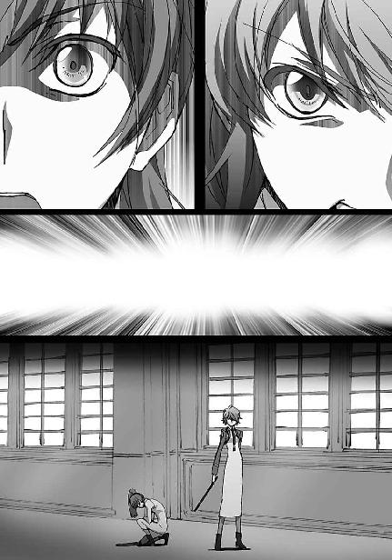
「実は、そうなんだ。
ちなみに渡辺摩利は、ウチの門下生。
あの女は目録で、あたしは印可。
剣術の腕だけなら、あたしの方が上だから」
その言葉に、紗耶香は小さく微笑んだ。
それは儚くも、屈託の無い笑顔だった。
「そう......。
ねえ、虫が良いお願いなんだけど、担架を呼んでもらえないかしら。
何だか、気が、遠くなって、ね......」
そのまま紗耶香は、がっくりと倒れこむ。
エリカはその身体を、丁寧に抱き起こした。
気を失った紗耶香に、こっそり、囁きかける。
「大丈夫だよ、先輩。
優しい後輩が、先輩を運んでくれるから」
◇ ◇ ◇
「で、俺に壬生先輩を運んで行け、と？」
達也の当然とも言える疑問に、エリカは一欠片の悪びれた様子も無く頷いた。
「大丈夫、そんなに重く無かったよ」
「いや、そういう問題ではなくてだな」
「可愛い女の子を大義名分つきで抱っこできるんだから、ここは喜ばなきゃ」
「そんなことで喜ぶ趣味は無い......いや、そういう問題でもなくてだな」
「......薄々思ってたんだけど、もしかして達也くんって、女性に興味ないの？
まさか、そっちの趣味？」
「そっち、って、どっちだよ？」
「ゲイ」
「そんなわけあるか！
だからそういう問題ではなくてだな、担架を呼べばいいものを、何故俺が抱えて行かなきゃならんのだ」
深雪はクスクス笑っているだけだ。
達也は蓄積していく徒労感と戦いながら、エリカに常識論を理解させるべく試みる。──ここに至り、既に諦めの心境が相半ばしていたが。
「そんなの、壬生先輩が喜ぶからに決まってるじゃん」
不覚にも達也は、返す言葉を失ってしまった。
ここまで理不尽になられると、論理立てた説得は困難だ。
途方に暮れてしまう、と言ってもいい。
「良いではありませんか、お兄様。
一刻を争う傷ではないとはいえ、治療は早いに越した事はありませんし。
お兄様が抱きかかえて行かれるのが、一番手っ取り早いと思います。
とにかく、このままでは埒が明きませんよ？
相手はエリカなんですから」
「チョッと深雪、それ、どーゆー意味かな？」
「やれやれ、それもそうだな。仕方ない」
「チョッと達也くん、なにその便乗攻撃？
二対一なんて卑怯じゃない！」
「あら、わたしはエリカに味方してあげたつもりなのだけど」
「ウソ！
ぜ～ったい、ウソ！」
ギャーギャー騒ぐエリカと涼しい顔で受け流す深雪の微笑ましい（？）コミュニケーションをＢＧＭとばかり聞き流しながら、達也は紗耶香をそっと抱きかかえた。
勢いをつけて揺すり上げるような真似はしない。
何処に力が入っているのか分からない、滑らかな動作だった。
「うん、やっぱ、達也くんはすごいワ」
何をそんなに感心しているのか、エリカは何度も頷いていたが、取り合うとまた長くなりそうだったので、達也はそのまま歩き出した。
気を失っているはずの紗耶香の顔は、ぐっすりと眠っているように見えた。
◇ ◇ ◇
携帯情報端末のモニター機能により図書館に潜入した部隊が拘束されたのを知って、男子剣道部主将の司は、ブランシュ日本支部のリーダーである兄に、指示を仰がなければならないと考えた。それも、できる限り早急に。
兄と言っても再婚相手の連れ子同士、義理の兄弟だが、今では実の親よりも信頼している。親の再婚当初は全く馴染めなかったような気もするが、いつの間にか、気がついてみたらそうなっていたのだ。
いつから、という思考は、それが意識に上ろうとした直後、ノイズの中に消え去った。（体感時間で）一瞬、ボウッとしていたことに気づいて、それどころでは無いと司は頭を振った。学校の敷地内で無線通信を使うのは危険すぎる。別に盗聴などされているわけでは無いし、普通の通信を行う分には気にすることなど全く無いのだが、今は非常時態勢だ。外部への通信は、有線・無線を問わず、監視されていると考えた方が無難だ。
学校の外へ出ることに困難が伴うとは、司は考えていなかった。非常事態といっても、戦時中とか内戦中とかいうわけではないのだ。学校の外で銃撃戦が行われているわけでもない。部外者の立入は厳重にチェックされているだろうが、生徒の下校を妨害するはずはなかった。
と、司は判断したのだが、残念ながら、彼の予想は裏切られた。
「剣道部の司じゃねえか。もう帰るのかい」
怪しまれないよう堂々と正門から外に出ようとしたところで、司は背後から呼び止められた。
友人、ではないが、知らない声ではなかった。
振り返った視線の先には、ゴツゴツした、という表現が一番しっくり来る、上背はさほどでもないが肉付きの良い（もちろん贅肉ではなく筋肉だ）、ガッチリした体格の、司と同じ三年生が立っていた。その腕には、風紀委員の腕章。
「辰巳......いや、この騒ぎじゃ、今日はもう部活は中止だろ？ だからサッサと帰ろうと思ってね」
下手に動揺するのが一番まずい。そう自分に命じて、司は何とか平静な声で応えを返す。
「そうか。まあ、そうだわな。今日はもう何処も、部活どころじゃないだろうよ」
「ああ、そういうことだ。それじゃ」
またな、と司は言いかけたのだが、そのセリフが最後まで発せられることは無かった。
「おっと待ちな。その前に訊きたいことがある」
心臓が激しく跳ね上がった。
「僕に？」
動揺を何とか押し隠して、司は精一杯不思議そうな表情を作った。
「ああ、オメエさんにだよ、司」
辰巳の声は、司の不安を煽るものだった。まるで、全てを知っているような口調だ、と司は感じた。
「ウチの委員長はチョッと感心しない特技を持っててな」
いきなり脈絡が無い──ように見える──話を始められても、警戒しなければならないという感覚は少しも薄れなかった。
「気流を操作して複数の香料を掛け合わせることで、違法な薬物を使わずに自白剤を作っちまうんだよ」
自分の喉から危うく漏れかけた悲鳴を、司は何とか抑え込んだ。
しかし、それは無駄な努力だった。
「無理して平気な顔しなくても良いんだぜ、司。オメエにも、もう分かってんだろ？
ネタは上がってんだよ。アイツらの手引きをしたのは、オメエだってネタが」
司は無言で踵を返した。
魔法技能に劣る二科生の自分だが、剣道で鍛えた成果か、高速移動の魔法には自信がある。鈍重そうに見えて実は、この辰巳は三年生有数のスピードファイターだが、長距離走行なら自分に分があったはずだ。
司はそう考えたのだが、彼のプランは、僅か一歩で潰えた。
「司先輩！ 大人しくご同道願います！」
鬱陶しいくらい威勢のいい声が、正確にはその主が、彼の行く手を阻んだのだ。
「沢木......何故お前たち二人がこんなところに」
司が呻き声を上げる。騒ぎが起こっていたのは図書館の前だ。風紀委員の中でも指折りの実力者コンビが、何故こんな所にいるのか。司がそう考えるのは、不思議なことではなかった。
「気がつかなかったか？ 今日、俺たちは、お前さんのことをずっと見てたんだよ。遠隔視系の能力持ちに協力してもらってな。
少しも尻尾を出さないんで空振りかとも思ってたんだが、結果的にお前さんが逃げ出そうとするところを押さえられたってわけさ」
愉快げに語る辰巳の声を背中に聞きながら、司は強行突破の決意を固めた。
突破するなら沢木の方だ。今、彼が置かれた状況で、校舎内へ戻るのは自殺行為。
しかし、沢木は二年生ながらマーシャル・マジック・アーツと呼ばれる魔法近接格闘術の、当校のエース。得物無しでは、司に勝ち目は無い。──正面から、ぶつかり合えば。
司は、右手に巻いたリストバンドを引き抜いた。
その下には、真鍮色の細く薄い腕輪。アンティナイトのブレスレットだ。
彼はキャスト・ジャミングを発動した。
こんな場所でジャミング波を撒き散らせば、自分がヤツらの仲間だと大声で触れ回るようなものだと分かっていた。だが、後のことを考えられる状況では無かった。今、この場面を何とか切り抜けて、兄と連絡を取らなければならない──強迫観念じみたその思考が、司の行動を支配していた。
顔を顰めた沢木に向けて、司は突進した。マーシャル・マジック・アーツはあくまで、魔法で肉体を補助して高い戦闘力を発揮する魔法の技術。魔法が使えない状態ならば、例え素手でも、魔法による補助を前提としない「剣道家」の自分の技が勝っているはずだ。司はそう信じて、沢木に打ちかかった。
彼の手刀は、沢木にあっさり、いなされた。
脇腹に強い衝撃。沢木の肘が、司の腹部に食い込んでいた。
「司、オメエ、勘違いしてるぜ」
地面に崩れ落ちた司を見下ろしながら、辰巳は同情を込めて呟いた。
「沢木は魔法無しでも並じゃねえ。考え違いしてるヤツが多いけどな、そもそも魔法無しでやれないヤツが、魔法って余計なモンを上乗せしてまともに動けるわけねえんだ」
激痛に呻く司に、応えを返すことはできなかった。沢木は黙々と、司を縛り上げていた。
◇ ◇ ◇
保健室では、紗耶香の事情聴取が始まっていた。
右腕の治療をしながらでもあり、最初はなるべく興奮させないように、と校医から制止が掛かったが、今、全てを話したいというのが紗耶香自身の希望だった。
事情聴取には、真由美、摩利、克人の生徒首脳陣が勢揃いしていた。首謀者と目される司甲を拘束し、表だった騒乱を一通り鎮圧したとはいえ、詳しいことはまだほとんど分かっていない。学外からの侵入者は教職員が警察に引き渡すべく手元で拘束しており、生徒会長や部活連会頭や風紀委員長といえど生徒という立場にある以上は手を出せない。一方、司はまだ訊問ができる状態ではない。紗耶香が今回の事件に関する詳しい事情を聞き出すことのできる現状唯一の情報源であることを考えれば、真由美たち三人が揃ってこの場にいるのも不思議なことではなかった。
話は紗耶香が彼らの仲間に引き込まれたところから始まった。
去年、彼女が入学してすぐ司に声を掛けられたこと。剣道部にはその時既に司の同調者が少なからずいたこと。剣道部だけでなく、生徒の自主的な魔法訓練サークルを装って思想教育が行われていたこと。彼らが第一高校の内部に、想像以上の時間を掛けて周到に足場を築いていたという事実は、真由美たちにも驚きを以て迎えられた。
紗耶香の話に最も衝撃を受けたのは摩利だっただろう。もっとも真由美や克人とは、衝撃を受けるポイントが違っていた。
「すまん、心当たりが無いんだが......」
目を白黒させている摩利に、エリカが棘のある眼差しを向けていた。
だが摩利に、その視線を意識する余裕はなかった。
「壬生、それは本当か？」
狼狽のにじむ声で摩利に問われ、紗耶香が俯いたのは一秒未満。
顔を上げた紗耶香は、吹っ切れた表情で頷き、同じく、吹っ切れた口調で答えた。
「今にして思えば、あたしは中学時代『剣道小町』なんて言われて、いい気になっていたんだと思います。
だから入学してすぐの、剣術部の新入生向け演武で渡辺先輩の見事な魔法剣技を見て、一手のご指導をお願いしたとき、すげなくあしらわれてしまったのがすごくショックで......。
相手にしてもらえなかったのはきっと、あたしが二科生だから、そう思ったらとてもやるせなくなって」
「チョッと......チョッと待て。
去年の勧誘週間というと、あたしが剣術部の跳ね上がりにお灸を据えてやった時のことだな？
その時のことは覚えている。
お前に練習相手を申し込まれたことも忘れていない。
だがあたしは、お前をすげなくあしらったりしていないぞ？」
「傷つけた側に傷の痛みが分からないなんて、よくあることです」
真剣に首を捻っている摩利を、皮肉たっぷりの口調でエリカが非難する。
「エリカ、少し黙っていろ」
しかしそれを、達也が制止した。
「なに？ 達也くんは渡辺先輩の味方なの？」
「だから少し黙って聞いていろ。非難も論評も、話を聞き終わってからだ」
ピシャリと叩きつけられた叱責に、不満げな表情を浮かべながらも、エリカが黙り込む。
短い沈黙の後、紗耶香が少し辛そうに反論した。
「先輩は、あたしでは相手にならないから無駄だ、自分に相応しい相手を選べ、と仰って......。
高校に入ってすぐ、憧れた先輩にそんな風に言われて......」
「待て......いや、待て。
それは誤解だ、壬生」
「えっ？」
「あたしは確か、あの時こう言ったんだ。
──すまないが、あたしの腕では到底、お前の相手は務まらないから、お前に無駄な時間を過ごさせてしまうことになる。それより、お前の腕に見合う相手と稽古してくれ──とな。
違うか？」
「え、あの......そう、いえば......」
「大体、あたしがお前に向かって『相手にならない』なんて言うはずがない。
剣の腕はあの頃からお前の方が上だったんだから」
ポカンとした表情で見詰め返すだけの紗耶香に代わって、真由美が摩利に問い掛けた。
「チョッと待って、摩利。
じゃあ貴女は、壬生さんの方が強いから、稽古の相手は辞退する、と言ったの？」
「そのとおりだ。
そりゃあ、魔法を絡めればあたしの方が上かもしれんが......。
あたしが学んだ剣技は、魔法の併用を大前提としたものであって、魔法を最大限活かす為に身体をどう動かし武器をどう使うか、というものだからな。
純粋に剣の道を修めた壬生に、剣技で敵う道理がない」
「じゃあ............あたしの誤解......だったんですか......？」
居心地の悪い沈黙が保健室に忍び込み、ゆっくりと広がった。
「なんだ、あたし、バカみたい......。
勝手に、先輩のこと誤解して......自分のこと、貶めて......。
逆恨みで、一年間も無駄にして......」
ただ、紗耶香の嗚咽だけが、沈黙の中に流れた。
「無駄ではないと、思います」
その沈黙を破ったのは、達也だった。
「......司波君？」
顔を上げた紗耶香の瞳を真っ直ぐにのぞき込んで、達也は嚙んで含めるような口調で、言葉を続けた。
「エリカが先輩の技を見て、言っていました。
エリカの知る壬生先輩の、中学の大会で準優勝した『剣道小町』の剣技とは別人のように強くなっていると。
恨み、憎しみで身につけた強さは、確かに、哀しい強さかもしれません。
ですがそれは、紛れもなく、壬生先輩が自分の手で高めた、先輩の剣です。
恨みに凝り固まるでなく、嘆きに溺れるでなく、己自身を磨き高めた先輩の一年が、無駄であったはずはないと思います」
「............」
「強くなるきっかけなんて様々です。
努力する理由なんて、千や万では数えきれないでしょう。
その努力を、その時間を、その成果を否定してしまった時にこそ、努力に費やした日々が本当に無駄になってしまうのではないでしょうか」
「司波君......」
達也を見上げる紗耶香の目は、涙をぼろぼろと流し続けている。
だが彼女はその時、確かに笑みを浮かべていた。
「司波君、一つだけ、お願いがあるんだけど」
「なんでしょう」
「もう少し、こっちに来てくれないかな？」
「こう、ですか？」
「もう一歩」
「はぁ」
雰囲気が変わり、ホッとした空気が流れた。
だがそれは、
「じゃあ、お願い」
すぐに、
「そのまま、動かないでね」
ギョッとしたものに、変わった。
紗耶香が達也の服を握り締めて、胸に顔を埋めたからだ。
「うっ、うう......」
嗚咽はすぐに、号泣に変わった。
達也の胸にすがりついて、紗耶香は大声で泣き始めた。
皆がおろおろした表情で顔を見合わせる中、達也は無言でその細い肩を支え、深雪はそれを見て、目を伏せた。
ようやく落ち着きを取り戻した紗耶香の口から、同盟の背後組織がブランシュであることが語られた。
「予想どおりですね、お兄様」
「本命すぎて面白みがないけどな」
「現実はそんなものですよ、委員長。
さて、問題は」
脱線しかけた軌道を、それこそ面白みがない処世訓で元に戻して、
「やつらが今、何処にいるのか、ということですか」
達也は今後の行動方針を、既定のものであるかの如く口にした。
「......達也くん、まさか、彼らと一戦交えるつもりなの？」
「その表現は妥当ではありませんね。一戦交えるのではなく、叩き潰すんですよ」
おそるおそる訊ねた真由美に、達也はあっさりと、過激度を上乗せして頷いた。
「危険だ！ 学生の分を超えている！」
真っ先に反対したのは、摩利。
学内限定とはいえ、常にトラブル処理の最前線に立っている彼女が、危険性に対して敏感になるのはある意味当然と言えた。
「私も反対よ。学外の事は警察に任せるべきだわ」
真由美も厳しい表情で首を横に振った。
だが、
「そして壬生先輩を、強盗未遂で家裁送りにするんですか？」
達也の一言に、顔を強張らせて絶句してしまう。
「なるほど、警察の介入は好ましくない。
だからといって、このまま放置することもできない。
同じような事件を起こさない為にはな。
だがな、司波」
炯々たる克人の眼光が、達也の眼を貫いた。
「相手はテロリストだ。下手をすれば命に関わる。
俺も七草も渡辺も、当校の生徒に、命を懸けろとは言えん」
「当然だと思います」
しかし達也は、その眼光をものともせず、淀みなく答えた。
「最初から、委員会や部活連の力を借りるつもりは、ありません」
「......一人で行くつもりか」
「本来ならば、そうしたいところなのですが」
「お供します」
すかさず飛び込んで来た妹の声に、達也は苦笑を浮かべた。
「あたしも行くわ」
「俺もだ」
エリカから、レオから、次々と表明される、参戦の意思。
「司波君、もしもあたしの為だったら、お願いだから止めて頂戴。
会長の仰るとおり、警察に任せましょう？
あたしは平気。罰を受けるだけのことをしたんだから。
それより、あたしの所為で司波君たちに何かあったら、そっちの方が耐えられない」
慌てて紗耶香が止めに入るが、振り返った達也の表情は、彼女の誠意に応えるには、相応しからぬものだった。
「壬生先輩の為ではありません」
冷たく突き放す口調に、紗耶香がショックを受けた顔で黙り込む。
「自分の生活空間がテロの標的になったんです。俺はもう、当事者ですよ。
俺は、俺と深雪の日常を損なおうとするものを、全て駆除します。これは俺にとって、最優先事項です」
偽悪を気取り、紗耶香が負担に感じないよう思い遣っている、という様子でもなかった。
深雪ほど彼のことを理解してはいないレオにも、エリカにも、真由美にも、摩利にも、達也が本音で語っていることが、何となく解った。
氷刃の如き眼差しで、理解させられた。
怒りでもなく、闘志でもなく、危険なテロリストの排除を確定された未来として語る達也の自信──あるいは決意──に、克人までが言葉を発することができなくなっている中で、
「しかしお兄様。どうやってブランシュの拠点を突き止めればいいのでしょうか？
壬生先輩がご存知の中継基地はとうに引き払われているでしょうし、大した手掛かりが残っているとも思えませんが」
深雪だけが、いつもの様に、兄に話し掛けた。
「そうだな。それは司先輩の方も同じだろう。
残っていない、というよりも、最初から手掛かりになるようなものは何も置かれていなかっただろうね」
「では？」
手掛かりがないと言いながら、それほど困った様子の無い兄に、深雪が答えを促す。
「分からない事は、知っている人に聞けば良い」
「......知っている人？」
「心当たりがあるのか、達也？」
エリカとレオの問いには答えず、達也は黙って、出入り口の扉を開いた。
「小野先生？」
真由美の声に、困惑交じりの曖昧な笑みを浮かべたのは、パンツスーツ姿の遥だった。
「......九重先生秘蔵の弟子から隠れ遂せようなんて、やっぱり、甘かったか......」
彼女が苦笑い混じりながらも、悪びれの無い声で話し掛けた相手は、達也だった。
達也は無表情ながらも、微妙に呆れ声で応えた。
「隠れているつもりも無かったでしょうに。
あんまり噓ばかりついていると、その内、自分の本心さえも分からなくなりますよ」
「気をつけておくわ」
達也に招き入れられる形で、遥はベッド脇まで歩み寄った。
身を屈めて、ベッドに腰を下ろした紗耶香と、目線を合わせる。
「もう大丈夫みたいね」
「小野先生......」
「ごめんなさいね、力になれなくて」
首を横に振る紗耶香の肩に手を置いて、その瞳を少しの間じっとのぞき込んでから、遥はベッドサイドを離れた。
「遥ちゃんが、ブランシュとかいう連中の居所を知っているのか？」
誰だ？ というベタなボケは、さすがに無かった。
その代わり、聞いたことの無い、発言者にもそぐわない、妙な呼称が聞こえて来た。
「遥ちゃん？」
「あれっ？ 達也、知らないのか？」
当然の疑問かと思ったのだが、逆に訊き返されて、達也は何と返せばいいのか戸惑ってしまう。
「クラスの連中は皆、そう呼んでるぜ？
遥ちゃんも、それで構わないって言ってるし」
「皆じゃないわよ。そんな呼び方してるのは、一部の男子だけ。
達也くん、騙されちゃダメよ」
「あ、ああ......」
思わぬ寸劇で、緊張感が大暴落していた。
だが、下手に緊張しすぎるよりはこの方が良いかもしれないと、達也は思い直した。──多分に、自分を納得させる為の成分が混じっていたが。
「──さて、小野先生」
「遥ちゃんで良いのに」
まさかと思った本人のボケに、挫けそうになる心のテンションを、何とか維持する。
「......小野先生。事ここに至って、知らないふりはありませんよね？」
「ノリが悪いのね」
「............」
「......オッホン」
達也の向けた真っ白な視線に、いくら何でも拙いと思ったのか、一つ咳払いして──それも必要以上に芝居がかっていたが──遥は居住まいを改めた。
「地図を出してもらえないかしら。その方が早いから」
達也は無言で情報端末を取り出した。
スクリーンを展開し、地図アプリを呼び出す。
遥も──達也の物より随分華奢でお洒落な感じだったが──端末を取り出し、指向性光通信を作動させた。
送信された座標データに従い、地図が立ち上がり、マーカーが光る。
「......目と鼻の先じゃねえか」
「......舐められたものね」
レオとエリカが憤慨しているように、徒歩でもここから一時間は掛からない距離だ。
縮尺を大きくして、詳細表示に変える。
そこは、街外れの丘陵地帯に建てられた、バイオ燃料の廃工場だった。
「......環境テロリストの隠れ蓑であることが判明して、夜逃げ同然に放棄された工場ですね」
添付データを達也が読み上げる。
「当局が気づかないうちに、舞い戻っていたということかしら」
「根は同じだと？」
形式は質問だったが、摩利も、真由美と同じ考えである事は、その表情から分かる。
「放置されているところを見ると、劇毒物の持ち込みはないようだな」
「ええ。私たちの調査でも、ＢＣ兵器は確認されていないわ」
克人の呟きに、遥が頷く。
「車の方が良いだろうな」
「魔法では探知されますか？」
「探知されるのは一緒さ。向こうは、俺たちのことを待ち構えているだろうから」
達也が自分のことを「当事者」と言ったのは、攻撃を受けた一高に籍を置く生徒だから、という理由ばかりではなかった。テロリストは、非公開の魔法技術を強奪しようとした。ならば、彼の持つあの技術も、テロリストは狙っているに違いない。司甲が達也を襲撃したのも、あの技術の有効性を確認する為のテストだったのだろう。それが達也の推理だった。
「正面突破ですね？」
「それが一番、相手の意表をつくことになるだろうな」
達也はともかく、深雪までもが当たり前のように好戦的な台詞を口にして、二人で攻略方針を決めて行く。
それに克人が賛同を示した。
「そうだな。妥当な策だ。車は、俺が用意しよう」
「えっ？ 十文字くんも行くの？」
真由美の疑問は、達也も共有するものだった。
克人は、配下の参戦を否定しながら、自分だけは前線に赴くタイプには見えない。
「十師族に名を連ねる十文字家の者として、これは当然の務めだ。
だがそれ以上に、俺もまた一高の生徒として、この事態を看過することはできん。
下級生にばかり任せておくわけにもいかん」
「......じゃあ、」
「七草。お前はダメだ」
「真由美。この状況で、生徒会長が不在になるのは拙い」
「......了解よ」
二人掛かりの説得に、真由美は不承不承ながら、頷く。
「でも、それだったら摩利、貴女もダメよ。残党がまだ校内に隠れているかもしれないんだから。風紀委員長に抜けられたら困るわ」
そして今度は、摩利が不承不承頷く番だった。
そんな女子生徒二人の睨み合い（？）を他所に、克人は達也へ目を向けた。
「司波、すぐに行くのか？ このままでは夜間戦闘になりかねないが」
「そんなに時間は掛けません。日が沈む前に終わらせます」
「そうか」
達也の態度に、何事か感じるものがあったのだろう。
克人はそれ以上は何も訊こうとせず、車を回す、と言い残して保健室を出て行った。
「会頭と会長が十師族なのは分かったけどよ......遥ちゃんって、何者なんだ？」
「その話は後だ。行くぞ」
あえて誰も口にしていなかったレオの質問は、達也によって棚上げにされた。
達也、深雪に続き、レオとエリカが保健室を後にした。
車は、オフロードタイプの大型車だった。
そしてその助手席には、追加のメンバーが座っていた。
「よう、司波兄」
「桐原先輩」
「あんまり驚かねえのな」
「......いえ、十分驚いてますよ」
主に、その呼び方に、とは、口にせぬが花だった。
「司波兄、俺も参加させてもらうぜ」
「どうぞ」
一体どういう心境で桐原がこのようなことを言い出したのか、達也には分からない。
だが、押し問答するには、時間が惜しかった。
達也はそのままオフローダーに乗車し、妹が、友人が、その後に続いた。
［11］
茜色に染め上げられた世界の中、
夕陽を弾いて疾走する大型オフローダーが、
閉鎖された工場の門扉を突き破った。
「レオ、ご苦労さん」
「......何の。チョロイぜ」
「疲れてる疲れてる」
いきなり、時速百キロ超で悪路を走行中の大型車全車体を、衝突のタイミングで硬化する等というハイレベルな魔法を要求されたレオは、集中力の多大な消費にかなりへばっていた。
「司波、お前が考えた作戦だ。お前が指示を出せ」
克人に委ねられた権限と責任に、達也は尻込みすることなく頷いた。
「レオ、お前はここで退路の確保。
エリカはレオのアシストと、逃げ出そうとするヤツの始末」
「......捕まえなくていいの？」
「余計なリスクを負う必要は無い。安全確実に、始末しろ。
会頭は桐原先輩と左手を迂回して裏口へ回ってください。
俺と深雪は、このまま踏み込みます」
「分かった」
「まあいいさ。逃げ出すネズミは残らず斬り捨ててやるぜ」
「達也、気をつけてな」
「深雪、無茶しちゃダメよ」
居残りを指示されたレオも、エリカも、不平を鳴らすような真似はしない。
抜き身の刀──ただし、刃引き──を手に提げた桐原が駆け出し、克人が悠然とそれに続く。
達也と深雪は、ＧＭＳ（ゼネラルマーチャンダイズストア／総合スーパー）にでも入るような足取りで、薄暗い工場の中へ進んだ。
◇ ◇ ◇
遭遇は意外に早かった。
達也は遮蔽物の確保など気にせず進み、相手もホール状のフロアに隠れもせず整列していたからだ。
「ようこそ、はじめまして、司波達也くん！
そしてそちらのお姫様は、妹さんの深雪くんかな？」
「お前がブランシュのリーダーか？」
大袈裟な仕草で手を広げ、歓迎のポーズをとった男に対して、達也は冷ややかに問い掛けた。
年齢は三十前後か。意外に若い。
ヒョロッとした身体つきに縁無しの伊達メガネ。その男は、学者か法律家といった趣の外見をしていた。
「おお、これは失敬。
仰せのとおり、僕がブランシュ日本支部のリーダー、司一だ」
威圧感の類は感じられなかった。偏見かもしれないが、頭でっかちで失敗するインテリ革命家にありがちなタイプ、というのがその男に達也が懐いた印象だった。
ただその大仰な、自己陶酔の気がある口調と仕草のその奥に、暗い深淵が顔をのぞかせている。そこから垣間見える濃密な狂気は、人の心と命を弄ぶテロ組織のリーダーに相応しいものだった。
「そうか」
しかし達也は、その狂気を認識しながら、眉一つ動かさなかった。地獄も煉獄も修羅界も、彼にはお馴染みのものでしかない。剣道部主将・司甲との関係を、改めて問うこともせず、ただ一言、頷いただけだった。
彼は言葉では無く、態度で自分の意思を示した。達也はショルダーホルスターから、銀色のＣＡＤを抜いた。
「ふむ、それはＣＡＤだね。拳銃くらい用意してくるかと思っていたが。
それにしても大胆なことだ。ここまで、身を隠さずに入ってくるとは。
如何に魔法師とはいえ、銃で撃たれれば死ぬのだよ？」
「俺は魔法師じゃない」
狙撃を仄めかされた相手の意外な反応に、ブランシュのリーダーはわざとらしく、目を丸くして見せた。
「おお、そうか。君はまだ学生だったね。
あんまり堂々としているから忘れそうになったよ」
「お喋りな男だな。
まあ、アジテーターなど、それが商売なのだろうが」
「若いのに手厳しいね、君は。
若いうちからそんなに穿った見方ばかりで、窮屈ではないかね。その調子では、その内、窒息してしまうよ？」
大袈裟な口調と仕草。自分に酔っているような口上。
だが達也には、司一の道化た演技につき合うつもりは無かった。
「一応、投降の勧告をしておく。
全員、武器を捨てて両手を頭の後ろに組め」
「ハハハハハ、君は魔法の苦手なウィードじゃなかったのかい？
おっと失礼、これは差別用語だったね。
でも、君のその自信の源は何だい？
魔法が絶対的な力だと思っているなら、大きな勘違いだよ」
哄笑と共に狂気をいっそう色濃くにじませた司一が、右手を上げた。
左右に並ぶ、総勢二十人を超えるブランシュのメンバーが、一斉に銃器を構えた。
拳銃だけでなく、サブマシンガン、アサルトライフルを持つ者すら混じっていた。
「交渉は、対等なものでなければならないから、こちらからも機会をあげよう。
司波達也くん、我々の仲間になり給え。
弟が知らせてくれた、アンティナイトを必要としない君のキャスト・ジャミングは、非常に興味深い技術だ。
今回の作戦には、我々も随分手間を掛けているのだよ。世間知らずの学生たちを使えるように教育するだけで、かなりの時間とコストが掛かっている。それを台無しにしてくれたことは実に忌々しく許しがたいことだが、君が我々の仲間になるなら、水に流そうじゃないか」
薄笑いを浮かべたその顔は、狂気が正気を演じるその瞳は、達也で無ければ怖気を免れないだろう。達也が一緒でなかったならば、深雪も鳥肌くらいは立てていたに違いない。
「やはり、それが狙いか。
壬生先輩を使って接触したのも、弟に俺を襲わせたのも、あのキャスト・ジャミングもどきについて探りを入れる為だな？」
「ふむ、頭の良い子供は好ましいね。
だがそこまで分かっていてノコノコやってくるとは所詮、子供だ。
とは言うものの、子供は強情なものでもある。
全く勝ち目がないと分かっていても、大人しく言うことをきかないだろう」
「だったらどうする」
「そうだね......では、こうしよう」
その仕草は、学者というより手品師のようだった。
外連味たっぷりに伊達メガネを投げ捨て、前髪をかき上げて正面から目を合わせる。
「司波達也、我が同士になるがいい！」
司一の両眼が、妖しい光を放った。
達也の顔からただでさえ乏しかった表情が消え、脱力したようにＣＡＤを握る右手が下がった。
「ハハハハハ、君はもう、我々の仲間だ！」
内に秘める狂気を隠すことをやめた司一の姿は、畏怖も尊敬も呼び起こすものではなかったが、確かにある種のカリスマ性を備えていた。
「では手始めに、ここまで共に歩んで来た君の妹を、その手で始末してもらおう！
妹さんも最愛の兄上の手に掛かるなら、本望だろう！」
付け焼き刃でない、命令することに慣れた口調。
確かに彼は、これまで多くの人間を従えてきたのだろう。
歪んだ笑顔に浮かぶ、己が権威を疑わぬ表情。
「......猿芝居はいい加減に止せ。見ている方が恥ずかしくなる」
しかし、その表情は、冷ややかな達也の侮言に、瞬時に凍りついた。
「意識干渉型系統外魔法、邪眼。
と、称してはいるが、その正体は催眠効果を持つパターンの光信号を、人の知覚速度の限界を超えた間隔で明滅させ、指向性を持たせて相手の網膜に投射する光波振動系魔法。
洗脳技術から派生した、映像機器でも再現可能な、単なる催眠術だ。
大袈裟な機械を使わずに済む為、相手の意表をつくことができるというメリットはあるが、所詮、それだけのものに過ぎない。
確かこれは、新ソビエト連邦成立前にベラルーシが熱心に開発していた手品だったな」
魔法ではなく、言葉で、達也は敵を凍りつかせた。
「壬生先輩の記憶も、これですり替えたのか？」
「お兄様、では......？」
大きな目を更に見開いて問い掛けた深雪に、達也は無表情なまま、頷いた。
「壬生先輩の記憶違いは、不自然なほど激しいものだった。
聞き間違いをした直後は動揺しているから、あんな極端な思い込みに捉われることもあるだろう。
だが普通は、時間の経過と共に、冷静になっていくものだ」
「......この、下種ども」
深雪の端正な唇から迸った、怒気。
その熱が、凍りを解かしたのか。
「......貴様、何故......」
喘ぐように、司一が呻く。その顔に、狂気の笑みは無い。狂気が去った後に残っていたのは、自らの手を汚さずに、ただ命じることにのみ慣れた、線の細いインテリ指導者の姿。
「つまらんヤツだな」
達也はもはや、侮蔑を隠そうとしなかった。
「メガネを外す右手に注意を引きつけ、ＣＡＤを操作する左手から目を逸らす、そんな小細工がこの俺に通用するものか。
起動式が見えていればどんな魔法を発動しようとしているのかも分かるし、対処もできる。
お前のちゃちな魔法など、起動式を部分的に抹消するだけで十分だった。肝心の催眠パターンに関する記述が抜け落ちては、邪眼も単なる光信号に過ぎない」
タネの割れた手品師に、興味は無かった。
「バカな......そんな真似が......貴様、一体......」
「ところで、二人称は君、じゃなかったのか？ 大物ぶっていた化けの皮が剝がれているぞ」
ここに至り、司一はようやく気がついた。
この少年の表情が消えたのは、脱力したのは、彼の魔法を確認し無効化したことで、彼を確実に葬り去る計算が成立したからだ。
目の前のこの少年は、最初から、彼のことを同じ人間と見ていなかった。
彼らのことを、人間として見てはいなかった。彼らの持つ、顔も名前も個性も意思も、この少年にとっては何の意味も成していなかったと、司一は直感的に理解した。
この少年にとって自分たちは、単なる「敵」に過ぎない。「障碍物」でしかない。
そして今、取り除く方法を確立したことで、障碍物ですらなくなったのだ。
「う、撃て、撃てぇ！」
威厳を取り繕う余裕は、もはや無かった。
同士、いや、部下たちが向ける疑惑の眼差しにも、気づく余裕はなかった。
生物としての原初的な恐怖に駆られて、司一は射殺を命じた。
だが──
「な、な、......」
「何だこれはっ？
何が起こったんだっ？」
──弾丸は、一発も発射されなかった。
パニックが、フロアを満たした。
床には、バラバラに分解された、拳銃、サブマシンガン、アサルトライフルが散乱している。
男たちが引き金を引こうとした瞬間、彼らの武器は、部品に戻っていた。
パニックの中、
それを鎮めようともせずに、
司一が、逃げ出した。
彼は背後を、仲間を、一顧だにしなかった。
「お兄様、追ってください。
ここはわたしが」
「分かった」
達也は奥の通路へ向けて、歩き出した。
自然に、人垣が割れる。
彼は何もせず、司一が逃げて行った通路へたどり着いた。
そのまま彼を通していれば、残されたブランシュのメンバーは、捕まるだけで済んだはずだ。
だがメンバーの一人が、ナイフを手に、達也の背中へ襲い掛かった。
襲い掛かろうと、した。
「愚か者」
常であれば、人を魅了してやまない可憐な響きが、絶望をもたらす裁きを運ぶ。
「程々にな。
この連中に、お前の手を汚す価値は無い」
「はい、お兄様」
言葉を交わす兄と妹の間では、全身を霜で覆われた彫像が、傾き、倒れている最中だった。
◇ ◇ ◇
彼女の兄に害を為そうとした者は、一人だけ。
その愚か者は、既に凍りついている。
だが、彼女にとってはそれだけで十分であり、それだけでは不十分だった。
十分な理由、
不十分な結果。
たった一人の華奢な少女を前に、二桁の男たちが、一歩も動けなくなっていた。
凍りついた足は、踏み出すことも、後退ることもできなくなっていた。
精神的にも──物理的にも。
床は一面、白い霜で覆われていた。
少女の立つ小さな円内、そこだけが、屋外と同じ季節だった。
白い霧が、渦を巻き流れる。
霧は冷気で、できていた。
少女が右手を上げた。
その姿は、死者に裁きをもたらす、氷の女王の現界か。
「お前たちは、運が悪い」
いつもとは異なる口調。
だが、命じ、裁く、権威と共にあるその言葉遣いに、いささかの違和感もなかった。
「お兄様に手出しをしようなどとさえしなければ、少し痛い思いをするだけですんだものを」
冷気が、徐々に、這い上がってくる。
身体の芯に食い込んでいく。
男たちの顔が、恐慌と、絶望に染まる。
「わたしはお兄様ほど、慈悲深くはない」
白い霧は、首の下まで這い上がっていた。
「祈るがいい。せめて、命があることを」
男たちの頭頂まで達した冷気が、一気に、厳しさを増した。
振動減速系広域魔法「ニブルヘイム」。
声無き断末魔の絶叫が、霧の中に満ちた。
◇ ◇ ◇
待ち伏せはなかった。
戦力を分散させない程度の頭はあったようだ、と達也は思った。
存在を知覚する達也に、待ち伏せは意味をなさない。
隠れることもまた無意味。
次の部屋に、テロリストの残党が十一人、待ち構えている。
サブマシンガンが、十丁。
達也は壁越しに、ＣＡＤの引き金を引いた。
物理的な障壁は、魔法の障碍にはならない。
達也が自由に使える二つだけの魔法、その一つ「分解」が、サブマシンガンのエイドスを書き換える。
再びあがる、狼狽の声。
彼が存在を知覚できるのは、魔法式のみならず起動式をも解析することができるのは、この魔法と、もう一つの魔法の副産物だ。
構造を認識し、構造を分解する。
物体であれば、その構造情報を物体が構成要素へ分解された状態に書き換える。
情報体であれば、その構造それ自体を分解する。
魔法としては最高難度に数え上げられる、構造情報に対する直接干渉。
それを生来の能力として持ってしまったが故に、彼は他の魔法をまともに使えない。
擬似的にしか、仮想的にしか、使えない。
彼の魔法演算領域は、二つの最高難度魔法に占有されてしまっているからだ。
だが今は、多様な魔法は必要ない。
絶対の一、それこそが、必勝の武器。
敵の手に、もはや銃器は無い。
最奥の部屋に足を踏み入れた達也を出迎えたのは、銃弾ではなく、空虚な笑い声と、不可聴の騒音。
「どうだい、魔法師？ 本物の、キャスト・ジャミングは？」
狂ったような笑い声に、人の意識を吞み込む狂気の闇は、既に無かった。
司一の狂笑は、虚勢の産物でしか無かった。
追い詰められた司一の虚勢を支えているのは、その右手首に巻かれた真鍮色の輝きを持つアンティナイトのブレスレット。
残り十人の男たちの指にも、同じ色の指輪がはまっている。
アンティナイトは産地が極めて限定された軍事物資だ。
旧アステカ帝国の一部、旧マヤ諸国地域の一部、チベットの中心部、スコットランド高地の一部、イラン高原の一部、など。
高山型古代文明の栄えた地にのみ、アンティナイトは産出する。
まるで、高地でのみ精製された人工物であるかのように。
大量に用意されたアンティナイトを見て、達也はボソリと呟いた。
「雇い主はウクライナ・ベラルーシ再分離独立派。そのパトロンのスポンサーは大亜連合か」
動揺が伝わって来た。
心底、つまらないと思う。
彼らは三流もいいところだった。
正直なところ、これ以上つき合いきれない。
「やれ！
魔法が使えない魔法師など、ただのガキだ！」
拳を合わせるのも面倒だったので、達也は右手を上げて、ＣＡＤの引き金を引いた。
銃ではない。弾丸も、それに類するものも、いまだ物理技術では発射装置の小型化が実現していないレーザーや荷電粒子も出ていない。
それなのに、射線上の男が、太腿から血を噴き出して倒れた。
前と、後ろの二箇所から。
細い、針で刺したような小さな穴が、神経節を直撃して、大腿部を貫通していた。
次々と引き金を引く達也。
男たちは、肩から、足から、次々と血を噴き出して倒れる。
達也は、魔法式で設定した射線上の、肉体を構成する皮膚と筋肉と神経と体液と骨格と、あらゆる細胞物質を、分子レベルに分解して穴を穿っているのだ。
物体の、情報体の、一部分のみを変化させる。
これもまた、現代魔法においては高難度に属する技術だが、能力の極端な限定を代償とした達也の魔法演算力にとっては、造作も無いことだった。
「何故だっ？」
この男がこの台詞を口にするのは、一体何度目だろう？
記憶を辿れば答えが出るが、数え上げるのも、バカバカしかった。
「何故、キャスト・ジャミングの中で魔法が使えるっ？」
キャスト・ジャミングは、他者の魔法発動を阻害するサイオンのノイズを作り出す、一種の無系統魔法だ。アンティナイトによって作り出されるノイズの構造が、魔法式の作用を妨げる。
達也はその構造を分解し、ノイズをサイオンの細波に変えた。
キャスト・ジャミングは、他者の魔法式の通路に立ち塞がる障碍物であり、その障碍物そのものを、達也の魔法は分解することができる。
ただ、それだけのことに過ぎない。
邪眼を使うのだから、この男も魔法師だろうに、そんなことも分からない。
今や、始末することすら、この男につき合うのは億劫だった。
その時。
司一が背にした、壁が切れた。
細かく煌く銀光は、高速振動する鋼の乱反射。
振動魔法、高周波ブレードの、刀身だった。
「ひいぃっ！」
腰を抜かしたか、と思わせる無様な姿で、司一は壁から跳び退いた。
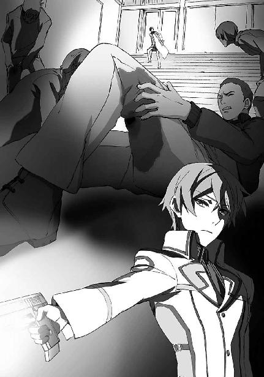
彼が今まで立っていた場所に、乗り込んできたのは、桐原武明。
どうやら裏口から逆に進んで、ここまで道を、文字どおり、切り開いてきたらしい。
「よぉ。コイツらをやったのは、お前か？」
他に答えなどあるはずは無い。
達也が肯定を返す前に、桐原は何度も頷いた。
「やるじゃねえか、司波兄。
それで、こいつは？」
怯えた顔で壁に張り付く男を、蔑みの目で桐原は指した。
「それが、ブランシュのリーダー、司一です」
「こいつが......？」
変化は、一瞬。
達也ですらたじろぐほどの怒気が、桐原の全身から放射された。
「こいつか！
壬生を誑かしやがったのは！」
「ひいぃぃぃぃ！」
憤怒の表情で詰め寄る桐原に、窮鼠の力を振り絞ったのか、先に数倍するサイオンのノイズが浴びせられる。
本来であれば、桐原の高周波ブレードは、効果を失わなければならなかった。
それほどの強度で、キャスト・ジャミングは発動していた。
だが。
「テメエの所為で、壬生がぁぁ！」
「ぎゃああぁぁぁぁ！」
刃引きされた桐原の刀は、真鍮色の腕輪がはまる司一の右腕を、肘から切り落としていた。
桐原の開けた穴から、克人が姿を見せた。
彼は一瞬、眉を顰めた後、左手のＣＡＤを操作した。
深雪と同じ、携帯端末形態の汎用型ＣＡＤ。
五感で知覚できるタイムラグは無かった。
肉の焼ける臭いと共に、出血が止まり、絶叫も止まった。
司一は、泡を吹き、失禁して、失神していた。
［12］
事件の後始末は、克人が引き受けてくれた。
達也たちの行為は、良くて過剰防衛、悪くすれば傷害・および殺人未遂・プラス魔法の無免許使用だが、司直の手が彼らに伸びることはなかった。
十師族の権勢は、司法当局を凌駕する。
現代魔法の才能が先天的素質に左右されることが分かってしまえば、当然の帰結として、血縁による強化が企図される。
それは、魔法を体系的に研究するだけの国力のある国なら、世界中どの国でも、現代魔法と超能力がまだまだ未分化であった時代から既に、行われていた。
無論、この国でも実行された。
その結果、この国の魔法界に君臨する新たな一団が形成された。
それが、十師族。
一世紀に満たぬ歴史では、その序列はまだまだ流動的だ。
だがそれは、十師族と呼ばれる家系の中での話であり、十師族とそれ以外の人々の間には、既に乗り越えがたい垣根ができ上がっていた。
十師族と同様に血縁による強化を重ね、十師族に次ぐ、と見なされている百家も、その格の差を自ら認めざるを得ないほどに。
十師族は、決して政治の表舞台には立たない。
表の権力者には成らない。
むしろ、兵士として、警官として、行政官として、その魔法の力を使い最前線でこの国を支えている。
その代わり──表の権力を放棄した代わりに、政治の裏側で不可侵に等しい権勢を手にした。
それがこの国の、現代の魔法遣いが選んだ道だった。
現在、十師族の中で最も有力とされているのが、四葉と七草の両家。
それに続く三番手が、十文字。
十文字家の総領が関わる事件に、普通の警察が、関与できるはずもないのだった。
事件の後、遥は長期の、出張扱いとなっている。
扱い、というのは、それが事実から乖離した名目だからだ。
あの時のレオの質問に対する回答は、未だに、本人の口からは語られていない。
交代のカウンセラーが着任していないところを見ると、一応、戻ってくる予定ではあるようだが。
後始末といえば、達也が「分解」の応用で切断した図書館特別閲覧室の扉は、ブランシュの工作員によって破壊されたことになっている。
その方が学校側としても、鍵管理の不始末を追求されなくて済むからだ。──もっとも学校には、達也が自分で複合装甲の扉を切り離した、などとは申告していないので、半分以上、本気で信じている向きがあったが。
学校側が行った工作は、生徒に鍵を盗まれた事実の隠蔽だった。
そもそも、あの場に第一高校の生徒がいたという、事実自体がなくなった。
紗耶香のスパイ未遂も、大人の事情により、最初から無かったことになった。
紗耶香はしばらく入院することになった。
右腕の亀裂骨折は入院するほどの怪我ではなかったが、ブランシュのリーダーが光波振動系魔法・邪眼の使い手であることが判明した為、マインドコントロールの影響が残っていないかどうか、様子を見ることになったのである。
入院中、達也は一度お見舞いに行っただけだが、エリカは頻繁に足を運んでおり、すっかり親しくなった様子である。
男子剣道部主将だった司甲も、罪を問われることは無かった。彼が深刻なマインドコントロールの影響下にあったからだ。
彼は退学ではなく休学の扱いで長期間の治療を受けているところだが、結局、第一高校は自主退学ということになるだろう。
彼は元々魔法師志望では無く、霊子放射光過敏症も日常生活の障碍になるほどではなかった。
司一が彼の魔法的知覚力に目をつけ、組織の役に立ちそうな魔法を見つけ出させる為に魔法科高校へ通わせていたということも判明している。マインドコントロールが解けた後は、本当にやりたかったこと、おそらくは剣道に邁進することだろう。
達也の特殊な魔法の才能は、あの時廃工場へ同行した戦友以外には、まだ知られていない。
真由美や摩利にも知られていない。
友人である美月や、ほのかや、雫も知らない。
正確には、レオにもエリカにも、肝心な部分は知られていない。
克人が何を考えて桐原にも口止めしてくれたのかは分からないが、達也にとってはありがたいことだった。
彼のあの魔法を、今、公にすることはできないからだ。
もっとも、真由美と摩利は、薄々何かを勘づいているようではあった。
深雪はあれから一週間ほど落ち込んでいた。
表面上は相変わらず完璧な美少女だったが、ふとした弾みに両手で顔を覆っている姿が見られた。
──自宅内、限定で。
さすがに「ニブルヘイム」は、やり過ぎだったと思っているらしい。
幸い、ブランシュのメンバーたちは偶然コールドスリープ状態になっていた為（魔法の性質上、内部まで均質に一瞬で凍結が起こるから細胞膜破壊は生じない）、肉体に回復不能の欠損を負った者はいなかったようだが。
そんな時は、達也がいくらでも深雪を甘えさせたので、かえって落ち込みモードから脱却するのが遅れるような、笑えないようで笑うしかない状況も生じていた。
学校での達也は相変わらず、風紀委員会と生徒会の雑事に振り回されていたが、ようやく入学時に思い描いていたような、静かな修学環境も手に入れつつあった。
◇ ◇ ◇
そして、五月になった。
今日は、紗耶香の退院の日。
達也も深雪と一緒に、お祝いに病院を訪れた。（授業は午前中自主休講にした。受講の自由度は、教師がいない端末学習の大きなメリットだ）
そこには......
「あれは、桐原先輩ではありませんか？」
深雪に言われるまでもなく、達也は気づいていた。
紗耶香は既に、入院着から普段着に着替え、エントランスホールで家族や看護師に囲まれている。
その輪の中で、紗耶香の隣で談笑に加わっている桐原の顔は、何処か照れ臭げであり、また、少しばかり浮かれ気味のようにも見えた。
「随分親しげですね？」
一連の騒動の、いわば発端となった「剣道部乱入事件」の顚末は、深雪も当然知っている。
その当事者である紗耶香と桐原があそこまで親しげにしている光景は、確かにチョッと不思議な感じがした。
「桐原先輩、毎日来てたんだって」
「へぇ、それはまた」
何の前触れもなく掛けられた声に振り向いてみると、エリカがつまらなさそうな顔で立っていた。
「ちぇっ、やっぱり、驚かすのは無理かぁ」
「いや、驚いたぞ。
桐原先輩がそんなにマメな性格だったとは」
「そっちじゃない！」
無論、達也も分かった上で話を逸らしているので、膨れっ面のエリカに、ただごまかし笑いを浮かべるだけだった。
「フンだ。そんな風に性格悪いコトばかりやってるから、さーやにもフられちゃうのよ」
ふられた云々については、達也はそれほど気にならなかった。
自慢ではないが、女性にモテた経験はゼロだ。
それより──
「エリカ......『さーや』ってもしかして、壬生先輩のことなの？」
問い掛けの声は、深雪の方が一足、早かった。
「んっ？ そうだよ」
「......随分親しくなったんだな」
「任せて」
何を？ と喉元まで出掛かったが、混沌がどんどん深まって行きそうだったので、未発のまま、吞み込むことにした。
それより今日は、退院のお見舞いに来たのだ。
「壬生先輩」
後ろに深雪とエリカを引き連れて──エリカが大人しくついてくるかどうか、少し不安だったのだが、いくら何でも杞憂だった──達也は人の輪の中へ、声を掛けた。
「司波君！ 来てくれたの？」
少し、ビックリした顔で、ちょっと意外だと、表情で語りながら、驚きもまた喜びの中に溶かし込んで、紗耶香は満面の笑みで達也を迎えた。
──隣で桐原が、一瞬、ムッとした表情を浮かべたのも、きっとご愛敬、それもまた平和な日常を演出するスパイスなのだろう。
「退院おめでとうございます」
深雪が両手に抱えていた花束を渡す。
最初達也は、現代の風習に倣い、デリバリーにしようとしていたのだが、こういうものは自分の手で持っていくことに意味があるのです！ と珍しく強固に反対した深雪の剣幕に押されて、持参することにしたのである。
花束を抱えた深雪は、あまりにも似合いすぎていて逆に、都会の日常風景から浮いてしまっていたが、嬉しそうに受け取る紗耶香の笑顔を見ていると、妹の言うとおりにしておいて良かった、と達也は思うのだった。
「君が司波君かね」
女子高校生同士のお喋りから一歩引いたところで、相槌役に徹していた達也に、壮年の男性が声を掛けてきた。
苗字だけで呼び掛けられても、視線で、誤解の余地はない。
引き締まった身体とブレのない姿勢は、武道の賜だろうか。
顔立ちも、紗耶香との血縁を感じさせるものだった。
「私は壬生勇三、紗耶香の父親だ」
「初めまして、司波達也です」
「妹の司波深雪です。初めまして」
達也が挨拶を交わしていたのに目敏く気づいた深雪が、達也の後ろで丁寧に一礼する。
その優雅な挙措に少したじろいだ様を見せたが、すぐに表情を引き締めたところはさすがに武道家と言うべきか。
紗耶香の剣は、きっと、この父親譲りなのだろう。
「深雪、エリカを見ていてくれないか」
達也に言われ振り返ると、桐原がエリカのトークに追い詰められているところだった。
「はい。小父様、失礼いたします」
深雪の「小父様」という人称に、紗耶香の父親は動揺を隠しきれぬ様子だったが、何とか無難に返事を返した。
もちろん、達也も深雪も、気づかないふりをした。
改めて、達也は紗耶香の父親と向き合った。
紗耶香の父親も、深雪を外させたのが達也の気配りであることは理解していたので、余計な前置きで時間を浪費するような真似はしなかった。
「司波君、君には感謝している。娘が立ち直れたのは、君のおかげだ」
「自分は何もしていません。
壬生先輩を説得したのは妹と千葉です。
入院中に先輩の力になったのは、千葉と桐原先輩です。
冷たく突き放しただけの自分は、恨まれこそすれ、感謝されるに値しません」
「それを言うなら、私は突き放すことすらできなかった。
魔法が中々上達しないことを娘が気に病んでいたのは知っていたが、私はそれを然して重要な問題だと考えていなかった。魔法技能の評価と実戦の強さは別物だという自分の経験則に囚われて、娘がどれほど悩んでいたか、本当は分かっていなかった。
それどころか、忙しさを口実にして、おかしな連中とつき合い始めた娘と向き合おうともしなかった駄目な父親だ。
今回のことは、一通り娘から聞いたよ。
娘は、君の話を聞いて、久しぶりに迷うことを思い出した、と言っていた。
それが、悪夢から醒める、きっかけになったと。
そして娘は君に感謝していたよ。
無駄ではなかった、と言ってもらえて、救われたと。
それが何を意味しているのか私には分からなかったが、娘の感謝が本物であることだけは分かった。
だから、言わせて欲しい。
ありがとう」
「......本当に、感謝されるようなことは何も」
困惑気味に、微かに首を振った達也に、紗耶香の父親は小さく笑った。
「......君は風間に聞いていたとおりの男なのだな」
その台詞は、達也の冷静さを奪うには十分なものだった。
「......風間少佐をご存じなのですか？」
「私は既に退役した身だが、兵舎で起居を共にした戦友だよ。歳も同じでね。未だに親しくさせてもらっている」
ただ「親しい」だけでないことは、今までの言葉で分かる。
分かってしまう。
単なる友人に──それが親友であっても──風間が達也のことを話すはずがないからだ。
「私は、紗耶香が君と知遇を得たのは、天の配剤だったと思っている。感謝しても感謝しきれないと思っているのだよ。
できればこれからも、君のような男に紗耶香を支えてもらいたかったのだが......」
「......自分は、誰かの支えになれるような人間ではありませんよ」
「......そういうことにしておこうか。
今のは、他愛もない親バカな願望だと、忘れてやってくれ。
それと、風間から聞いたことは誰にも、無論、娘にも、他言しないから安心して欲しい。
私はただ、君が娘を救うことのできる人間で、実際に救ってくれたのだということを知っていると、君に伝えたかっただけだ。
本当に、ありがとう」
そう言って、返事を待たず──これ以上の卑下を達也に言わせず──紗耶香の父親は、妻のところへ戻っていった。
頭を小さく振って、小さくなかった動揺を意識外へ追い出し、達也も妹たちの所へ戻った。
「あっ、司波君。お父さんと何を話していたの？」
すぐさま、渡りに船あるいは溺れる者の藁という感じで、紗耶香が話し掛けてきた。
どうやら深雪一人では、エリカを抑えきれなかったようだ。
「俺が昔お世話になった人が、お父上の親しいご友人だった、という話をしていたんですよ」
「へえ、そうなの」
「ええ、世間は狭いですね」
「達也くんとさーやって、やっぱり深い縁があるのね」
そこへすかさず絡んでくるエリカ。
どうやら今日の彼女は絶好調らしい。
「ねえ、さーや。どうして達也くんから桐原先輩に乗り換えちゃったの？
達也くんのこと、好きだったんでしょ？」
「チョ、チョッとエリちゃん？」
慌てふためく紗耶香を見ながら、達也は少し違うことを考えていた。
（エリちゃん、ねぇ......）
この二人、余程気が合うのだろう、と達也は思った。──他人事のように。
「エリカ、貴女今日は、少し調子に乗りすぎよ」
深雪がたしなめても、馬耳東風と聞き流している。
絶好調を突き抜けている好調ぶりだ。
「ルックスだけなら、達也くんの方が上だと思うんだけどな」
「......つくづく失礼な女だな、お前」
「ドンマイ。桐原先輩、男は顔じゃないよ」
「......マジに泣かしたろか、コイツ」
「まあまあ。
それで、さーや、やっぱり決め手は、まめまめしさ？
不器用な男の優しさって、グッと来るよね？」
紗耶香の顔は、耳まで赤くなっていた。
何とか目を逸らそうとするが、その度にエリカが素早く回り込んでくる──多分、魔法まで使って──ので、遂には泣きそうな顔で俯いてしまった。
「エリカ、そろそろ──」
いい加減、頃合いだろう。
そう思った達也が、実力行使込みで止めに入ろうとしたその時、
「うん......多分、エリちゃんの言うとおり」
か細い声で、紗耶香が告白し始めて、しまった。
動揺が極に達して、精神の防壁が壊れてしまったようだ。
「あたし、司波君に恋してたんだと思う......」
「おおぅっ？」
紗耶香の告白に、一番目を白黒させていたのは何故か、エリカだった。
「あたしが憧れた、揺らぐことのない強さを持っているから。
でも、憧れると同時に、怖かったんだと思う」
深雪の向ける気遣いの眼差しに、達也は微かな苦笑いで応えた。
どうもこの妹は、彼のことを繊細な神経の持ち主だと思い込んでいるらしかった。
「あたしがどんなに一所懸命走っても、司波君にはきっと、追いつけない。
司波君みたいになるには、あたしはずっと走り続けなくちゃいけなくて、多分、どんなに走っても、あんな風に強くはなれない......。
いっぱい力になってもらった司波君には失礼な言い方だと思うけど、そう思ったわ」
「......分かる気がするよ。達也くんには確かに、そんな風に思わせる所、あるね」
「桐原君は......まともに会話したのは、お見舞いに来てくれた時が初めてだったけど、多分この人なら、喧嘩しながらも同じ速さで歩いてくれると思った。
だからかな......」
「......ごちそうさま」
おちゃらけた言い方には賛同しかねるが、心情的には、達也もエリカに同感だった。
その時の紗耶香は、達也の前で演じていた「可愛らしい女の子」ではなく、本当に「可愛い女の子」だった。
「ねえ、桐原先輩は？
いつからさーやのこと、好きだったの？」
「......うるせー女だな。別に良いだろ、そんなこと。
お前にゃ関係ねえ」
「そうだぞ、エリカ。いつからなんて、関係はない」
それまで口を挿もうとしなかった達也が、突如教訓じみたことを、何処か人の悪い口調で言い出したので、エリカが頭上に疑問符を浮かべて振り向いた。
「大切なのは、桐原先輩が本気で壬生先輩に惚れているということだ」
「なっ！ おまっ？」
「へぇ......」
「詳しいことは、プライバシーにも関わってくるから言えないが......。
ブランシュのリーダーを前にした桐原先輩の勇姿には、男として敵わないと思ったな」
「そっか......。
ねえ、達也くん」
「なんだ？」
「後でコッソリ教えてね」
「千葉、テメエ！
司波も、喋りやがったら承知しねえぞ！」
「喋りませんよ」
「えーっ、いいじゃない」
「この女ぁ！」
猛り狂う桐原ときゃあきゃあ言って逃げ回る真似をするエリカを、紗耶香の両親も、看護師も、紗耶香本人も、暖かい眼差しで笑って見ている。
そのうち本当に追いかけっこを始めてしまった二人を暖かい──と言うより生暖かい目で見ていた達也の横に、深雪がそっと、並んだ。
「お兄様」
「うん？」
達也はエリカたちに視線を固定したまま、短く応えた。
「深雪は、いつまでも、お兄様について行きますから。
仮令お兄様が、音の速さで駆け抜けて行かれても。
空を突き抜け、星々の高みへ翔け昇られても」
「......置いて行かれるのは、どちらかと言えば俺の方だと思うんだがな」
そこで達也は、少々情けない感じの笑みを浮かべた。
「だが、今はとりあえず、天を目指すよりも足下を固めるのが先だ」
深雪も悪戯っぽい笑みを返した。
「学校へ戻られますか？」
「ああ。午後の実習には出席しないと、週末に居残りだからな」
兄が冗談で言っているということは、深雪にも分かっている。だから彼女も笑っていられる。
それでも、この時、深雪はそれを問わずには──確認せずにはいられなかった。
「お兄様......学校が、お辛くはありませんか？ お兄様の実力があれば、本来、高校に通う必要などございませんのに......。
それでも、侮りを受けてまで学校に通われているのは、わたしの為に無理を」
「深雪」
彼女の問い掛けは、達也の声に遮られた。
「俺は嫌々高校に通っているんじゃないよ。この日常は、今しか経験できないものだと分かっているからね。
俺はお前と、普通に学生でいられることが楽しいんだ」
「お兄様......」
「そういうわけで、今日のところは『日常』に戻ろうか」
少し照れ臭そうに、達也が深雪に手を差し伸べる。
深雪は嬉しそうに、その手を取った。
──だが結局のところ、午後の実習に間に合わなかったエリカに泣きつかれて、達也は週末に居残る羽目になった。
第一話 完
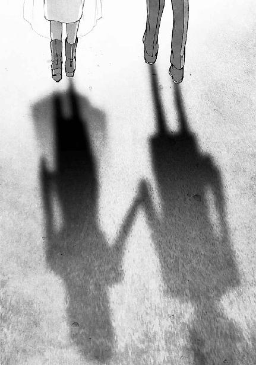
あとがき
皆様がこのあとがきをご覧になっているということは、無事にこの本が世に出たということですね。私は未だに自分の書いた小説が本になるということに完全な実感を持てずにいます。
と申しますのもこの小説、デビュー作の分際で第一話からいきなり上下巻という、あまりに大胆なスタートを切っておりまして、しかも二ヶ月連続刊行ですから、このあとがきを書いている時点でまだ本として出来上がった現物を見ていないのです。私自身は「上下巻同時に出ませんか」と無理を承知でお願いしたくらいですから、タイトなスケジュールに四苦八苦しても自業自得というものですが、巻き添えとなった（？）石田様をはじめとするスタッフの皆様、無理を言って申し訳ございませんでした。
正直なところ、何の実績もない全くの新人がいきなり「下巻へ続く」などという大それた所業に走って、本当に大丈夫だろうか、と少なからず怯えております。元がページ数を気にする必要の無いメディアで書いていた物ですから、文庫にする際に分割するか削減するかしなければならないのは分かっていたことですし、編集様が「削らなくても良い」と仰って下さったのは書き手として大変ありがたいことなのですが、やはり不安です。
イレギュラーであるということは、それだけで不安を誘うものだと改めて実感しました。まあ、その不安があったらばこそ、上下巻を二ヶ月連続して出すという編集様の方針に一も二もなく頷いたわけですが......
イレギュラーと言えば、この小説『魔法科高校の劣等生』のメインキャラクターは皆、程度の差はありますがイレギュラーな少年少女たちです。そもそも主人公達也のコンセプトが「既存の枠組みでは評価できないが故に劣等生の烙印を押された少年」であり、その脇を固める面々もどこかしらイレギュラーです。もう一人の主人公とも言える妹の深雪も、優等生ではありますが決して普通ではありません。......本編をお読みいただいた読者の皆様には改めて申し上げるまでも無いとは思いますが。
しかし彼ら、彼女たちは、自分がイレギュラーであることに不安を覚え、葛藤したりはしません。主人公も他のメインキャラも、「それがどうした」と開き直っています。いえ、開き直っているという意識すら乏しいのかもしれません。
異端者が、異端である自分を、力ずくで押し通す......そこには多分、私の憧れが込められています。異端者が正統に屈することなく戦い抜き、ついには力尽きて敗れ散っていく、その滅びの美学も魅力的ですが、「それがどうした」と嘯きながら悠々と正統の壁を突き破って進み続ける異端者の物語も捨てがたいと思います。
達也や深雪、レオやエリカ、真由美や摩利やその他多くの、優等生も劣等生もひっくるめたイレギュラーたちを使って......
そういう物語が書ければ良いな、と思っています。
さて、夢を語るのはここまでにしまして。
今回もステキなイラストをつけて下さった石田様、私のわがままな注文に根気よくおつきあい下さいましたストーン様をはじめ、この本の製作に関わって下さった全てのスタッフの皆様、本当にありがとうございました。特にＭ木様、色々と至らぬところばかりで誠に申し訳ございません。
そして何より、この本を手にとって下さいました読者の皆様に、最大級の感謝を。
願わくば、次回『魔法科高校の劣等生③ 九校戦編〈上〉』でお目にかかれますように。
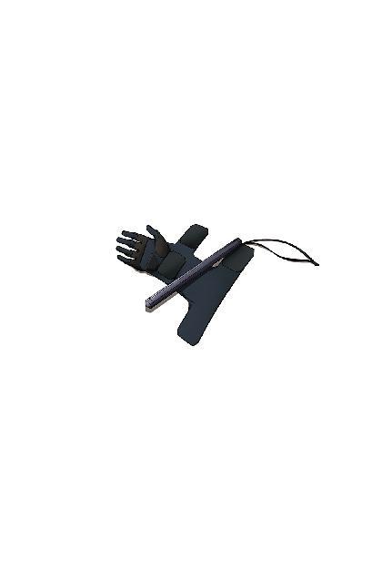
佐島勤
西暦１９ＸＸ年、日本の片田舎に生まれる。和洋のスペースオペラを糧に少年時代を過ごす。青年時代、ファンタジーと伝奇小説に転向。卒業後、企業戦士（ただし雑兵）として現実世界に魂を売り渡すも、西暦２０１１年、遅れてきたジュブナイル作家として空想世界に帰還を果たす。（本プロフィールには虚偽と誇張表現が含まれています）
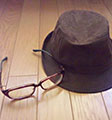
イラスト／石田可奈
西暦１９ＸＸ年生まれ。挿絵は初仕事。本業はアニメーター。過去作としては、『コードギアス 反逆のルルーシュ』『機動戦士ガンダムＵＣ』（作画監督）、『俺の妹がこんなに可愛いわけがない』（総作画監督）など。次回作は『アクエリオンＥＶＯＬ』。
SpecialThanks：ジミーストーンさん。末永康子さん。
 電撃文庫
電撃文庫
魔法科高校の劣等生②
入学編〈下〉
佐島勤
発 行 2015年11月2日
発行者 塚田正晃
発行所 株式会社KADOKAWA
〒102-8177 東京都千代田区富士見2-13-3
03-3238-8745（営業）
http://www.kadokawa.co.jp/
プロデュース アスキー・メディアワークス
〒102-8584 東京都千代田区富士見1-8-19
03-5216-8399（編集）
http://dengekibunko.jp/
本書（電子版）に掲載されているコンテンツ（ソフトウェア／プログラム／データ／情報を含む）の著作権およびその他の権利は、すべて株式会社KADOKAWAおよび正当な権利を有する第三者に帰属しています。
法律の定めがある場合または権利者の明示的な承諾がある場合を除き、これらのコンテンツを複製・転載、改変・編集、翻案・翻訳、放送・出版、公衆送信（送信可能化を含む）・再配信、販売・頒布、貸与等に使用することはできません。
(C)2011 TSUTOMU SATO
※2014年4月25日発行の電撃文庫『魔法科高校の劣等生② 入学編〈下〉』21版に基づき制作